1 Generative Models for Discrete Data
## -----------------------------------------------------------------------------
dpois(x = 3, lambda = 5)## [1] 0.1403739## -----------------------------------------------------------------------------
.oldopt = options(digits = 2)
0:12## [1] 0 1 2 3 4 5 6 7 8 9 10 11 12dpois(x = 0:12, lambda = 5)## [1] 0.0067 0.0337 0.0842 0.1404 0.1755 0.1755 0.1462 0.1044 0.0653 0.0363
## [11] 0.0181 0.0082 0.0034barplot(dpois(0:12, 5), names.arg = 0:12, col = "red")options(.oldopt)## -----------------------------------------------------------------------------
genotype = c("AA","AO","BB","AO","OO","AO","AA","BO","BO",
"AO","BB","AO","BO","AB","OO","AB","BB","AO","AO")
table(genotype)## genotype
## AA AB AO BB BO OO
## 2 2 7 3 3 2## -----------------------------------------------------------------------------
genotypeF = factor(genotype)
levels(genotypeF)## [1] "AA" "AB" "AO" "BB" "BO" "OO"table(genotypeF)## genotypeF
## AA AB AO BB BO OO
## 2 2 7 3 3 2## -----------------------------------------------------------------------------
rbinom(15, prob = 0.5, size = 1)## [1] 1 1 1 1 1 1 1 1 0 1 0 0 0 0 0## -----------------------------------------------------------------------------
rbinom(12, prob = 2/3, size = 1)## [1] 1 1 1 0 0 0 1 1 0 0 1 1## -----------------------------------------------------------------------------
rbinom(1, prob = 2/3, size = 12)## [1] 9## -----------------------------------------------------------------------------
set.seed(235569515)
rbinom(1, prob = 0.3, size = 15)## [1] 5## -----------------------------------------------------------------------------
probabilities = dbinom(0:15, prob = 0.3, size = 15)
round(probabilities, 2)## [1] 0.00 0.03 0.09 0.17 0.22 0.21 0.15 0.08 0.03 0.01 0.00 0.00 0.00 0.00 0.00
## [16] 0.00## -----------------------------------------------------------------------------
barplot(probabilities, names.arg = 0:15, col = "red")## -----------------------------------------------------------------------------
plot(dbinom(0:12, prob = 5e-4, size = 1e4), dpois(0:12, lambda = 5), asp = 1)
abline(a = 0, b = 1, col = "blue")## -----------------------------------------------------------------------------
5^3 * exp(-5) / factorial(3)## [1] 0.1403739## -----------------------------------------------------------------------------
rbinom(1, prob = 5e-4, size = 10000)## [1] 6simulations = rbinom(n = 300000, prob = 5e-4, size = 10000)
barplot(table(simulations), col = "lavender")## -----------------------------------------------------------------------------
`[<-`(rep(0, 100), 22, 1)## [1] 0 0 0 0 0 0 0 0 0 0 0 0 0 0 0 0 0 0 0 0 0 1 0 0 0 0 0 0 0 0 0 0 0 0 0 0 0
## [38] 0 0 0 0 0 0 0 0 0 0 0 0 0 0 0 0 0 0 0 0 0 0 0 0 0 0 0 0 0 0 0 0 0 0 0 0 0
## [75] 0 0 0 0 0 0 0 0 0 0 0 0 0 0 0 0 0 0 0 0 0 0 0 0 0 0## -----------------------------------------------------------------------------
s100 = rpois(100, lambda=0.5)
s100## [1] 0 0 1 0 0 0 0 0 1 0 0 1 0 0 0 1 0 0 1 0 0 1 1 0 0 0 0 0 0 0 0 1 1 1 2 0 0
## [38] 0 1 2 0 1 0 1 2 0 2 0 1 2 1 0 1 0 0 0 0 0 1 0 0 1 2 0 0 0 1 0 1 2 0 0 0 0
## [75] 0 0 0 0 1 0 1 1 1 0 0 0 0 0 0 0 0 1 0 0 0 1 0 4 3 1barplot(s100, ylim = c(0, 7), width = 0.7, xlim = c(-0.5,100.5),
names.arg = seq(along = s100), col="lavender")## -----------------------------------------------------------------------------
## set.seed(8969311)
## e100 = rpois(100,lambda = 0.5)
## e100[42] = 7
## save(e100, file = "../data/e100.RData")
## -----------------------------------------------------------------------------
setwd("D:/books/R/blogdown/hugo")
load("../data/e100.RData")
barplot(e100, ylim = c(0, 7), width = 0.7, xlim = c(-0.5, 100.5),
names.arg = seq(along = e100), col = "darkolivegreen")## -----------------------------------------------------------------------------
barplot(e100, ylim = c(0, 7), width = 0.7, xlim = c(-0.5, 100.5),
names.arg = seq(along = e100), col = "darkolivegreen")
text(35, 7, adj = c(-0.05, 0.5), labels = "?", xpd = NA, col = "red",
cex = 1.25, font = 2)## -----------------------------------------------------------------------------
1 - ppois(6, 0.5)## [1] 1.00238e-06ppois(6, 0.5, lower.tail = FALSE)## [1] 1.00238e-06## -----------------------------------------------------------------------------
maxes = replicate(100000, {
max(rpois(100, 0.5))
})
table(maxes)## maxes
## 1 2 3 4 5 6 7 9
## 7 23028 60840 14364 1604 141 15 1## -----------------------------------------------------------------------------
mean( maxes >= 7 )## [1] 0.00016## -----------------------------------------------------------------------------
dmultinom(c(4, 2, 0, 0), prob = rep(1/4, 4))## [1] 0.003662109## -----------------------------------------------------------------------------
pvec = rep(1/4, 4)
t(rmultinom(1, prob = pvec, size = 8))## [,1] [,2] [,3] [,4]
## [1,] 1 3 1 3## -----------------------------------------------------------------------------
pvec = rep(1/4, 4)
t(rmultinom(1, prob = pvec, size = 80))## [,1] [,2] [,3] [,4]
## [1,] 23 22 15 20## -----------------------------------------------------------------------------
pvec = rep(1/4, 4)
t(rmultinom(8, prob = pvec, size = 1))## [,1] [,2] [,3] [,4]
## [1,] 0 0 0 1
## [2,] 1 0 0 0
## [3,] 0 0 1 0
## [4,] 1 0 0 0
## [5,] 0 0 0 1
## [6,] 1 0 0 0
## [7,] 1 0 0 0
## [8,] 0 0 0 1## -----------------------------------------------------------------------------
obsunder0 = rmultinom(1000, prob = pvec, size = 20)
dim(obsunder0)## [1] 4 1000obsunder0[, 1:11]## [,1] [,2] [,3] [,4] [,5] [,6] [,7] [,8] [,9] [,10] [,11]
## [1,] 7 4 3 3 4 5 1 2 7 4 5
## [2,] 4 9 3 6 6 2 6 8 5 5 4
## [3,] 6 4 6 5 3 9 5 5 4 3 4
## [4,] 3 3 8 6 7 4 8 5 4 8 7## -----------------------------------------------------------------------------
thep = unique(pvec); stopifnot(length(thep)==1, thep == 0.25)
thep## [1] 0.25## -----------------------------------------------------------------------------
expected0 = pvec * 20
sum((obsunder0[, 1] - expected0)^2 / expected0)## [1] 2sum((obsunder0[, 2] - expected0)^2 / expected0)## [1] 4.4sum((obsunder0[, 3] - expected0)^2 / expected0)## [1] 3.6(5-5)^2/5+(4-5)^2/5+(6-5)^2/5+(5-5)^2/5## [1] 0.4(4-5)^2/5+(6-5)^2/5+(6-5)^2/5+(4-5)^2/5## [1] 0.8(6-5)^2/5+(4-5)^2/5+(4-5)^2/5+(6-5)^2/5## [1] 0.8## -----------------------------------------------------------------------------
stat = function(obsvd, exptd = 20 * pvec) {
sum((obsvd - exptd)^2 / exptd)
}
stat(obsunder0[, 1])## [1] 2## -----------------------------------------------------------------------------
S0 = apply(obsunder0, 2, stat)
summary(S0)## Min. 1st Qu. Median Mean 3rd Qu. Max.
## 0.000 1.200 2.800 3.086 4.000 16.400hist(S0, breaks = 25, col = "lavender", main = "")## -----------------------------------------------------------------------------
q95 = quantile(S0, probs = 0.95)
q95## 95%
## 7.6## -----------------------------------------------------------------------------
## ## This was done to save this object for its reuse in Chapter 2.
## save(S0, file = "../data/S0.RData")
## -----------------------------------------------------------------------------
pvecA = c(3/8, 1/4, 1/4, 1/8)
observed = rmultinom(1000, prob = pvecA, size = 20)
dim(observed)## [1] 4 1000observed[, 1:7]## [,1] [,2] [,3] [,4] [,5] [,6] [,7]
## [1,] 3 6 7 9 15 10 9
## [2,] 9 3 5 3 2 5 6
## [3,] 7 9 4 4 3 3 2
## [4,] 1 2 4 4 0 2 3apply(observed, 1, mean)## [1] 7.459 4.926 5.100 2.515expectedA = pvecA * 20
expectedA## [1] 7.5 5.0 5.0 2.5## -----------------------------------------------------------------------------
stat(observed[, 1])## [1] 8S1 = apply(observed, 2, stat)
q95 # can't reject the first observation, because the statistic is within the 95% percentile## 95%
## 7.6sum(S1 > q95)## [1] 197power = mean(S1 > q95)
power## [1] 0.197## -----------------------------------------------------------------------------
#stopifnot(stat(observed[, 1]) < q95)## -----------------------------------------------------------------------------
dbinom(2, size = 10, prob = 0.3) # run size = 10, prob = 0.3 binomial distribution, the probability at 2## [1] 0.2334744pbinom(2, size = 10, prob = 0.3) # run size = 10, prob = 0.3 binomial distribution, the probability <= 2## [1] 0.3827828sum(dbinom(0:2, size = 10, prob = 0.3)) ## [1] 0.3827828Whenever we note that we keep needing a certain sequence of commands, it’s good to put them into a function. The function body contains the instructions that we want to do over and over again, the function arguments take those things that we may want to vary. Write a function to compute the probability of having a maximum as big as m when looking across n Poisson variables with rate lambda.
## -----------------------------------------------------------------------------
poismax = function(lambda, n, m) {
epsilon = 1 - ppois(m - 1, lambda)
1 - exp( -n * epsilon)
}
poismax(lambda = 0.5, n = 100, m = 7)## [1] 0.0001002329poismax(lambda = mean(e100), n = 100, m = 7)## [1] 0.0001870183## -----------------------------------------------------------------------------
poismax = function(lambda, n = 100, m = 7) {
1 - exp( -n * (1 - ppois(m - 1, lambda)))
}
poismax(0.5)## [1] 0.0001002329poismax(0.5, m = 9)## [1] 3.43549e-07## -----------------------------------------------------------------------------
## if (!requireNamespace("BiocManager", quietly = TRUE))
## install.packages("BiocManager")
## BiocManager::install(c("Biostrings", "BSgenome.Celegans.UCSC.ce2"))
## -----------------------------------------------------------------------------
library("BSgenome.Celegans.UCSC.ce2")## Loading required package: BSgenome## Loading required package: BiocGenerics##
## Attaching package: 'BiocGenerics'## The following objects are masked from 'package:stats':
##
## IQR, mad, sd, var, xtabs## The following objects are masked from 'package:base':
##
## anyDuplicated, append, as.data.frame, basename, cbind, colnames,
## dirname, do.call, duplicated, eval, evalq, Filter, Find, get, grep,
## grepl, intersect, is.unsorted, lapply, Map, mapply, match, mget,
## order, paste, pmax, pmax.int, pmin, pmin.int, Position, rank,
## rbind, Reduce, rownames, sapply, setdiff, sort, table, tapply,
## union, unique, unsplit, which.max, which.min## Loading required package: S4Vectors## Loading required package: stats4##
## Attaching package: 'S4Vectors'## The following objects are masked from 'package:base':
##
## expand.grid, I, unname## Loading required package: IRanges##
## Attaching package: 'IRanges'## The following object is masked from 'package:grDevices':
##
## windows## Loading required package: GenomeInfoDb## Loading required package: GenomicRanges## Loading required package: Biostrings## Loading required package: XVector##
## Attaching package: 'Biostrings'## The following object is masked from 'package:base':
##
## strsplit## Loading required package: rtracklayerCelegans## Worm genome:
## # organism: Caenorhabditis elegans (Worm)
## # genome: ce2
## # provider: UCSC
## # release date: Mar. 2004
## # 7 sequences:
## # chrI chrII chrIII chrIV chrV chrX chrM
## # (use 'seqnames()' to see all the sequence names, use the '$' or '[[' operator
## # to access a given sequence)seqnames(Celegans)## [1] "chrI" "chrII" "chrIII" "chrIV" "chrV" "chrX" "chrM"Celegans$chrM## 13794-letter DNAString object
## seq: CAGTAAATAGTTTAATAAAAATATAGCATTTGGGTT...TATTTATAGATATATACTTTGTATATATCTATATTAclass(Celegans$chrM)## [1] "DNAString"
## attr(,"package")
## [1] "Biostrings"length(Celegans$chrM)## [1] 13794## -----------------------------------------------------------------------------
library("Biostrings")
lfM = letterFrequency(Celegans$chrM, letters=c("A", "C", "G", "T"))
lfM## A C G T
## 4335 1225 2055 6179sum(lfM)## [1] 13794lfM / sum(lfM)## A C G T
## 0.31426707 0.08880673 0.14897782 0.44794838## -----------------------------------------------------------------------------
t(rmultinom(1, length(Celegans$chrM), p = rep(1/4, 4)))## [,1] [,2] [,3] [,4]
## [1,] 3463 3397 3464 3470## -----------------------------------------------------------------------------
length(Celegans$chrM) / 4## [1] 3448.5## -----------------------------------------------------------------------------
oestat = function(o, e) {
sum((o-e)^2 / e)
}
oe = oestat(o = lfM, e = length(Celegans$chrM) / 4)
oe## [1] 4386.634## -----------------------------------------------------------------------------
B = 10000
n = length(Celegans$chrM)
expected = rep(n / 4, 4)
oenull = replicate(B,
oestat(e = expected, o = rmultinom(1, n, p = rep(1/4, 4))))
## -----------------------------------------------------------------------------
hist(oenull, breaks = 100, col = "skyblue", main = "")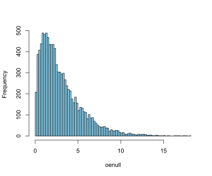
q95 = quantile(oenull, probs = 0.95)
q95## 95%
## 7.84544mean(oenull > 10)## [1] 0.0178?Distributions## starting httpd help server ... doneFor the Cauchy distribution see dcauchy.
For the chi-squared distribution see dchisq.
For the exponential distribution see dexp.
For the F distribution see df.
For the gamma distribution see dgamma.
For the geometric distribution see dgeom. (This is also a special case of the negative binomial.)
For the hypergeometric distribution see dhyper.
For the log-normal distribution see dlnorm.
For the multinomial distribution see dmultinom.
For the negative binomial distribution see dnbinom.
For the normal distribution see dnorm.
For the Poisson distribution see dpois.
For the Student’s t distribution see dt.
For the uniform distribution see dunif.
For the Weibull distribution see dweibull.
posiv = rpois(n=1000, lambda=3)
mean(posiv)## [1] 3.037var(posiv)## [1] 3.0566882 Statistical Modeling
rpois(100, 0.5)## [1] 1 0 0 1 1 0 1 2 0 0 0 0 2 0 1 1 1 1 1 0 1 0 0 1 1 0 0 1 3 1 1 1 1 1 1 1 1
## [38] 0 0 1 0 1 0 0 1 0 0 0 0 0 0 2 1 0 0 1 0 1 0 2 0 0 0 0 0 0 1 0 0 1 0 0 0 0
## [75] 1 0 2 1 2 0 4 0 0 2 1 2 1 1 0 1 1 1 1 0 0 0 0 0 0 0poismax = function(lambda, n, m) {
epsilon = 1 - ppois(m - 1, lambda)
1 - exp( -n * epsilon)
}
poismax(lambda = 0.5, n = 100, m = 7)## [1] 0.0001002329## -----------------------------------------------------------------------------
setwd("D:/books/R/blogdown/hugo")
load("../data/e100.RData")
e99 = e100[-which.max(e100)]
e100## [1] 2 0 1 0 0 0 2 1 0 0 0 0 0 0 0 0 0 1 1 1 0 0 1 0 1 0 0 0 1 0 0 0 0 1 0 1 1
## [38] 0 1 2 2 7 1 0 2 0 1 0 1 1 1 1 0 1 0 0 0 0 1 2 2 1 0 0 0 0 0 1 0 0 0 1 1 0
## [75] 0 1 1 0 0 0 0 1 0 0 0 1 0 1 0 0 1 1 0 0 1 1 0 0 1 0e99## [1] 2 0 1 0 0 0 2 1 0 0 0 0 0 0 0 0 0 1 1 1 0 0 1 0 1 0 0 0 1 0 0 0 0 1 0 1 1 0
## [39] 1 2 2 1 0 2 0 1 0 1 1 1 1 0 1 0 0 0 0 1 2 2 1 0 0 0 0 0 1 0 0 0 1 1 0 0 1 1
## [77] 0 0 0 0 1 0 0 0 1 0 1 0 0 1 1 0 0 1 1 0 0 1 0which.max(e100)## [1] 42## -----------------------------------------------------------------------------
barplot(table(e99), space = 0.8, col = "chartreuse4")## -----------------------------------------------------------------------------
library("vcd")## Loading required package: grid##
## Attaching package: 'grid'## The following object is masked from 'package:Biostrings':
##
## pattern##
## Attaching package: 'vcd'## The following object is masked from 'package:GenomicRanges':
##
## tile## The following object is masked from 'package:IRanges':
##
## tilegf1 = goodfit( e99, "poisson")
rootogram(gf1, xlab = "", rect_gp = gpar(fill = "chartreuse4"))## -----------------------------------------------------------------------------
simp = rpois(100, lambda = 0.05)
gf2 = goodfit(simp, "poisson")
rootogram(gf2, xlab = "")## -----------------------------------------------------------------------------
table(e100)## e100
## 0 1 2 7
## 58 34 7 1## -----------------------------------------------------------------------------
table(rpois(100, 3))##
## 0 1 2 3 4 5 6 8 9
## 2 19 24 17 19 10 4 4 1## -----------------------------------------------------------------------------
counts = table(e100)
stopifnot(identical(names(counts), c("0", "1", "2", "7")), all(counts==c(58, 34, 7, 1)))## -----------------------------------------------------------------------------
prod(dpois(c(0, 1, 2, 7), lambda = 3) ^ (c(58, 34, 7, 1)))## [1] 1.392143e-110## -----------------------------------------------------------------------------
prod(dpois(c(0, 1, 2, 7), lambda = 0.4) ^ (c(58, 34, 7, 1)))## [1] 8.5483e-46## -----------------------------------------------------------------------------
prod(dpois(c(0, 1, 2, 7), lambda = 0) ^ (c(58, 34, 7, 1)))## [1] 0## -----------------------------------------------------------------------------
loglikelihood = function(lambda, data = e100) {
sum(log(dpois(data, lambda)))
}
## -----------------------------------------------------------------------------
lambdas = seq(0.05, 0.95, length = 100)
loglik = vapply(lambdas, loglikelihood, numeric(1))
plot(lambdas, loglik, type = "l", col = "red", ylab = "", lwd = 2,
xlab = expression(lambda))
m0 = mean(e100)
abline(v = m0, col = "blue", lwd = 2)
abline(h = loglikelihood(m0), col = "purple", lwd = 2)m0## [1] 0.55## -----------------------------------------------------------------------------
gf = goodfit(e100, "poisson")
names(gf)## [1] "observed" "count" "fitted" "type" "method" "df" "par"gf$par## $lambda
## [1] 0.55## -----------------------------------------------------------------------------
cb = c(rep(0, 110), rep(1, 10))
## -----------------------------------------------------------------------------
table(cb)## cb
## 0 1
## 110 10## -----------------------------------------------------------------------------
mean(cb)## [1] 0.08333333## -----------------------------------------------------------------------------
probs = seq(0, 0.3, by = 0.001)
likelihood = dbinom(sum(cb), prob = probs, size = length(cb))
plot(probs, likelihood, pch = 16, xlab = "probability of success",
ylab = "likelihood", cex=0.6)
probs[which.max(likelihood)]## [1] 0.083## -----------------------------------------------------------------------------
stopifnot(abs(probs[which.max(likelihood)]-1/12) < diff(probs[1:2]))## -----------------------------------------------------------------------------
loglikelihood = function(p, n = 300, y = 40) {
log(choose(n, y)) + y * log(p) + (n - y) * log(1 - p)
}
## -----------------------------------------------------------------------------
p_seq = seq(0, 1, by = 0.001)
plot(p_seq, loglikelihood(p_seq), xlab = "p", ylab = "log f(p|y)", type = "l")## -----------------------------------------------------------------------------
library("Biostrings")
setwd("D:/books/R/blogdown/hugo")
staph = readDNAStringSet("../data/staphsequence.ffn.txt", "fasta")
## -----------------------------------------------------------------------------
staph[1]## DNAStringSet object of length 1:
## width seq names
## [1] 1362 ATGTCGGAAAAAGAAATTTGGGA...AAAAAGAAATAAGAAATGTATAA lcl|NC_002952.2_c...The double square brackets [[i]] extract the sequence of the i-th gene as a DNAString, as opposed to the pair of single brackets [i], which return a DNAStringSet with just a single DNAString in it. If you look at the length of staph[1], it is 1, whereas staph[[1]] has length 1362.
letterFrequency(staph[[1]], letters = "ACGT", OR = 0)## A C G T
## 522 219 229 392length(staph[1])## [1] 1length(staph[[1]])## [1] 1362## -----------------------------------------------------------------------------
letterFrq = vapply(staph, letterFrequency, FUN.VALUE = numeric(4),
letters = "ACGT", OR = 0)
colnames(letterFrq) = paste0("gene", seq(along = staph))
tab10 = letterFrq[, 1:10]
tab10## gene1 gene2 gene3 gene4 gene5 gene6 gene7 gene8 gene9 gene10
## A 522 413 85 411 685 887 275 510 487 191
## C 219 176 31 168 293 395 137 244 180 111
## G 229 193 56 207 423 586 169 316 263 142
## T 392 352 74 327 531 793 250 445 357 252computeProportions = function(x) { x/sum(x) }
prop10 = apply(tab10, 2, computeProportions) # nucleotides Proportions in column
round(prop10, digits = 2)## gene1 gene2 gene3 gene4 gene5 gene6 gene7 gene8 gene9 gene10
## A 0.38 0.36 0.35 0.37 0.35 0.33 0.33 0.34 0.38 0.27
## C 0.16 0.16 0.13 0.15 0.15 0.15 0.16 0.16 0.14 0.16
## G 0.17 0.17 0.23 0.19 0.22 0.22 0.20 0.21 0.20 0.20
## T 0.29 0.31 0.30 0.29 0.27 0.30 0.30 0.29 0.28 0.36p0 = rowMeans(prop10) # nucleotides Proportions in all 10 genes
p0## A C G T
## 0.3470531 0.1518313 0.2011442 0.2999714## -----------------------------------------------------------------------------
cs = colSums(tab10) # 10 genes length
cs## gene1 gene2 gene3 gene4 gene5 gene6 gene7 gene8 gene9 gene10
## 1362 1134 246 1113 1932 2661 831 1515 1287 696expectedtab10 = outer(p0, cs, FUN = "*") # expected nucleotides Proportions if every gene has the same Proportion
round(expectedtab10)## gene1 gene2 gene3 gene4 gene5 gene6 gene7 gene8 gene9 gene10
## A 473 394 85 386 671 924 288 526 447 242
## C 207 172 37 169 293 404 126 230 195 106
## G 274 228 49 224 389 535 167 305 259 140
## T 409 340 74 334 580 798 249 454 386 209## -----------------------------------------------------------------------------
randomtab10 = sapply(cs, function(s) { rmultinom(1, s, p0) } )
randomtab10## gene1 gene2 gene3 gene4 gene5 gene6 gene7 gene8 gene9 gene10
## [1,] 464 388 82 384 674 930 322 494 413 226
## [2,] 231 175 48 166 313 425 118 243 179 116
## [3,] 260 234 51 230 380 555 160 341 296 137
## [4,] 407 337 65 333 565 751 231 437 399 217all(colSums(randomtab10) == cs)## [1] TRUE## -----------------------------------------------------------------------------
stopifnot(all(colSums(randomtab10) == cs))## -----------------------------------------------------------------------------
stat = function(obsvd, exptd) {
sum((obsvd - exptd)^2 / exptd)
}
B = 1000
simulstat = replicate(B, {
randomtab10 = sapply(cs, function(s) { rmultinom(1, s, p0) })
stat(randomtab10, expectedtab10)
})
S1 = stat(tab10, expectedtab10)
sum(simulstat >= S1)## [1] 0length(simulstat)## [1] 1000head(simulstat)## [1] 40.43308 25.31234 27.95283 17.37396 34.72065 29.15233expectedtab10## gene1 gene2 gene3 gene4 gene5 gene6 gene7 gene8
## A 472.6864 393.5582 85.37507 386.2701 670.5066 923.5084 288.4011 525.7855
## C 206.7942 172.1767 37.35049 168.9882 293.3380 404.0230 126.1718 230.0244
## G 273.9584 228.0975 49.48147 223.8735 388.6105 535.2446 167.1508 304.7334
## T 408.5611 340.1676 73.79297 333.8682 579.5448 798.2239 249.2762 454.4567
## gene9 gene10
## A 446.6574 241.5490
## C 195.4069 105.6746
## G 258.8726 139.9963
## T 386.0632 208.7801randomtab10## gene1 gene2 gene3 gene4 gene5 gene6 gene7 gene8 gene9 gene10
## [1,] 464 388 82 384 674 930 322 494 413 226
## [2,] 231 175 48 166 313 425 118 243 179 116
## [3,] 260 234 51 230 380 555 160 341 296 137
## [4,] 407 337 65 333 565 751 231 437 399 217hist(simulstat, col = "lavender", breaks = seq(0, 75, length.out=50))
abline(v = S1, col = "red")
abline(v = quantile(simulstat, probs = c(0.95, 0.99)),
col = c("darkgreen", "blue"), lty = 2)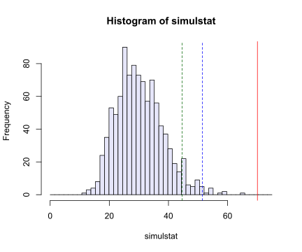
## -----------------------------------------------------------------------------
stopifnot(max(simulstat)<75, S1<75)## -----------------------------------------------------------------------------
qs = ppoints(100) #Generates the sequence of probability points 0.005 to 0.995
quantile(simulstat, qs)## 0.5% 1.5% 2.5% 3.5% 4.5% 5.5% 6.5% 7.5%
## 14.98844 16.28320 17.50259 18.24076 18.62344 19.07341 19.66079 19.91208
## 8.5% 9.5% 10.5% 11.5% 12.5% 13.5% 14.5% 15.5%
## 20.29684 20.62778 20.93192 21.10932 21.40516 21.64190 21.85037 22.13960
## 16.5% 17.5% 18.5% 19.5% 20.5% 21.5% 22.5% 23.5%
## 22.53136 22.93293 23.14039 23.41548 23.60116 23.95936 24.17024 24.42954
## 24.5% 25.5% 26.5% 27.5% 28.5% 29.5% 30.5% 31.5%
## 24.69359 24.92622 24.99886 25.16888 25.33169 25.50434 25.62677 25.83369
## 32.5% 33.5% 34.5% 35.5% 36.5% 37.5% 38.5% 39.5%
## 25.98940 26.28855 26.63070 26.81300 26.98819 27.12084 27.30601 27.47563
## 40.5% 41.5% 42.5% 43.5% 44.5% 45.5% 46.5% 47.5%
## 27.59761 27.78386 28.02836 28.18457 28.51322 28.66197 28.88965 29.00322
## 48.5% 49.5% 50.5% 51.5% 52.5% 53.5% 54.5% 55.5%
## 29.19831 29.43226 29.75325 29.87609 30.04020 30.18108 30.37550 30.63155
## 56.5% 57.5% 58.5% 59.5% 60.5% 61.5% 62.5% 63.5%
## 30.83079 31.01395 31.22237 31.45265 31.74654 31.90807 32.30407 32.55708
## 64.5% 65.5% 66.5% 67.5% 68.5% 69.5% 70.5% 71.5%
## 32.80945 32.95201 33.29111 33.50298 33.80705 33.94406 34.16076 34.33740
## 72.5% 73.5% 74.5% 75.5% 76.5% 77.5% 78.5% 79.5%
## 34.55167 34.79766 35.08447 35.45335 35.71938 35.85952 36.19083 36.42843
## 80.5% 81.5% 82.5% 83.5% 84.5% 85.5% 86.5% 87.5%
## 36.75272 37.05766 37.49101 37.94178 38.20867 38.60341 38.92721 39.44580
## 88.5% 89.5% 90.5% 91.5% 92.5% 93.5% 94.5% 95.5%
## 39.92408 40.43715 41.02038 41.56662 42.35350 43.56930 44.39798 44.93912
## 96.5% 97.5% 98.5% 99.5%
## 45.83205 48.84615 50.06561 54.04509qchisq(qs, df = 30)## [1] 13.78672 15.71876 16.79077 17.57614 18.21194 18.75446 19.23275 19.66390
## [9] 20.05886 20.42512 20.76806 21.09166 21.39894 21.69231 21.97367 22.24457
## [17] 22.50629 22.75990 23.00632 23.24631 23.48056 23.70963 23.93405 24.15428
## [25] 24.37070 24.58370 24.79358 25.00066 25.20519 25.40743 25.60760 25.80592
## [33] 26.00258 26.19776 26.39164 26.58439 26.77614 26.96707 27.15729 27.34696
## [41] 27.53620 27.72513 27.91389 28.10259 28.29136 28.48031 28.66957 28.85924
## [49] 29.04945 29.24032 29.43196 29.62450 29.81806 30.01277 30.20876 30.40616
## [57] 30.60512 30.80577 31.00828 31.21280 31.41949 31.62854 31.84012 32.05444
## [65] 32.27170 32.49213 32.71597 32.94349 33.17495 33.41067 33.65098 33.89624
## [73] 34.14685 34.40324 34.66590 34.93536 35.21223 35.49719 35.79099 36.09449
## [81] 36.40869 36.73473 37.07391 37.42780 37.79820 38.18728 38.59768 39.03260
## [89] 39.49603 39.99300 40.53003 41.11573 41.76190 42.48522 43.31057 44.27745
## [97] 45.45461 46.97924 49.19886 53.67196hist(rchisq(1000, df = 30), col = "lavender", breaks = 50)quantile(qchisq(qs, df = 30), qs)## 0.5% 1.5% 2.5% 3.5% 4.5% 5.5% 6.5% 7.5%
## 14.74308 16.23869 17.16382 17.87179 18.45879 18.96730 19.42030 19.83175
## 8.5% 9.5% 10.5% 11.5% 12.5% 13.5% 14.5% 15.5%
## 20.21086 20.56401 20.89588 21.20996 21.50896 21.79501 22.06984 22.33486
## 16.5% 17.5% 18.5% 19.5% 20.5% 21.5% 22.5% 23.5%
## 22.59125 22.83999 23.08192 23.31776 23.54813 23.77359 23.99461 24.21163
## 24.5% 25.5% 26.5% 27.5% 28.5% 29.5% 30.5% 31.5%
## 24.42502 24.63512 24.84224 25.04668 25.24867 25.44846 25.64627 25.84230
## 32.5% 33.5% 34.5% 35.5% 36.5% 37.5% 38.5% 39.5%
## 26.03673 26.22975 26.42152 26.61219 26.80192 26.99084 27.17910 27.36683
## 40.5% 41.5% 42.5% 43.5% 44.5% 45.5% 46.5% 47.5%
## 27.55414 27.74118 27.92804 28.11486 28.30175 28.48883 28.67621 28.86400
## 48.5% 49.5% 50.5% 51.5% 52.5% 53.5% 54.5% 55.5%
## 29.05231 29.24127 29.43100 29.62161 29.81322 30.00595 30.19994 30.39530
## 56.5% 57.5% 58.5% 59.5% 60.5% 61.5% 62.5% 63.5%
## 30.59219 30.79073 30.99107 31.19337 31.39779 31.60450 31.81367 32.02550
## 64.5% 65.5% 66.5% 67.5% 68.5% 69.5% 70.5% 71.5%
## 32.24019 32.45796 32.67904 32.90367 33.13213 33.36471 33.60172 33.84351
## 72.5% 73.5% 74.5% 75.5% 76.5% 77.5% 78.5% 79.5%
## 34.09046 34.34299 34.60155 34.86665 35.13886 35.41883 35.70725 36.00496
## 80.5% 81.5% 82.5% 83.5% 84.5% 85.5% 86.5% 87.5%
## 36.31286 36.63203 36.96368 37.30925 37.67041 38.04916 38.44789 38.86951
## 88.5% 89.5% 90.5% 91.5% 92.5% 93.5% 94.5% 95.5%
## 39.31761 39.79669 40.31253 40.87266 41.48728 42.17057 42.94329 43.83752
## 96.5% 97.5% 98.5% 99.5%
## 44.90723 46.25504 48.12235 51.45778## -----------------------------------------------------------------------------
qqplot(qchisq(ppoints(B), df = 30), simulstat, main = "",
xlab = expression(chi[nu==30]^2), asp = 1, cex = 0.5, pch = 16)
abline(a = 0, b = 1, col = "red")## -----------------------------------------------------------------------------
1 - pchisq(S1, df = 30)## [1] 4.74342e-05## -----------------------------------------------------------------------------
setwd("D:/books/R/blogdown/hugo")
load("../data/ChargaffTable.RData")
ChargaffTable## A T C G
## Human-Thymus 30.9 29.4 19.9 19.8
## Mycobac.Tuber 15.1 14.6 34.9 35.4
## Chicken-Eryth. 28.8 29.2 20.5 21.5
## Sheep-liver 29.3 29.3 20.5 20.7
## Sea Urchin 32.8 32.1 17.7 17.3
## Wheat 27.3 27.1 22.7 22.8
## Yeast 31.3 32.9 18.7 17.1
## E.coli 24.7 23.6 26.0 25.7## -----------------------------------------------------------------------------
stopifnot(nrow(ChargaffTable) == 8)
mycolors = c("chocolate", "aquamarine4", "cadetblue4", "coral3",
"chartreuse4","darkgoldenrod4","darkcyan","brown4")
par(mfrow=c(2, 4), mai = c(0, 0.7, 0.7, 0))
for (i in 1:8) {
cbp = barplot(ChargaffTable[i, ], horiz = TRUE, axes = FALSE, axisnames = FALSE, col = mycolors[i])
ax = axis(3, las = 2, labels = FALSE, col = mycolors[i], cex = 0.5, at = c(0, 10, 20))
mtext(side = 3, at = ax, text = paste(ax), col = mycolors[i], line = 0, las = 1, cex = 0.9)
mtext(side = 2, at = cbp, text = colnames(ChargaffTable), col = mycolors[i], line = 0, las = 2, cex = 1)
title(paste(rownames(ChargaffTable)[i]), col = mycolors[i], cex = 1.1)
}## -----------------------------------------------------------------------------
statChf = function(x){
sum((x[, "C"] - x[, "G"])^2 + (x[, "A"] - x[, "T"])^2)
}
chfstat = statChf(ChargaffTable)
chfstat## [1] 11.08permstat = replicate(100000, {
permuted = t(apply(ChargaffTable, 1, sample))
colnames(permuted) = colnames(ChargaffTable)
statChf(permuted)
})
pChf = mean(permstat <= chfstat)
pChf## [1] 0.00012hist(permstat, breaks = 100, main = "", col = "lavender")
abline(v = chfstat, lwd = 2, col = "red")## -----------------------------------------------------------------------------
HairEyeColor[,, "Female"]## Eye
## Hair Brown Blue Hazel Green
## Black 36 9 5 2
## Brown 66 34 29 14
## Red 16 7 7 7
## Blond 4 64 5 8## -----------------------------------------------------------------------------
str(HairEyeColor)## 'table' num [1:4, 1:4, 1:2] 32 53 10 3 11 50 10 30 10 25 ...
## - attr(*, "dimnames")=List of 3
## ..$ Hair: chr [1:4] "Black" "Brown" "Red" "Blond"
## ..$ Eye : chr [1:4] "Brown" "Blue" "Hazel" "Green"
## ..$ Sex : chr [1:2] "Male" "Female"?HairEyeColor## -----------------------------------------------------------------------------
setwd("D:/books/R/blogdown/hugo")
load("../data/Deuteranopia.RData")
Deuteranopia## Men Women
## Deute 19 2
## NonDeute 1981 1998## -----------------------------------------------------------------------------
test <- chisq.test(Deuteranopia)
test##
## Pearson's Chi-squared test with Yates' continuity correction
##
## data: Deuteranopia
## X-squared = 12.255, df = 1, p-value = 0.0004641test$statistic # test statistic## X-squared
## 12.25481test$p.value # p-value## [1] 0.0004640594test$observed## Men Women
## Deute 19 2
## NonDeute 1981 1998test$expected## Men Women
## Deute 10.5 10.5
## NonDeute 1989.5 1989.5(19+2)/2## [1] 10.5(1981+1998)/2## [1] 1989.5# Yates' continuity correction is subtract 0.5 from the absolute value
(19-10.5-0.5)^2/10.5+(abs(2-10.5)-0.5)^2/10.5+(abs(1981-1989.5)-0.5)^2/1989.5+(1998-1989.5-0.5)^2/1989.5## [1] 12.25481test$method## [1] "Pearson's Chi-squared test with Yates' continuity correction"test$residuals## Men Women
## Deute 2.6231569 -2.6231569
## NonDeute -0.1905667 0.1905667## -----------------------------------------------------------------------------
library("HardyWeinberg")## Loading required package: mice##
## Attaching package: 'mice'## The following objects are masked from 'package:IRanges':
##
## cbind, rbind## The following objects are masked from 'package:S4Vectors':
##
## cbind, rbind## The following objects are masked from 'package:BiocGenerics':
##
## cbind, rbind## The following object is masked from 'package:stats':
##
## filter## The following objects are masked from 'package:base':
##
## cbind, rbind## Loading required package: Rsolnp## Loading required package: nnet##
## Attaching package: 'HardyWeinberg'## The following object is masked from 'package:S4Vectors':
##
## folddata("Mourant")
Mourant[214:216,]## Population Country Total MM MN NN
## 214 Oceania Micronesia 962 228 436 298
## 215 Oceania Micronesia 678 36 229 413
## 216 Oceania Tahiti 580 188 296 96nMM = Mourant$MM[216]
nMN = Mourant$MN[216]
nNN = Mourant$NN[216]
loglik = function(p, q = 1 - p) {
2 * nMM * log(p) + nMN * log(2*p*q) + 2 * nNN * log(q)
}
xv = seq(0.01, 0.99, by = 0.01)
yv = loglik(xv)
plot(x = xv, y = yv, type = "l", lwd = 2,
xlab = "p", ylab = "log-likelihood")
imax = which.max(yv)
abline(v = xv[imax], h = yv[imax], lwd = 1.5, col = "blue")
abline(h = yv[imax], lwd = 1.5, col = "purple")xv[imax]## [1] 0.58## -----------------------------------------------------------------------------
phat = af(c(nMM, nMN, nNN))
phat## [1] 0.5793103pMM = phat^2
qhat = 1 - phat
## -----------------------------------------------------------------------------
pHW = c(MM = phat^2, MN = 2*phat*qhat, NN = qhat^2)
sum(c(nMM, nMN, nNN)) * pHW## MM MN NN
## 194.6483 282.7034 102.6483Mourant[, c("MM", "MN", "NN")][c(1, 69, 128, 148, 192),]## MM MN NN
## 1 1743 3222 763
## 69 254 736 174
## 128 207 916 142
## 148 181 563 68
## 192 90 473 56as.matrix(Mourant[, c("MM", "MN", "NN")])[c(1, 69, 128, 148, 192),]## MM MN NN
## [1,] 1743 3222 763
## [2,] 254 736 174
## [3,] 207 916 142
## [4,] 181 563 68
## [5,] 90 473 56c("red", rep("purple", 4))## [1] "red" "purple" "purple" "purple" "purple"## -----------------------------------------------------------------------------
par(mai = rep(0.1, 4))
pops = c(1, 69, 128, 148, 192)
genotypeFrequencies = as.matrix(Mourant[, c("MM", "MN", "NN")])
HWTernaryPlot(genotypeFrequencies[pops, ],
markerlab = Mourant$Country[pops],
alpha = 0.0001, curvecols = c("red", rep("purple", 4)),
mcex = 0.75, vertex.cex = 1)## -----------------------------------------------------------------------------
HWTernaryPlot(genotypeFrequencies[pops, ],
markerlab = Mourant$Country[pops],
curvecols = c("red", rep("purple", 4)),
alpha = 0.0001, mcex = 0.75, vertex.cex = 1)
HWTernaryPlot(genotypeFrequencies[-pops, ],
newframe = FALSE, alpha = 0.0001, cex = 0.5)## -----------------------------------------------------------------------------
newgf = round(genotypeFrequencies / 50)
HWTernaryPlot(newgf[pops, ],
markerlab = Mourant$Country[pops],
curvecols = c("red", rep("purple", 4)),
alpha = 0.0001, mcex = 0.75, vertex.cex = 1)## -----------------------------------------------------------------------------
library("seqLogo")##
## Attaching package: 'seqLogo'## The following object is masked from 'package:mice':
##
## icsetwd("D:/books/R/blogdown/hugo")
load("../data/kozak.RData")
kozak## [,1] [,2] [,3] [,4] [,5] [,6] [,7] [,8] [,9]
## A 0.33 0.25 0.4 0.15 0.20 1 0 0 0.05
## C 0.12 0.25 0.1 0.40 0.40 0 0 0 0.05
## G 0.33 0.25 0.4 0.20 0.25 0 0 1 0.90
## T 0.22 0.25 0.1 0.25 0.15 0 1 0 0.00pwm = makePWM(kozak)
seqLogo(pwm, ic.scale = FALSE)## -----------------------------------------------------------------------------
library("markovchain")## Package: markovchain
## Version: 0.9.1
## Date: 2023-01-20
## BugReport: https://github.com/spedygiorgio/markovchain/issueslibrary("igraph")##
## Attaching package: 'igraph'## The following objects are masked from 'package:rtracklayer':
##
## blocks, path## The following object is masked from 'package:Biostrings':
##
## union## The following object is masked from 'package:XVector':
##
## path## The following object is masked from 'package:GenomicRanges':
##
## union## The following object is masked from 'package:IRanges':
##
## union## The following object is masked from 'package:S4Vectors':
##
## union## The following objects are masked from 'package:BiocGenerics':
##
## normalize, path, union## The following objects are masked from 'package:stats':
##
## decompose, spectrum## The following object is masked from 'package:base':
##
## unionsequence = toupper(c("a", "c", "a", "c", "g", "t", "t", "t", "t", "c", "c",
"a", "c", "g", "t", "a", "c","c","c","a","a","a","t","a",
"c","g","g","c","a","t","g","t","g","t","g","a","g","c","t","g"))
mcFit = markovchainFit(data = sequence)
mcFit## $estimate
## MLE Fit
## A 4 - dimensional discrete Markov Chain defined by the following states:
## A, C, G, T
## The transition matrix (by rows) is defined as follows:
## A C G T
## A 0.2000000 0.5000000 0.1000000 0.20000000
## C 0.3636364 0.2727273 0.2727273 0.09090909
## G 0.1250000 0.2500000 0.1250000 0.50000000
## T 0.2000000 0.1000000 0.4000000 0.30000000
##
##
## $standardError
## A C G T
## A 0.1414214 0.2236068 0.1000000 0.14142136
## C 0.1818182 0.1574592 0.1574592 0.09090909
## G 0.1250000 0.1767767 0.1250000 0.25000000
## T 0.1414214 0.1000000 0.2000000 0.17320508
##
## $confidenceLevel
## [1] 0.95
##
## $lowerEndpointMatrix
## A C G T
## A 0.000000000 0.06173864 0.000000000 0.0000000
## C 0.007279201 0.00000000 0.000000000 0.0000000
## G 0.000000000 0.00000000 0.000000000 0.0100089
## T 0.000000000 0.00000000 0.008007122 0.0000000
##
## $upperEndpointMatrix
## A C G T
## A 0.4771808 0.9382614 0.2959964 0.4771808
## C 0.7199935 0.5813416 0.5813416 0.2690877
## G 0.3699955 0.5964760 0.3699955 0.9899911
## T 0.4771808 0.2959964 0.7919929 0.6394758
##
## $logLikelihood
## [1] -48.94867MCgraph = markovchain:::.getNet(mcFit$estimate, round = TRUE)
MCgraph## IGRAPH 7e22123 DNW- 4 16 --
## + attr: name (v/c), weight (e/n)
## + edges from 7e22123 (vertex names):
## [1] A->A A->C A->G A->T C->A C->C C->G C->T G->A G->C G->G G->T T->A T->C T->G
## [16] T->TE(MCgraph)## + 16/16 edges from 7e22123 (vertex names):
## [1] A->A A->C A->G A->T C->A C->C C->G C->T G->A G->C G->G G->T T->A T->C T->G
## [16] T->TE(MCgraph)$weight## [1] 20.00 50.00 10.00 20.00 36.36 27.27 27.27 9.09 12.50 25.00 12.50 50.00
## [13] 20.00 10.00 40.00 30.00edgelab = round(E(MCgraph)$weight / 100, 2)
edgelab## [1] 0.20 0.50 0.10 0.20 0.36 0.27 0.27 0.09 0.12 0.25 0.12 0.50 0.20 0.10 0.40
## [16] 0.30## -----------------------------------------------------------------------------
par(mai=c(0,0,0,0))
plot.igraph(MCgraph, edge.label = edgelab,
vertex.size = 40, xlim = c(-1, 1.25))## -----------------------------------------------------------------------------
par(mai=c(0,0,0,0))
plot.igraph(MCgraph, edge.label = edgelab,
vertex.size = 40, xlim = c(-1, 1.25))
## -----------------------------------------------------------------------------
setwd("D:/books/R/blogdown/hugo")
haplo6 = read.table("../data/haplotype6.txt", header = TRUE)
haplo6## Individual DYS19 DXYS156Y DYS389m DYS389n DYS389p
## 1 H1 14 12 4 12 3
## 2 H3 15 13 4 13 3
## 3 H4 15 11 5 11 3
## 4 H5 17 13 4 11 3
## 5 H7 13 12 5 12 3
## 6 H8 16 11 5 12 3## -----------------------------------------------------------------------------
with(haplo6, stopifnot(Individual[1] == "H1", DYS19[1] == 14, DXYS156Y[1] == 12))## -----------------------------------------------------------------------------
dfbetas = data.frame(
p = rep(p_seq, 3),
dbeta = c(dbeta(p_seq, 10, 30),
dbeta(p_seq, 20, 60),
dbeta(p_seq, 50, 150)),
pars = rep(c("Beta(10,30)", "Beta(20,60)", "Beta(50,150)"), each = length(p_seq)))
library("ggplot2")##
## Attaching package: 'ggplot2'## The following object is masked _by_ '.GlobalEnv':
##
## statggplot(dfbetas) +
geom_line(aes(x = p, y = dbeta, colour = pars)) +
theme(legend.title = element_blank()) +
geom_vline(aes(xintercept = 0.25), colour = "#990000", linetype = "dashed") + # mean
geom_vline(aes(xintercept = (10-1)/(10+30-2)), colour = "#888800") # modedata <- rbeta(100000, 50, 350)
summary(data)## Min. 1st Qu. Median Mean 3rd Qu. Max.
## 0.06693 0.11347 0.12434 0.12496 0.13572 0.21112hist(data, breaks = 100, col = "skyblue", main = "")## -----------------------------------------------------------------------------
rp = rbeta(100000, 50, 350)
y = vapply(rp,
function(x) rbinom(1, prob = x, size = 300),
integer(1))
hist(y, breaks = 50, col = "orange", main = "", xlab = "")## -----------------------------------------------------------------------------
set.seed(0xbebe)
y1 = vapply(rp,
function(x) rbinom(1, prob = x, size = 300),
integer(1))
set.seed(0xbebe)
y2 = rbinom(length(rp), rp, size = 300)
stopifnot(identical(y1, y2))
hist(y2, breaks = 50, col = "orange", main = "", xlab = "")## -----------------------------------------------------------------------------
pPostEmp = rp[ y == 40 ]
hist(pPostEmp, breaks = 40, col = "chartreuse4", main = "",
probability = TRUE, xlab = "posterior p")
p_seq = seq(0, 1, by = 0.001)
densPostTheory = dbeta(p_seq, 50 + 40, 350 + 260)
lines(p_seq, densPostTheory, type = "l", lwd = 3)## -----------------------------------------------------------------------------
mean(pPostEmp)## [1] 0.1283359dp = p_seq[2] - p_seq[1]
dp## [1] 0.001sum(p_seq * densPostTheory * dp)## [1] 0.1285714## -----------------------------------------------------------------------------
stopifnot(abs(mean(pPostEmp) - sum(p_seq * densPostTheory * dp)) < 1e-3)## -----------------------------------------------------------------------------
pPostMC = rbeta(n = 100000, 90, 610)
mean(pPostMC)## [1] 0.128571## -----------------------------------------------------------------------------
qqplot(pPostMC, pPostEmp, type = "l", asp = 1)
abline(a = 0, b = 1, col = "blue")## -----------------------------------------------------------------------------
densPost2 = dbeta(p_seq, 115, 735)
mcPost2 = rbeta(1e6, 115, 735)
sum(p_seq * densPost2 * dp) # mean, by numeric integration## [1] 0.1352941mean(mcPost2) # mean by MC## [1] 0.1352657p_seq[which.max(densPost2)] # MAP estimate## [1] 0.134## -----------------------------------------------------------------------------
quantile(mcPost2, c(0.025, 0.975))## 2.5% 97.5%
## 0.1131087 0.1590205## -----------------------------------------------------------------------------
library("Biostrings")
## -----------------------------------------------------------------------------
## GENETIC_CODE
## IUPAC_CODE_MAP
## vignette(package = "Biostrings")
## vignette("BiostringsQuickOverview", package = "Biostrings")
## -----------------------------------------------------------------------------
GENETIC_CODE## TTT TTC TTA TTG TCT TCC TCA TCG TAT TAC TAA TAG TGT TGC TGA TGG CTT CTC CTA CTG
## "F" "F" "L" "L" "S" "S" "S" "S" "Y" "Y" "*" "*" "C" "C" "*" "W" "L" "L" "L" "L"
## CCT CCC CCA CCG CAT CAC CAA CAG CGT CGC CGA CGG ATT ATC ATA ATG ACT ACC ACA ACG
## "P" "P" "P" "P" "H" "H" "Q" "Q" "R" "R" "R" "R" "I" "I" "I" "M" "T" "T" "T" "T"
## AAT AAC AAA AAG AGT AGC AGA AGG GTT GTC GTA GTG GCT GCC GCA GCG GAT GAC GAA GAG
## "N" "N" "K" "K" "S" "S" "R" "R" "V" "V" "V" "V" "A" "A" "A" "A" "D" "D" "E" "E"
## GGT GGC GGA GGG
## "G" "G" "G" "G"
## attr(,"alt_init_codons")
## [1] "TTG" "CTG"IUPAC_CODE_MAP## A C G T M R W S Y K V
## "A" "C" "G" "T" "AC" "AG" "AT" "CG" "CT" "GT" "ACG"
## H D B N
## "ACT" "AGT" "CGT" "ACGT"## -----------------------------------------------------------------------------
library("BSgenome")
ag = available.genomes()
length(ag)## [1] 112ag[1:2]## [1] "BSgenome.Alyrata.JGI.v1"
## [2] "BSgenome.Amellifera.BeeBase.assembly4"## -----------------------------------------------------------------------------
library("BSgenome.Ecoli.NCBI.20080805")
Ecoli## E. coli genome:
## # organism: Escherichia coli (E. coli)
## # genome: 2008/08/05
## # provider: NCBI
## # release date: NA
## # 13 sequences:
## # NC_008253 NC_008563 NC_010468 NC_004431 NC_009801 NC_009800 NC_002655
## # NC_002695 NC_010498 NC_007946 NC_010473 NC_000913 AC_000091
## # (use 'seqnames()' to see all the sequence names, use the '$' or '[[' operator
## # to access a given sequence)shineDalgarno = "AGGAGGT"
ecoli = Ecoli$NC_010473
ecoli## 4686137-letter DNAString object
## seq: AGCTTTTCATTCTGACTGCAACGGGCAATATGTCTC...ATCACCAAATAAAAAACGCCTTAGTAAGTATTTTTC## -----------------------------------------------------------------------------
window = 50000
starts = seq(1, length(ecoli) - window, by = window)
length(ecoli) - window## [1] 4636137head(starts)## [1] 1 50001 100001 150001 200001 250001seq_along(starts)## [1] 1 2 3 4 5 6 7 8 9 10 11 12 13 14 15 16 17 18 19 20 21 22 23 24 25
## [26] 26 27 28 29 30 31 32 33 34 35 36 37 38 39 40 41 42 43 44 45 46 47 48 49 50
## [51] 51 52 53 54 55 56 57 58 59 60 61 62 63 64 65 66 67 68 69 70 71 72 73 74 75
## [76] 76 77 78 79 80 81 82 83 84 85 86 87 88 89 90 91 92 93starts[93]## [1] 4600001ends = starts + window - 1
head(ends)## [1] 50000 100000 150000 200000 250000 300000seq_along(ends)## [1] 1 2 3 4 5 6 7 8 9 10 11 12 13 14 15 16 17 18 19 20 21 22 23 24 25
## [26] 26 27 28 29 30 31 32 33 34 35 36 37 38 39 40 41 42 43 44 45 46 47 48 49 50
## [51] 51 52 53 54 55 56 57 58 59 60 61 62 63 64 65 66 67 68 69 70 71 72 73 74 75
## [76] 76 77 78 79 80 81 82 83 84 85 86 87 88 89 90 91 92 93ends[93]## [1] 4650000numMatches = vapply(seq_along(starts), function(i) {
countPattern(shineDalgarno, ecoli[starts[i]:ends[i]],
max.mismatch = 0)
}, numeric(1))
table(numMatches)## numMatches
## 0 1 2 3 4
## 48 32 8 3 2mean(numMatches) # the maximum likelihood estimate of poisson lambda is the mean## [1] 0.6989247dpois(c(0, 1, 2, 3, 4), lambda = 0.6989247)*length(numMatches) # the prediction of poisson distribution## [1] 46.2321199 32.3127706 11.2920967 2.6307751 0.4596784## -----------------------------------------------------------------------------
library("vcd")
gf = goodfit(numMatches, "poisson")
summary(gf)##
## Goodness-of-fit test for poisson distribution
##
## X^2 df P(> X^2)
## Likelihood Ratio 4.134932 3 0.2472577gf$observed## [1] 48 32 8 3 2gf$count## [1] 0 1 2 3 4gf$df## [1] 3gf$method## [1] "ML"gf$fitted## [1] 46.2321185 32.3127710 11.2920974 2.6307754 0.4596785gf$par## $lambda
## [1] 0.6989247distplot(numMatches, type = "poisson")## -----------------------------------------------------------------------------
sdMatches = matchPattern(shineDalgarno, ecoli, max.mismatch = 0)
head(sdMatches)## Views on a 4686137-letter DNAString subject
## subject: AGCTTTTCATTCTGACTGCAACGGGCAATATGTC...CACCAAATAAAAAACGCCTTAGTAAGTATTTTTC
## views:
## start end width
## [1] 56593 56599 7 [AGGAGGT]
## [2] 199644 199650 7 [AGGAGGT]
## [3] 202176 202182 7 [AGGAGGT]
## [4] 214433 214439 7 [AGGAGGT]
## [5] 217429 217435 7 [AGGAGGT]
## [6] 227331 227337 7 [AGGAGGT]## -----------------------------------------------------------------------------
betweenmotifs = gaps(sdMatches)
head(betweenmotifs)## Views on a 4686137-letter DNAString subject
## subject: AGCTTTTCATTCTGACTGCAACGGGCAATATGTC...CACCAAATAAAAAACGCCTTAGTAAGTATTTTTC
## views:
## start end width
## [1] 1 56592 56592 [AGCTTTTCATTCTGACTGCAACGG...TCCAGGTGTCAGAACCCGGCAGAC]
## [2] 56600 199643 143044 [AAAGCTACCGTTATCCAGAATGGT...TGGGAGAGCGCCTGCTTTGCACGC]
## [3] 199651 202175 2525 [CTGCGGTTCGATCCCGCATAGCTC...GTTGGCTAATCCTGGTCGGACATC]
## [4] 202183 214432 12250 [TAGTGCAATGGCATAAGCCAGCTT...ATTATCGTGTTATCGCCAGGCTTT]
## [5] 214440 217428 2989 [TAATAACATGGGCAGGATAAGCTC...CATAACGAAAAGCCCCTTACTTGT]
## [6] 217436 227330 9895 [CTGACCACTTGTGATGATATGGTT...CGTTTTCTGATTCCACAAACTGCA]length(betweenmotifs)## [1] 66head(width(betweenmotifs))## [1] 56592 143044 2525 12250 2989 9895mean(width(betweenmotifs))## [1] 70995.18table(width(betweenmotifs))##
## 431 921 2525 2526 2989 4731 5029 5509 6066 9373 9895
## 1 1 1 1 1 1 1 1 1 1 1
## 10156 10395 11659 11825 12250 18141 18402 21195 22018 23136 23923
## 1 1 1 1 1 1 1 1 1 1 1
## 27523 27604 27756 27949 29936 38566 39295 41394 41401 44557 46875
## 1 1 1 1 1 1 1 1 1 1 1
## 47744 51681 53830 56080 56592 59234 59292 62938 63513 64798 69573
## 1 1 1 1 1 1 1 1 1 1 1
## 74505 79547 86205 86243 87327 90295 90941 94206 97259 97557 113253
## 1 1 1 1 1 1 1 1 1 1 1
## 119872 134895 143044 153621 179327 189903 241430 251600 262848 311563 429015
## 1 1 1 1 1 1 1 1 1 1 1## -----------------------------------------------------------------------------
library("Renext")## Loading required package: evd##
## Attaching package: 'evd'## The following object is masked from 'package:igraph':
##
## clustersexpplot(width(betweenmotifs), rate = 1/mean(width(betweenmotifs)),
labels = "fit")## -----------------------------------------------------------------------------
## gofExp.test(width(betweenmotifs))
## -----------------------------------------------------------------------------
library("BSgenome.Hsapiens.UCSC.hg19")
setwd("D:/books/R/blogdown/hugo")
chr8 = Hsapiens$chr8
CpGtab = read.table("../data/model-based-cpg-islands-hg19.txt",
header = TRUE)
nrow(CpGtab)## [1] 65699head(CpGtab)## chr start end length CpGcount GCcontent pctGC obsExp
## 1 chr10 93098 93818 721 32 403 0.559 0.572
## 2 chr10 94002 94165 164 12 97 0.591 0.841
## 3 chr10 94527 95302 776 65 538 0.693 0.702
## 4 chr10 119652 120193 542 53 369 0.681 0.866
## 5 chr10 122133 122621 489 51 339 0.693 0.880
## 6 chr10 180265 180720 456 32 256 0.561 0.893irCpG = with(dplyr::filter(CpGtab, chr == "chr8"),
IRanges(start = start, end = end))
head(irCpG)## IRanges object with 6 ranges and 0 metadata columns:
## start end width
## <integer> <integer> <integer>
## [1] 32437 33708 1272
## [2] 40354 40656 303
## [3] 44536 46203 1668
## [4] 99457 100721 1265
## [5] 155954 156761 808
## [6] 179033 179756 724## -----------------------------------------------------------------------------
grCpG = GRanges(ranges = irCpG, seqnames = "chr8", strand = "+")
genome(grCpG) = "hg19"
head(grCpG)## GRanges object with 6 ranges and 0 metadata columns:
## seqnames ranges strand
## <Rle> <IRanges> <Rle>
## [1] chr8 32437-33708 +
## [2] chr8 40354-40656 +
## [3] chr8 44536-46203 +
## [4] chr8 99457-100721 +
## [5] chr8 155954-156761 +
## [6] chr8 179033-179756 +
## -------
## seqinfo: 1 sequence from hg19 genome; no seqlengths## -----------------------------------------------------------------------------
library("Gviz")
ideo = IdeogramTrack(genome = "hg19", chromosome = "chr8")
plotTracks(
list(GenomeAxisTrack(),
AnnotationTrack(grCpG, name = "CpG"), ideo),
from = 2200000, to = 5800000,
shape = "box", fill = "#006400", stacking = "dense")## -----------------------------------------------------------------------------
CGIview = Views(unmasked(Hsapiens$chr8), irCpG)
head(CGIview)## Views on a 146364022-letter DNAString subject
## subject: NNNNNNNNNNNNNNNNNNNNNNNNNNNNNNNNNN...NNNNNNNNNNNNNNNNNNNNNNNNNNNNNNNNNN
## views:
## start end width
## [1] 32437 33708 1272 [CGGGTGCCATCTCAGCAGCTCACGG...AGAACACGGCGGGGGGGGCGGCGC]
## [2] 40354 40656 303 [CGATTAGCGGGAGCGCAAAGCGAAG...GCGGTCGGCTCGGCGAGGAGCCGG]
## [3] 44536 46203 1668 [CGGCGCTGCAGGAGAGGAGATGCCC...GAGTTCATGGGTGTGACGGGGCGT]
## [4] 99457 100721 1265 [CGGCTGGCCGGGCAGGGGGGCTGAC...ATCCTCCCGGCGGTCGGGCGGCGG]
## [5] 155954 156761 808 [CGGGAAAGATTTTATTCACCGTCGA...CGCAGTATACTGGCGGCACGCCGC]
## [6] 179033 179756 724 [CGTGTTCCGGGGGTTATATGAGTGT...CCCTAGAGCTCAAGGCACTGTCGG]NonCGIview = Views(unmasked(Hsapiens$chr8), gaps(irCpG))
head(NonCGIview)## Views on a 146364022-letter DNAString subject
## subject: NNNNNNNNNNNNNNNNNNNNNNNNNNNNNNNNNN...NNNNNNNNNNNNNNNNNNNNNNNNNNNNNNNNNN
## views:
## start end width
## [1] 33709 40353 6645 [TCTTCTCATCACGTGCTCTCAGGGG...CGCGGAGCAGCAGGCACTCATTCC]
## [2] 40657 44535 3879 [TCTCCAAGTGCCGCCAGCTGCGGGA...CGCGGGTTCTCTGTGGCCAGCAGG]
## [3] 46204 99456 53253 [GTGCTGTGTGAGAACATGTGTGTAG...GCGCCCCTCACCTCCCGGACGGGG]
## [4] 100722 155953 55232 [CGGCTGCCCTAAGTGATCTTTTTAA...ACCTTGATTATTAACGGCTGCAAC]
## [5] 156762 179032 22271 [CTGCTGGCAGCTAGGGACATTGCAG...TATGTACGCTCTGAGAGATACATG]
## [6] 179757 181776 2020 [AAGCTGAGCGCCCTCTGCTACCCCT...CATCCACGCCTGTCCCAAAGGTAC]head(DNAStringSet(CGIview))## DNAStringSet object of length 6:
## width seq
## [1] 1272 CGGGTGCCATCTCAGCAGCTCACGGTGTGGAAAC...GTTTGCGGAAGAACACGGCGGGGGGGGCGGCGC
## [2] 303 CGATTAGCGGGAGCGCAAAGCGAAGGGGCGGCCT...CGCGCACGCGCGGTCGGCTCGGCGAGGAGCCGG
## [3] 1668 CGGCGCTGCAGGAGAGGAGATGCCCAGGCCAGGC...TCTCGGTGTGAGTTCATGGGTGTGACGGGGCGT
## [4] 1265 CGGCTGGCCGGGCAGGGGGGCTGACCCCCCCCAC...CTGAACTCCATCCTCCCGGCGGTCGGGCGGCGG
## [5] 808 CGGGAAAGATTTTATTCACCGTCGATGCGGCCCC...TCTCTTGCTCGCAGTATACTGGCGGCACGCCGC
## [6] 724 CGTGTTCCGGGGGTTATATGAGTGTGACGGGTGT...ACTGCAGCGCCCTAGAGCTCAAGGCACTGTCGG## -----------------------------------------------------------------------------
seqCGI = as(CGIview, "DNAStringSet")
head(seqCGI)## DNAStringSet object of length 6:
## width seq
## [1] 1272 CGGGTGCCATCTCAGCAGCTCACGGTGTGGAAAC...GTTTGCGGAAGAACACGGCGGGGGGGGCGGCGC
## [2] 303 CGATTAGCGGGAGCGCAAAGCGAAGGGGCGGCCT...CGCGCACGCGCGGTCGGCTCGGCGAGGAGCCGG
## [3] 1668 CGGCGCTGCAGGAGAGGAGATGCCCAGGCCAGGC...TCTCGGTGTGAGTTCATGGGTGTGACGGGGCGT
## [4] 1265 CGGCTGGCCGGGCAGGGGGGCTGACCCCCCCCAC...CTGAACTCCATCCTCCCGGCGGTCGGGCGGCGG
## [5] 808 CGGGAAAGATTTTATTCACCGTCGATGCGGCCCC...TCTCTTGCTCGCAGTATACTGGCGGCACGCCGC
## [6] 724 CGTGTTCCGGGGGTTATATGAGTGTGACGGGTGT...ACTGCAGCGCCCTAGAGCTCAAGGCACTGTCGGlength(seqCGI)## [1] 2855seqNonCGI = as(NonCGIview, "DNAStringSet")
head(seqNonCGI)## DNAStringSet object of length 6:
## width seq
## [1] 6645 TCTTCTCATCACGTGCTCTCAGGGGCCACGATGT...CCGCAAGAACGCGGAGCAGCAGGCACTCATTCC
## [2] 3879 TCTCCAAGTGCCGCCAGCTGCGGGATTTCCTCTG...GCCGGCGCACGCGGGTTCTCTGTGGCCAGCAGG
## [3] 53253 GTGCTGTGTGAGAACATGTGTGTAGTGTTCACAT...CGGGCAGAGGCGCCCCTCACCTCCCGGACGGGG
## [4] 55232 CGGCTGCCCTAAGTGATCTTTTTAAGTAAAGGAG...TGGTCTCTGACCTTGATTATTAACGGCTGCAAC
## [5] 22271 CTGCTGGCAGCTAGGGACATTGCAGGGCCCTCTT...CCCGGGCGGTATGTACGCTCTGAGAGATACATG
## [6] 2020 AAGCTGAGCGCCCTCTGCTACCCCTCCTGCTGCA...ATGGGATGTCATCCACGCCTGTCCCAAAGGTAClength(seqNonCGI)## [1] 2854dinucCpG = sapply(seqCGI, dinucleotideFrequency)
dim(dinucCpG)## [1] 16 2855dinucCpG[,1]## AA AC AG AT CA CC CG CT GA GC GG GT TA TC TG TT
## 49 127 55 8 132 44 116 112 54 129 107 100 4 104 112 18dinucNonCpG = sapply(seqNonCGI, dinucleotideFrequency)
dim(dinucNonCpG)## [1] 16 2854dinucNonCpG[, 1]## AA AC AG AT CA CC CG CT GA GC GG GT TA TC TG TT
## 389 351 400 436 498 560 112 603 359 336 403 336 330 527 519 485NonICounts = rowSums(dinucNonCpG)
NonICounts## AA AC AG AT CA CC CG CT
## 14223322 7129981 9795572 11291315 10241505 6931732 1174927 9779692
## GA GC GG GT TA TC TG TT
## 8372468 5706958 6934755 7112531 9602902 8359398 10221420 14197986IslCounts = rowSums(dinucCpG)
IslCounts## AA AC AG AT CA CC CG CT GA GC GG
## 64103 83109 122131 44000 113346 193847 133549 122377 105186 177326 194517
## GT TA TC TG TT
## 86752 31210 106738 114592 65861## -----------------------------------------------------------------------------
TI = matrix(IslCounts, ncol = 4, byrow = TRUE)
TnI = matrix(NonICounts, ncol = 4, byrow = TRUE)
dimnames(TI) = dimnames(TnI) =
list(c("A", "C", "G", "T"), c("A", "C", "G", "T"))
head(TI)## A C G T
## A 64103 83109 122131 44000
## C 113346 193847 133549 122377
## G 105186 177326 194517 86752
## T 31210 106738 114592 65861head(TnI)## A C G T
## A 14223322 7129981 9795572 11291315
## C 10241505 6931732 1174927 9779692
## G 8372468 5706958 6934755 7112531
## T 9602902 8359398 10221420 14197986## -----------------------------------------------------------------------------
MI = TI /rowSums(TI)
MI## A C G T
## A 0.20457773 0.2652333 0.3897678 0.1404212
## C 0.20128250 0.3442381 0.2371595 0.2173200
## G 0.18657245 0.3145299 0.3450223 0.1538754
## T 0.09802105 0.3352314 0.3598984 0.2068492MN = TnI / rowSums(TnI)
MN## A C G T
## A 0.3351380 0.1680007 0.23080886 0.2660524
## C 0.3641054 0.2464366 0.04177094 0.3476871
## G 0.2976696 0.2029017 0.24655406 0.2528746
## T 0.2265813 0.1972407 0.24117528 0.3350027The transitions are different. For instance, the transitions from C to A and T to A for in the islands (MI) transition matrix seem very different (0.201 versus 0.098).
alphabetFrequency(seqCGI, baseOnly = TRUE, collapse = TRUE)## A C G T other
## 313845 563875 564789 318990 0## -----------------------------------------------------------------------------
freqIsl = alphabetFrequency(seqCGI, baseOnly = TRUE, collapse = TRUE)[1:4]
freqIsl## A C G T
## 313845 563875 564789 318990freqIsl / sum(freqIsl)## A C G T
## 0.1781693 0.3201109 0.3206298 0.1810901freqNon = alphabetFrequency(seqNonCGI, baseOnly = TRUE, collapse = TRUE)[1:4]
freqNon## A C G T
## 42440774 28128852 28127513 42382186freqNon / sum(freqNon)## A C G T
## 0.3008292 0.1993832 0.1993737 0.3004139This shows an inverse pattern: in the CpG islands, C and G have frequencies around 0.32, whereas in the non-CpG islands, we have A and T that have frequencies around 0.30.
## -----------------------------------------------------------------------------
alpha = log((freqIsl/sum(freqIsl)) / (freqNon/sum(freqNon)))
alpha## A C G T
## -0.5238084 0.4734387 0.4751059 -0.5061665beta = log(MI / MN)
beta## A C G T
## A -0.4935945 0.4566418 0.5239611 -0.6390469
## C -0.5927341 0.3342289 1.7365319 -0.4699321
## G -0.4671646 0.4383576 0.3360277 -0.4967508
## T -0.8379216 0.5303960 0.4002977 -0.4821485s = unlist(strsplit("ACGTTATACTACG", ""))
s## [1] "A" "C" "G" "T" "T" "A" "T" "A" "C" "T" "A" "C" "G"beta[s[2-1], s[2]]## [1] 0.4566418## -----------------------------------------------------------------------------
x = "ACGTTATACTACG"
scorefun = function(x) {
s = unlist(strsplit(x, ""))
score = alpha[s[1]]
if (length(s) >= 2)
for (j in 2:length(s))
score = score + beta[s[j-1], s[j]]
score
}
scorefun(x)## A
## -0.2824623## -----------------------------------------------------------------------------
generateRandomScores = function(s, len = 100, B = 1000) {
alphFreq = alphabetFrequency(s)
isGoodSeq = rowSums(alphFreq[, 5:ncol(alphFreq)]) == 0
s = s[isGoodSeq]
slen = sapply(s, length)
prob = pmax(slen - len, 0)
prob = prob / sum(prob)
idx = sample(length(s), B, replace = TRUE, prob = prob)
ssmp = s[idx]
start = sapply(ssmp, function(x) sample(length(x) - len, 1))
scores = sapply(seq_len(B), function(i)
scorefun(as.character(ssmp[[i]][start[i]+(1:len)]))
)
scores / len
}
scoresCGI = generateRandomScores(seqCGI)
scoresNonCGI = generateRandomScores(seqNonCGI)## -----------------------------------------------------------------------------
rgs = range(c(scoresCGI, scoresNonCGI))
rgs## [1] -0.6191153 0.6016392br = seq(rgs[1], rgs[2], length.out = 50)
h1 = hist(scoresCGI, breaks = br, plot = FALSE)
h2 = hist(scoresNonCGI, breaks = br, plot = FALSE)
plot(h1, col = rgb(0, 0, 1, 1/4), xlim = c(-0.5, 0.5), ylim=c(0,120))
plot(h2, col = rgb(1, 0, 0, 1/4), add = TRUE)## -----------------------------------------------------------------------------
## ###This is for provenance reasons, keep track of how the data
## ###were generated for the EM exercise in Chapter 4.
## Mdata=c(scoresCGI,scoresNonCGI)
## MM1=sample(Mdata[1:1000],800)
## MM2=sample(Mdata[1001:2000],1000)
## Myst=c(MM1,MM2);names(Myst)=NULL
## saveRDS(c(MM1,MM2),"../data/Myst.rds")
## ###True value of m1,m2,s1 and s2
## ###
## -----------------------------------------------------------------------------
stopifnot(max(h1$counts) < 120, max(h2$counts) < 120,
h1$breaks[1] >= br[1], h1$breaks[length(h1$breaks)] <= br[length(br)],
h2$breaks[1] >= br[1], h2$breaks[length(h2$breaks)] <= br[length(br)])## -----------------------------------------------------------------------------
setwd("D:/books/R/blogdown/hugo")
mtb = read.table("../data/M_tuberculosis.txt", header = TRUE)
head(mtb, n = 4)## AmAcid Codon Number PerThous
## 1 Gly GGG 25874 19.25
## 2 Gly GGA 13306 9.90
## 3 Gly GGT 25320 18.84
## 4 Gly GGC 68310 50.82## -----------------------------------------------------------------------------
Gly = mtb[ mtb$AmAcid == "Gly", "Number"]
Gly## [1] 25874 13306 25320 68310Gly/sum(Gly)## [1] 0.1948197 0.1001882 0.1906483 0.5143438dim(mtb)## [1] 64 4## -----------------------------------------------------------------------------
pro = mtb[ mtb$AmAcid == "Pro", "Number"]
pro## [1] 42424 8229 4578 22895pro/sum(pro)## [1] 0.54302025 0.10532985 0.05859765 0.29305225table(mtb$AmAcid)##
## Ala Arg Asn Asp Cys End Gln Glu Gly His Ile Leu Lys Met Phe Pro Ser Thr Trp Tyr
## 4 6 2 2 2 3 2 2 4 2 3 6 2 1 2 4 6 4 1 2
## Val
## 4table(mtb$Codon)##
## AAA AAC AAG AAT ACA ACC ACG ACT AGA AGC AGG AGT ATA ATC ATG ATT CAA CAC CAG CAT
## 1 1 1 1 1 1 1 1 1 1 1 1 1 1 1 1 1 1 1 1
## CCA CCC CCG CCT CGA CGC CGG CGT CTA CTC CTG CTT GAA GAC GAG GAT GCA GCC GCG GCT
## 1 1 1 1 1 1 1 1 1 1 1 1 1 1 1 1 1 1 1 1
## GGA GGC GGG GGT GTA GTC GTG GTT TAA TAC TAG TAT TCA TCC TCG TCT TGA TGC TGG TGT
## 1 1 1 1 1 1 1 1 1 1 1 1 1 1 1 1 1 1 1 1
## TTA TTC TTG TTT
## 1 1 1 1## -----------------------------------------------------------------------------
setwd("D:/books/R/blogdown/hugo")
staph = readDNAStringSet("../data/staphsequence.ffn.txt", "fasta")
## -----------------------------------------------------------------------------
staph[1:3, ]## DNAStringSet object of length 3:
## width seq names
## [1] 1362 ATGTCGGAAAAAGAAATTTGGGA...AAAAAGAAATAAGAAATGTATAA lcl|NC_002952.2_c...
## [2] 1134 ATGATGGAATTCACTATTAAAAG...TTTTACCAATCAGAACTTACTAA lcl|NC_002952.2_c...
## [3] 246 GTGATTATTTTGGTTCAAGAAGT...TCATTCATCAAGGTGAACAATGA lcl|NC_002952.2_c...staph## DNAStringSet object of length 2650:
## width seq names
## [1] 1362 ATGTCGGAAAAAGAAATTTGGG...AAAGAAATAAGAAATGTATAA lcl|NC_002952.2_c...
## [2] 1134 ATGATGGAATTCACTATTAAAA...TTACCAATCAGAACTTACTAA lcl|NC_002952.2_c...
## [3] 246 GTGATTATTTTGGTTCAAGAAG...ATTCATCAAGGTGAACAATGA lcl|NC_002952.2_c...
## [4] 1113 ATGAAGTTAAATACACTCCAAT...CAAGGTGAAATTATAAAGTAA lcl|NC_002952.2_c...
## [5] 1932 GTGACTGCATTGTCAGATGTAA...TATGCAAACTTAGACTTCTAA lcl|NC_002952.2_c...
## ... ... ...
## [2646] 720 ATGACTGTAGAATGGTTAGCAG...ACTCCTTTACTTGAAAAATAA lcl|NC_002952.2_c...
## [2647] 1878 GTGGTTCAAGAATATGATGTAA...CTCCAAAGGGTGAGTGACTAA lcl|NC_002952.2_c...
## [2648] 1380 ATGGATTTAGATACAATTACGA...CAATTCTGCTTAGGTAAATAG lcl|NC_002952.2_c...
## [2649] 348 TTGGAAAAAGCTTACCGAATTA...TTTAATAAAAAGATTAAGTAA lcl|NC_002952.2_c...
## [2650] 138 ATGGTAAAACGTACTTATCAAC...CGTAAAGTTTTATCTGCATAA lcl|NC_002952.2_c...## -----------------------------------------------------------------------------
letterFrequency(staph[[1]], letters = "ACGT", OR = 0)## A C G T
## 522 219 229 392GCstaph = data.frame(
ID = names(staph),
GC = rowSums(alphabetFrequency(staph)[, 2:3] / width(staph)) * 100
)## -----------------------------------------------------------------------------
window = 100
gc = rowSums( letterFrequencyInSlidingView(staph[[364]], window,
c("G","C")))/window
plot(x = seq(along = gc), y = gc, type = "l")## -----------------------------------------------------------------------------
plot(x = seq(along = gc), y = gc, type = "l")
lines(lowess(x = seq(along = gc), y = gc, f = 0.2), col = 2)## -----------------------------------------------------------------------------
dfbetas = data.frame(
p = rep(p_seq, 5),
dbeta = c(dbeta(p_seq, 0.5, 0.5),
dbeta(p_seq, 1, 1),
dbeta(p_seq, 10, 30),
dbeta(p_seq, 20, 60),
dbeta(p_seq, 50, 150)),
pars = rep(c("Beta(0.5,0.5)", "U(0,1)=Beta(1,1)",
"Beta(10,30)", "Beta(20,60)",
"Beta(50,150)"), each = length(p_seq)))
ggplot(dfbetas) +
geom_line(aes(x = p, y = dbeta, colour = pars)) +
theme(legend.title = element_blank()) +
geom_vline(aes(xintercept = 0.25), colour = "#990000", linetype = "dashed")3 High Quality Graphics in R
## -----------------------------------------------------------------------------
## ## produces the xkcd-plotting image used below
library("xkcd")## Loading required package: extrafont## Registering fonts with Rlibrary("showtext")## Loading required package: sysfonts## Loading required package: showtextdb##
## Attaching package: 'showtextdb'## The following object is masked from 'package:extrafont':
##
## font_installlibrary("sysfonts")
library("tibble")##
## Attaching package: 'tibble'## The following object is masked from 'package:igraph':
##
## as_data_frame##
introplotdata = tibble(
y = c(seq(-8, 1, length=25)^2, rep(1, 5), seq(1, 5,length=25)^2)^2,
x = seq(1, 55, length.out = length(y)))
dataman = tibble(
x = 30,
y = 400,
scale = 100,
ratioxy = 0.1,
angleofspine = -pi/2 ,
anglerighthumerus = -pi/6,
anglelefthumerus = pi * 7/6,
anglerightradius = 0,
angleleftradius = 0,
angleleftleg = 19*pi/12,
anglerightleg = 17*pi/12,
angleofneck = 1.4*pi)
mapping = do.call(aes_string, colnames(dataman) %>% (function(x) setNames(as.list(x), x)))## Warning: `aes_string()` was deprecated in ggplot2 3.0.0.
## ℹ Please use tidy evaluation idioms with `aes()`.
## ℹ See also `vignette("ggplot2-in-packages")` for more information.
## This warning is displayed once every 8 hours.
## Call `lifecycle::last_lifecycle_warnings()` to see where this warning was
## generated.ggplot(introplotdata) + geom_line(aes(x = x, y = y), size = 2) +
xkcdaxis(c(0, 50), c(0, 1000)) + xlab("Time to make plot in minutes") +
ylab("Time to understand plot in minutes") + xkcdman(mapping, dataman) +
theme(axis.title.x = element_text(margin = margin(15, 0, 0, 0)))## Warning: Using `size` aesthetic for lines was deprecated in ggplot2 3.4.0.
## ℹ Please use `linewidth` instead.
## This warning is displayed once every 8 hours.
## Call `lifecycle::last_lifecycle_warnings()` to see where this warning was
## generated.## Warning in theme_xkcd(): Not xkcd fonts installed! See vignette("xkcd-intro")
## -----------------------------------------------------------------------------
head(DNase)## Run conc density
## 1 1 0.04882812 0.017
## 2 1 0.04882812 0.018
## 3 1 0.19531250 0.121
## 4 1 0.19531250 0.124
## 5 1 0.39062500 0.206
## 6 1 0.39062500 0.215plot(DNase$conc, DNase$density)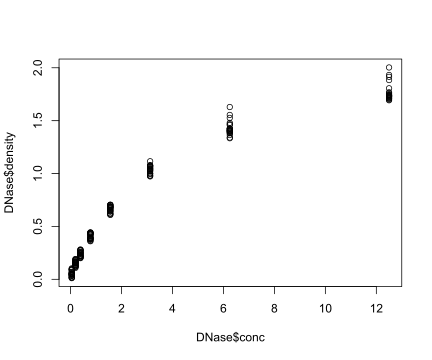
## -----------------------------------------------------------------------------
plot(DNase$conc, DNase$density,
ylab = attr(DNase, "labels")$y,
xlab = paste(attr(DNase, "labels")$x, attr(DNase, "units")$x),
pch = 3,
col = "blue")## -----------------------------------------------------------------------------
hist(DNase$density, breaks=25, main = "")boxplot(density ~ Run, data = DNase)## -----------------------------------------------------------------------------
library("Hiiragi2013")## Loading required package: affy## Loading required package: Biobase## Welcome to Bioconductor
##
## Vignettes contain introductory material; view with
## 'browseVignettes()'. To cite Bioconductor, see
## 'citation("Biobase")', and for packages 'citation("pkgname")'.## Loading required package: boot## Loading required package: clue## Loading required package: cluster## Loading required package: genefilter## Loading required package: geneplotter## Loading required package: lattice##
## Attaching package: 'lattice'## The following object is masked from 'package:boot':
##
## melanoma## The following object is masked from 'package:evd':
##
## qq## Loading required package: annotate## Loading required package: AnnotationDbi## Loading required package: XML##
## Attaching package: 'geneplotter'## The following object is masked from 'package:Gviz':
##
## imageMap## Loading required package: gplots##
## Attaching package: 'gplots'## The following object is masked from 'package:rtracklayer':
##
## space## The following object is masked from 'package:IRanges':
##
## space## The following object is masked from 'package:S4Vectors':
##
## space## The following object is masked from 'package:stats':
##
## lowess## Loading required package: gtools##
## Attaching package: 'gtools'## The following objects are masked from 'package:boot':
##
## inv.logit, logit## The following object is masked from 'package:igraph':
##
## permute## Loading required package: KEGGREST## Loading required package: MASS##
## Attaching package: 'MASS'## The following object is masked _by_ '.GlobalEnv':
##
## genotype## The following object is masked from 'package:AnnotationDbi':
##
## select## The following object is masked from 'package:genefilter':
##
## area## Loading required package: mouse4302.db## Loading required package: org.Mm.eg.db## ## ## Loading required package: RColorBrewer## Loading required package: xtabledata("x")
dim(Biobase::exprs(x))## [1] 45101 101## -----------------------------------------------------------------------------
head(pData(x), n = 2)## File.name Embryonic.day Total.number.of.cells lineage genotype
## 1 E3.25 1_C32_IN E3.25 32 WT
## 2 E3.25 2_C32_IN E3.25 32 WT
## ScanDate sampleGroup sampleColour
## 1 E3.25 2011-03-16 E3.25 #CAB2D6
## 2 E3.25 2011-03-16 E3.25 #CAB2D6## -----------------------------------------------------------------------------
library("dplyr")##
## Attaching package: 'dplyr'## The following object is masked from 'package:MASS':
##
## select## The following object is masked from 'package:AnnotationDbi':
##
## select## The following object is masked from 'package:Biobase':
##
## combine## The following objects are masked from 'package:igraph':
##
## as_data_frame, groups, union## The following object is masked from 'package:HardyWeinberg':
##
## recode## The following objects are masked from 'package:Biostrings':
##
## collapse, intersect, setdiff, setequal, union## The following object is masked from 'package:XVector':
##
## slice## The following objects are masked from 'package:GenomicRanges':
##
## intersect, setdiff, union## The following object is masked from 'package:GenomeInfoDb':
##
## intersect## The following objects are masked from 'package:IRanges':
##
## collapse, desc, intersect, setdiff, slice, union## The following objects are masked from 'package:S4Vectors':
##
## first, intersect, rename, setdiff, setequal, union## The following objects are masked from 'package:BiocGenerics':
##
## combine, intersect, setdiff, union## The following objects are masked from 'package:stats':
##
## filter, lag## The following objects are masked from 'package:base':
##
## intersect, setdiff, setequal, uniongroups = group_by(pData(x), sampleGroup) %>%
summarise(n = n(), color = unique(sampleColour))
groups## # A tibble: 8 × 3
## sampleGroup n color
## <chr> <int> <chr>
## 1 E3.25 36 #CAB2D6
## 2 E3.25 (FGF4-KO) 17 #FDBF6F
## 3 E3.5 (EPI) 11 #A6CEE3
## 4 E3.5 (FGF4-KO) 8 #FF7F00
## 5 E3.5 (PE) 11 #B2DF8A
## 6 E4.5 (EPI) 4 #1F78B4
## 7 E4.5 (FGF4-KO) 10 #E31A1C
## 8 E4.5 (PE) 4 #33A02C## -----------------------------------------------------------------------------
## f(x) %>% g(y) %>% h
## h(g(f(x), y))
## -----------------------------------------------------------------------------
library("ggplot2")
ggplot(DNase, aes(x = conc, y = density)) + geom_point()## -----------------------------------------------------------------------------
ggplot(groups, aes(x = sampleGroup, y = n)) +
geom_bar(stat = "identity")## -----------------------------------------------------------------------------
## check an assertion made in the text above
stopifnot(formals(ggplot2::geom_bar)$stat=="count")## -----------------------------------------------------------------------------
groupColor = setNames(groups$color, groups$sampleGroup)
## -----------------------------------------------------------------------------
ggplot(groups, aes(x = sampleGroup, y = n, fill = sampleGroup)) +
geom_bar(stat = "identity") +
scale_fill_manual(values = groupColor, name = "Groups") +
theme(axis.text.x = element_text(angle = 90, hjust = 1))## -----------------------------------------------------------------------------
gg = ggplot(DNase, aes(x = conc, y = density)) + geom_point()
## -----------------------------------------------------------------------------
## gg
print(gg)## -----------------------------------------------------------------------------
ggplot2::ggsave("DNAse-histogram-demo.pdf", plot = gg)## Saving 6 x 5 in image## -----------------------------------------------------------------------------
file.remove("DNAse-histogram-demo.pdf")## [1] TRUE## -----------------------------------------------------------------------------
library("mouse4302.db")## -----------------------------------------------------------------------------
## # I used this code to find the below two probes
idx = order(rowVars(Biobase::exprs(x)), decreasing=TRUE)[seq_len(2000)]
cc = cor(t(Biobase::exprs(x)[idx,]))
cco = order(cc)[seq(1, 1001, by=2) ]
jj2 = rownames(Biobase::exprs(x))[ idx[ (cco-1) %/% length(idx) + 1 ] ]
jj1 = rownames(Biobase::exprs(x))[ idx[ (cco-1) %% length(idx) + 1 ] ]
dftx = as.data.frame(t(Biobase::exprs(x)))
#par(ask=TRUE)
for(i in seq(along = cco)) {
df = AnnotationDbi::select(mouse4302.db,
keys = c(jj1[i], jj2[i]), keytype = "PROBEID",
columns = c("SYMBOL", "GENENAME"))
print(ggplot(dftx, aes( x = get(jj1[i]), y = get(jj2[i]))) +
geom_point(shape = 1) +
xlab(paste(jj1[i], df$SYMBOL[1])) +
ylab(paste(jj2[i], df$SYMBOL[2])) +
ggtitle(round(cc[jj1[i], jj2[i]], 3)) + geom_smooth(method = "loess"))
}## 'select()' returned 1:1 mapping between keys and columns## `geom_smooth()` using formula = 'y ~ x'
## 'select()' returned 1:1 mapping between keys and columns## `geom_smooth()` using formula = 'y ~ x'
## 'select()' returned 1:1 mapping between keys and columns## `geom_smooth()` using formula = 'y ~ x'
## 'select()' returned 1:1 mapping between keys and columns## `geom_smooth()` using formula = 'y ~ x'
## 'select()' returned 1:1 mapping between keys and columns## `geom_smooth()` using formula = 'y ~ x'
## 'select()' returned 1:1 mapping between keys and columns## `geom_smooth()` using formula = 'y ~ x'
## 'select()' returned 1:1 mapping between keys and columns## `geom_smooth()` using formula = 'y ~ x'
## 'select()' returned 1:1 mapping between keys and columns## `geom_smooth()` using formula = 'y ~ x'
## 'select()' returned 1:1 mapping between keys and columns## `geom_smooth()` using formula = 'y ~ x'
## 'select()' returned 1:1 mapping between keys and columns## `geom_smooth()` using formula = 'y ~ x'
## 'select()' returned 1:1 mapping between keys and columns## `geom_smooth()` using formula = 'y ~ x'
## 'select()' returned 1:1 mapping between keys and columns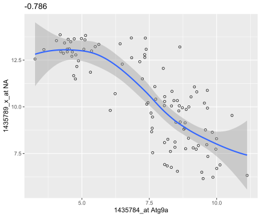
## `geom_smooth()` using formula = 'y ~ x'
## 'select()' returned 1:1 mapping between keys and columns## `geom_smooth()` using formula = 'y ~ x'
## 'select()' returned 1:1 mapping between keys and columns## `geom_smooth()` using formula = 'y ~ x'
## 'select()' returned 1:1 mapping between keys and columns## `geom_smooth()` using formula = 'y ~ x'
## 'select()' returned 1:1 mapping between keys and columns## `geom_smooth()` using formula = 'y ~ x'
## 'select()' returned 1:1 mapping between keys and columns## `geom_smooth()` using formula = 'y ~ x'
## 'select()' returned 1:1 mapping between keys and columns## `geom_smooth()` using formula = 'y ~ x'
## 'select()' returned 1:1 mapping between keys and columns## `geom_smooth()` using formula = 'y ~ x'
## 'select()' returned 1:1 mapping between keys and columns## `geom_smooth()` using formula = 'y ~ x'
## 'select()' returned 1:1 mapping between keys and columns
## `geom_smooth()` using formula = 'y ~ x'
## 'select()' returned 1:1 mapping between keys and columns## `geom_smooth()` using formula = 'y ~ x'
## 'select()' returned 1:1 mapping between keys and columns## `geom_smooth()` using formula = 'y ~ x'
## 'select()' returned 1:1 mapping between keys and columns## `geom_smooth()` using formula = 'y ~ x'
## 'select()' returned 1:1 mapping between keys and columns## `geom_smooth()` using formula = 'y ~ x'
## 'select()' returned 1:1 mapping between keys and columns
## `geom_smooth()` using formula = 'y ~ x'
## 'select()' returned 1:1 mapping between keys and columns## `geom_smooth()` using formula = 'y ~ x'
## 'select()' returned 1:1 mapping between keys and columns## `geom_smooth()` using formula = 'y ~ x'
## 'select()' returned 1:1 mapping between keys and columns## `geom_smooth()` using formula = 'y ~ x'
## 'select()' returned 1:1 mapping between keys and columns## `geom_smooth()` using formula = 'y ~ x'
## 'select()' returned 1:1 mapping between keys and columns## `geom_smooth()` using formula = 'y ~ x'
## 'select()' returned 1:1 mapping between keys and columns## `geom_smooth()` using formula = 'y ~ x'
## 'select()' returned 1:1 mapping between keys and columns## `geom_smooth()` using formula = 'y ~ x'
## 'select()' returned 1:1 mapping between keys and columns## `geom_smooth()` using formula = 'y ~ x'
## 'select()' returned 1:1 mapping between keys and columns## `geom_smooth()` using formula = 'y ~ x'
## 'select()' returned 1:1 mapping between keys and columns## `geom_smooth()` using formula = 'y ~ x'
## 'select()' returned 1:1 mapping between keys and columns## `geom_smooth()` using formula = 'y ~ x'
## 'select()' returned 1:1 mapping between keys and columns## `geom_smooth()` using formula = 'y ~ x'
## 'select()' returned 1:1 mapping between keys and columns## `geom_smooth()` using formula = 'y ~ x'
## 'select()' returned 1:1 mapping between keys and columns## `geom_smooth()` using formula = 'y ~ x'
## 'select()' returned 1:1 mapping between keys and columns## `geom_smooth()` using formula = 'y ~ x'
## 'select()' returned 1:many mapping between keys and columns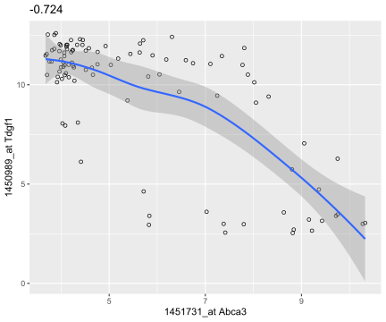
## `geom_smooth()` using formula = 'y ~ x'
## 'select()' returned 1:1 mapping between keys and columns## `geom_smooth()` using formula = 'y ~ x'
## 'select()' returned 1:1 mapping between keys and columns## `geom_smooth()` using formula = 'y ~ x'
## 'select()' returned 1:1 mapping between keys and columns## `geom_smooth()` using formula = 'y ~ x'
## 'select()' returned 1:1 mapping between keys and columns## `geom_smooth()` using formula = 'y ~ x'
## 'select()' returned 1:1 mapping between keys and columns## `geom_smooth()` using formula = 'y ~ x'
## 'select()' returned 1:1 mapping between keys and columns## `geom_smooth()` using formula = 'y ~ x'
## 'select()' returned 1:1 mapping between keys and columns## `geom_smooth()` using formula = 'y ~ x'
## 'select()' returned 1:1 mapping between keys and columns## `geom_smooth()` using formula = 'y ~ x'
## 'select()' returned 1:1 mapping between keys and columns## `geom_smooth()` using formula = 'y ~ x'
## 'select()' returned 1:1 mapping between keys and columns## `geom_smooth()` using formula = 'y ~ x'
## 'select()' returned 1:1 mapping between keys and columns## `geom_smooth()` using formula = 'y ~ x'
## 'select()' returned 1:1 mapping between keys and columns## `geom_smooth()` using formula = 'y ~ x'
## 'select()' returned 1:1 mapping between keys and columns## `geom_smooth()` using formula = 'y ~ x'
## 'select()' returned 1:1 mapping between keys and columns## `geom_smooth()` using formula = 'y ~ x'
## 'select()' returned 1:1 mapping between keys and columns## `geom_smooth()` using formula = 'y ~ x'
## 'select()' returned 1:1 mapping between keys and columns## `geom_smooth()` using formula = 'y ~ x'
## 'select()' returned 1:many mapping between keys and columns## `geom_smooth()` using formula = 'y ~ x'
## 'select()' returned 1:1 mapping between keys and columns## `geom_smooth()` using formula = 'y ~ x'
## 'select()' returned 1:many mapping between keys and columns## `geom_smooth()` using formula = 'y ~ x'
## 'select()' returned 1:1 mapping between keys and columns## `geom_smooth()` using formula = 'y ~ x'
## 'select()' returned 1:1 mapping between keys and columns
## `geom_smooth()` using formula = 'y ~ x'
## 'select()' returned 1:1 mapping between keys and columns## `geom_smooth()` using formula = 'y ~ x'
## 'select()' returned 1:1 mapping between keys and columns## `geom_smooth()` using formula = 'y ~ x'
## 'select()' returned 1:1 mapping between keys and columns## `geom_smooth()` using formula = 'y ~ x'
## 'select()' returned 1:1 mapping between keys and columns## `geom_smooth()` using formula = 'y ~ x'
## 'select()' returned 1:1 mapping between keys and columns## `geom_smooth()` using formula = 'y ~ x'
## 'select()' returned 1:1 mapping between keys and columns## `geom_smooth()` using formula = 'y ~ x'
## 'select()' returned 1:1 mapping between keys and columns## `geom_smooth()` using formula = 'y ~ x'
## 'select()' returned 1:1 mapping between keys and columns## `geom_smooth()` using formula = 'y ~ x'
## 'select()' returned 1:many mapping between keys and columns## `geom_smooth()` using formula = 'y ~ x'
## 'select()' returned 1:1 mapping between keys and columns## `geom_smooth()` using formula = 'y ~ x'
## 'select()' returned 1:1 mapping between keys and columns## `geom_smooth()` using formula = 'y ~ x'
## 'select()' returned 1:many mapping between keys and columns## `geom_smooth()` using formula = 'y ~ x'
## 'select()' returned 1:many mapping between keys and columns## `geom_smooth()` using formula = 'y ~ x'
## 'select()' returned 1:1 mapping between keys and columns## `geom_smooth()` using formula = 'y ~ x'
## 'select()' returned 1:1 mapping between keys and columns## `geom_smooth()` using formula = 'y ~ x'
## 'select()' returned 1:many mapping between keys and columns## `geom_smooth()` using formula = 'y ~ x'
## 'select()' returned 1:1 mapping between keys and columns## `geom_smooth()` using formula = 'y ~ x'
## 'select()' returned 1:1 mapping between keys and columns## `geom_smooth()` using formula = 'y ~ x'
## 'select()' returned 1:1 mapping between keys and columns## `geom_smooth()` using formula = 'y ~ x'
## 'select()' returned 1:1 mapping between keys and columns## `geom_smooth()` using formula = 'y ~ x'
## 'select()' returned 1:1 mapping between keys and columns## `geom_smooth()` using formula = 'y ~ x'
## 'select()' returned 1:1 mapping between keys and columns## `geom_smooth()` using formula = 'y ~ x'
## 'select()' returned 1:many mapping between keys and columns## `geom_smooth()` using formula = 'y ~ x'
## 'select()' returned 1:1 mapping between keys and columns## `geom_smooth()` using formula = 'y ~ x'
## 'select()' returned 1:1 mapping between keys and columns## `geom_smooth()` using formula = 'y ~ x'
## 'select()' returned 1:1 mapping between keys and columns
## `geom_smooth()` using formula = 'y ~ x'
## 'select()' returned 1:1 mapping between keys and columns## `geom_smooth()` using formula = 'y ~ x'
## 'select()' returned 1:1 mapping between keys and columns## `geom_smooth()` using formula = 'y ~ x'
## 'select()' returned 1:1 mapping between keys and columns## `geom_smooth()` using formula = 'y ~ x'
## 'select()' returned 1:1 mapping between keys and columns
## `geom_smooth()` using formula = 'y ~ x'
## 'select()' returned 1:1 mapping between keys and columns## `geom_smooth()` using formula = 'y ~ x'
## 'select()' returned 1:1 mapping between keys and columns## `geom_smooth()` using formula = 'y ~ x'
## 'select()' returned 1:1 mapping between keys and columns## `geom_smooth()` using formula = 'y ~ x'
## 'select()' returned 1:1 mapping between keys and columns## `geom_smooth()` using formula = 'y ~ x'
## 'select()' returned 1:1 mapping between keys and columns
## `geom_smooth()` using formula = 'y ~ x'
## 'select()' returned 1:1 mapping between keys and columns## `geom_smooth()` using formula = 'y ~ x'
## 'select()' returned 1:1 mapping between keys and columns## `geom_smooth()` using formula = 'y ~ x'
## 'select()' returned 1:1 mapping between keys and columns## `geom_smooth()` using formula = 'y ~ x'
## 'select()' returned 1:1 mapping between keys and columns## `geom_smooth()` using formula = 'y ~ x'
## 'select()' returned 1:1 mapping between keys and columns## `geom_smooth()` using formula = 'y ~ x'
## 'select()' returned 1:1 mapping between keys and columns## `geom_smooth()` using formula = 'y ~ x'
## 'select()' returned 1:1 mapping between keys and columns## `geom_smooth()` using formula = 'y ~ x'
## 'select()' returned 1:1 mapping between keys and columns## `geom_smooth()` using formula = 'y ~ x'
## 'select()' returned 1:1 mapping between keys and columns
## `geom_smooth()` using formula = 'y ~ x'
## 'select()' returned 1:1 mapping between keys and columns## `geom_smooth()` using formula = 'y ~ x'
## 'select()' returned 1:1 mapping between keys and columns## `geom_smooth()` using formula = 'y ~ x'
## 'select()' returned 1:1 mapping between keys and columns
## `geom_smooth()` using formula = 'y ~ x'
## 'select()' returned 1:1 mapping between keys and columns## `geom_smooth()` using formula = 'y ~ x'
## 'select()' returned 1:1 mapping between keys and columns## `geom_smooth()` using formula = 'y ~ x'
## 'select()' returned 1:1 mapping between keys and columns## `geom_smooth()` using formula = 'y ~ x'
## 'select()' returned 1:1 mapping between keys and columns## `geom_smooth()` using formula = 'y ~ x'
## 'select()' returned 1:1 mapping between keys and columns## `geom_smooth()` using formula = 'y ~ x'
## 'select()' returned 1:1 mapping between keys and columns## `geom_smooth()` using formula = 'y ~ x'
## 'select()' returned 1:1 mapping between keys and columns## `geom_smooth()` using formula = 'y ~ x'
## 'select()' returned 1:1 mapping between keys and columns## `geom_smooth()` using formula = 'y ~ x'
## 'select()' returned 1:1 mapping between keys and columns## `geom_smooth()` using formula = 'y ~ x'
## 'select()' returned 1:1 mapping between keys and columns## `geom_smooth()` using formula = 'y ~ x'
## 'select()' returned 1:1 mapping between keys and columns## `geom_smooth()` using formula = 'y ~ x'
## 'select()' returned 1:1 mapping between keys and columns## `geom_smooth()` using formula = 'y ~ x'
## 'select()' returned 1:1 mapping between keys and columns## `geom_smooth()` using formula = 'y ~ x'
## 'select()' returned 1:1 mapping between keys and columns## `geom_smooth()` using formula = 'y ~ x'
## 'select()' returned 1:1 mapping between keys and columns## `geom_smooth()` using formula = 'y ~ x'
## 'select()' returned 1:1 mapping between keys and columns## `geom_smooth()` using formula = 'y ~ x'
## 'select()' returned 1:1 mapping between keys and columns## `geom_smooth()` using formula = 'y ~ x'
## 'select()' returned 1:1 mapping between keys and columns## `geom_smooth()` using formula = 'y ~ x'
## 'select()' returned 1:many mapping between keys and columns## `geom_smooth()` using formula = 'y ~ x'
## 'select()' returned 1:1 mapping between keys and columns## `geom_smooth()` using formula = 'y ~ x'
## 'select()' returned 1:1 mapping between keys and columns## `geom_smooth()` using formula = 'y ~ x'
## 'select()' returned 1:1 mapping between keys and columns## `geom_smooth()` using formula = 'y ~ x'
## 'select()' returned 1:1 mapping between keys and columns## `geom_smooth()` using formula = 'y ~ x'
## 'select()' returned 1:1 mapping between keys and columns## `geom_smooth()` using formula = 'y ~ x'
## 'select()' returned 1:1 mapping between keys and columns## `geom_smooth()` using formula = 'y ~ x'
## 'select()' returned 1:1 mapping between keys and columns## `geom_smooth()` using formula = 'y ~ x'
## 'select()' returned 1:1 mapping between keys and columns## `geom_smooth()` using formula = 'y ~ x'
## 'select()' returned 1:1 mapping between keys and columns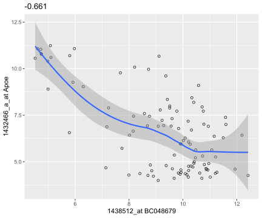
## `geom_smooth()` using formula = 'y ~ x'
## 'select()' returned 1:many mapping between keys and columns
## `geom_smooth()` using formula = 'y ~ x'
## 'select()' returned 1:1 mapping between keys and columns## `geom_smooth()` using formula = 'y ~ x'
## 'select()' returned 1:1 mapping between keys and columns## `geom_smooth()` using formula = 'y ~ x'
## 'select()' returned 1:many mapping between keys and columns## `geom_smooth()` using formula = 'y ~ x'
## 'select()' returned 1:1 mapping between keys and columns## `geom_smooth()` using formula = 'y ~ x'
## 'select()' returned 1:many mapping between keys and columns## `geom_smooth()` using formula = 'y ~ x'
## 'select()' returned 1:1 mapping between keys and columns## `geom_smooth()` using formula = 'y ~ x'
## 'select()' returned 1:1 mapping between keys and columns## `geom_smooth()` using formula = 'y ~ x'
## 'select()' returned 1:1 mapping between keys and columns
## `geom_smooth()` using formula = 'y ~ x'
## 'select()' returned 1:many mapping between keys and columns## `geom_smooth()` using formula = 'y ~ x'
## 'select()' returned 1:1 mapping between keys and columns
## `geom_smooth()` using formula = 'y ~ x'
## 'select()' returned 1:1 mapping between keys and columns## `geom_smooth()` using formula = 'y ~ x'
## 'select()' returned 1:1 mapping between keys and columns## `geom_smooth()` using formula = 'y ~ x'
## 'select()' returned 1:1 mapping between keys and columns## `geom_smooth()` using formula = 'y ~ x'
## 'select()' returned 1:1 mapping between keys and columns## `geom_smooth()` using formula = 'y ~ x'
## 'select()' returned 1:1 mapping between keys and columns## `geom_smooth()` using formula = 'y ~ x'
## 'select()' returned 1:1 mapping between keys and columns## `geom_smooth()` using formula = 'y ~ x'
## 'select()' returned 1:1 mapping between keys and columns## `geom_smooth()` using formula = 'y ~ x'
## 'select()' returned 1:1 mapping between keys and columns## `geom_smooth()` using formula = 'y ~ x'
## 'select()' returned 1:1 mapping between keys and columns## `geom_smooth()` using formula = 'y ~ x'
## 'select()' returned 1:1 mapping between keys and columns
## `geom_smooth()` using formula = 'y ~ x'
## 'select()' returned 1:1 mapping between keys and columns## `geom_smooth()` using formula = 'y ~ x'
## 'select()' returned 1:1 mapping between keys and columns## `geom_smooth()` using formula = 'y ~ x'
## 'select()' returned 1:1 mapping between keys and columns## `geom_smooth()` using formula = 'y ~ x'
## 'select()' returned 1:1 mapping between keys and columns## `geom_smooth()` using formula = 'y ~ x'
## 'select()' returned 1:many mapping between keys and columns## `geom_smooth()` using formula = 'y ~ x'
## 'select()' returned 1:1 mapping between keys and columns## `geom_smooth()` using formula = 'y ~ x'
## 'select()' returned 1:1 mapping between keys and columns## `geom_smooth()` using formula = 'y ~ x'
## 'select()' returned 1:many mapping between keys and columns## `geom_smooth()` using formula = 'y ~ x'
## 'select()' returned 1:1 mapping between keys and columns## `geom_smooth()` using formula = 'y ~ x'
## 'select()' returned 1:1 mapping between keys and columns## `geom_smooth()` using formula = 'y ~ x'
## 'select()' returned 1:1 mapping between keys and columns## `geom_smooth()` using formula = 'y ~ x'
## 'select()' returned 1:1 mapping between keys and columns## `geom_smooth()` using formula = 'y ~ x'
## 'select()' returned 1:1 mapping between keys and columns## `geom_smooth()` using formula = 'y ~ x'
## 'select()' returned 1:1 mapping between keys and columns## `geom_smooth()` using formula = 'y ~ x'
## 'select()' returned 1:1 mapping between keys and columns## `geom_smooth()` using formula = 'y ~ x'
## 'select()' returned 1:1 mapping between keys and columns## `geom_smooth()` using formula = 'y ~ x'
## 'select()' returned 1:1 mapping between keys and columns## `geom_smooth()` using formula = 'y ~ x'
## 'select()' returned 1:1 mapping between keys and columns## `geom_smooth()` using formula = 'y ~ x'
## 'select()' returned 1:1 mapping between keys and columns## `geom_smooth()` using formula = 'y ~ x'
## 'select()' returned 1:1 mapping between keys and columns## `geom_smooth()` using formula = 'y ~ x'
## 'select()' returned 1:many mapping between keys and columns## `geom_smooth()` using formula = 'y ~ x'
## 'select()' returned 1:many mapping between keys and columns## `geom_smooth()` using formula = 'y ~ x'
## 'select()' returned 1:1 mapping between keys and columns## `geom_smooth()` using formula = 'y ~ x'
## 'select()' returned 1:1 mapping between keys and columns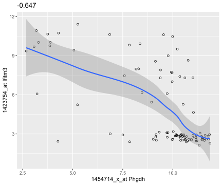
## `geom_smooth()` using formula = 'y ~ x'
## 'select()' returned 1:1 mapping between keys and columns## `geom_smooth()` using formula = 'y ~ x'
## 'select()' returned 1:1 mapping between keys and columns## `geom_smooth()` using formula = 'y ~ x'
## 'select()' returned 1:1 mapping between keys and columns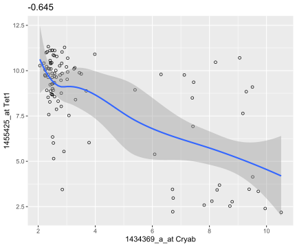
## `geom_smooth()` using formula = 'y ~ x'
## 'select()' returned 1:1 mapping between keys and columns## `geom_smooth()` using formula = 'y ~ x'
## 'select()' returned 1:1 mapping between keys and columns## `geom_smooth()` using formula = 'y ~ x'
## 'select()' returned 1:many mapping between keys and columns## `geom_smooth()` using formula = 'y ~ x'
## 'select()' returned 1:1 mapping between keys and columns## `geom_smooth()` using formula = 'y ~ x'
## 'select()' returned 1:1 mapping between keys and columns## `geom_smooth()` using formula = 'y ~ x'
## 'select()' returned 1:many mapping between keys and columns## `geom_smooth()` using formula = 'y ~ x'
## 'select()' returned 1:many mapping between keys and columns## `geom_smooth()` using formula = 'y ~ x'
## 'select()' returned 1:1 mapping between keys and columns## `geom_smooth()` using formula = 'y ~ x'
## 'select()' returned 1:1 mapping between keys and columns## `geom_smooth()` using formula = 'y ~ x'
## 'select()' returned 1:1 mapping between keys and columns## `geom_smooth()` using formula = 'y ~ x'
## 'select()' returned 1:1 mapping between keys and columns## `geom_smooth()` using formula = 'y ~ x'
## 'select()' returned 1:1 mapping between keys and columns
## `geom_smooth()` using formula = 'y ~ x'
## 'select()' returned 1:1 mapping between keys and columns## `geom_smooth()` using formula = 'y ~ x'
## 'select()' returned 1:1 mapping between keys and columns## `geom_smooth()` using formula = 'y ~ x'
## 'select()' returned 1:1 mapping between keys and columns## `geom_smooth()` using formula = 'y ~ x'
## 'select()' returned 1:many mapping between keys and columns## `geom_smooth()` using formula = 'y ~ x'
## 'select()' returned 1:1 mapping between keys and columns## `geom_smooth()` using formula = 'y ~ x'
## 'select()' returned 1:1 mapping between keys and columns## `geom_smooth()` using formula = 'y ~ x'
## 'select()' returned 1:many mapping between keys and columns## `geom_smooth()` using formula = 'y ~ x'
## 'select()' returned 1:1 mapping between keys and columns## `geom_smooth()` using formula = 'y ~ x'
## 'select()' returned 1:1 mapping between keys and columns## `geom_smooth()` using formula = 'y ~ x'
## 'select()' returned 1:many mapping between keys and columns
## `geom_smooth()` using formula = 'y ~ x'
## 'select()' returned 1:1 mapping between keys and columns## `geom_smooth()` using formula = 'y ~ x'
## 'select()' returned 1:1 mapping between keys and columns## `geom_smooth()` using formula = 'y ~ x'
## 'select()' returned 1:1 mapping between keys and columns## `geom_smooth()` using formula = 'y ~ x'
## 'select()' returned 1:1 mapping between keys and columns## `geom_smooth()` using formula = 'y ~ x'
## 'select()' returned 1:1 mapping between keys and columns## `geom_smooth()` using formula = 'y ~ x'
## 'select()' returned 1:1 mapping between keys and columns## `geom_smooth()` using formula = 'y ~ x'
## 'select()' returned 1:1 mapping between keys and columns## `geom_smooth()` using formula = 'y ~ x'
## 'select()' returned 1:1 mapping between keys and columns## `geom_smooth()` using formula = 'y ~ x'
## 'select()' returned 1:1 mapping between keys and columns## `geom_smooth()` using formula = 'y ~ x'
## 'select()' returned 1:1 mapping between keys and columns
## `geom_smooth()` using formula = 'y ~ x'
## 'select()' returned 1:1 mapping between keys and columns## `geom_smooth()` using formula = 'y ~ x'
## 'select()' returned 1:1 mapping between keys and columns## `geom_smooth()` using formula = 'y ~ x'
## 'select()' returned 1:1 mapping between keys and columns## `geom_smooth()` using formula = 'y ~ x'
## 'select()' returned 1:1 mapping between keys and columns## `geom_smooth()` using formula = 'y ~ x'
## 'select()' returned 1:1 mapping between keys and columns## `geom_smooth()` using formula = 'y ~ x'
## 'select()' returned 1:1 mapping between keys and columns## `geom_smooth()` using formula = 'y ~ x'
## 'select()' returned 1:1 mapping between keys and columns## `geom_smooth()` using formula = 'y ~ x'
## 'select()' returned 1:1 mapping between keys and columns## `geom_smooth()` using formula = 'y ~ x'
## 'select()' returned 1:1 mapping between keys and columns## `geom_smooth()` using formula = 'y ~ x'
## 'select()' returned 1:1 mapping between keys and columns## `geom_smooth()` using formula = 'y ~ x'
## 'select()' returned 1:1 mapping between keys and columns## `geom_smooth()` using formula = 'y ~ x'
## 'select()' returned 1:1 mapping between keys and columns## `geom_smooth()` using formula = 'y ~ x'
## 'select()' returned 1:1 mapping between keys and columns## `geom_smooth()` using formula = 'y ~ x'
## 'select()' returned 1:1 mapping between keys and columns## `geom_smooth()` using formula = 'y ~ x'
## 'select()' returned 1:many mapping between keys and columns## `geom_smooth()` using formula = 'y ~ x'
## 'select()' returned 1:many mapping between keys and columns## `geom_smooth()` using formula = 'y ~ x'
## 'select()' returned 1:1 mapping between keys and columns## `geom_smooth()` using formula = 'y ~ x'
## 'select()' returned 1:1 mapping between keys and columns
## `geom_smooth()` using formula = 'y ~ x'
## 'select()' returned 1:1 mapping between keys and columns## `geom_smooth()` using formula = 'y ~ x'
## 'select()' returned 1:1 mapping between keys and columns## `geom_smooth()` using formula = 'y ~ x'
## 'select()' returned 1:1 mapping between keys and columns## `geom_smooth()` using formula = 'y ~ x'
## 'select()' returned 1:1 mapping between keys and columns## `geom_smooth()` using formula = 'y ~ x'
## 'select()' returned 1:1 mapping between keys and columns## `geom_smooth()` using formula = 'y ~ x'
## 'select()' returned 1:1 mapping between keys and columns## `geom_smooth()` using formula = 'y ~ x'
## 'select()' returned 1:1 mapping between keys and columns## `geom_smooth()` using formula = 'y ~ x'
## 'select()' returned 1:1 mapping between keys and columns## `geom_smooth()` using formula = 'y ~ x'
## 'select()' returned 1:1 mapping between keys and columns## `geom_smooth()` using formula = 'y ~ x'
## 'select()' returned 1:1 mapping between keys and columns## `geom_smooth()` using formula = 'y ~ x'
## 'select()' returned 1:1 mapping between keys and columns## `geom_smooth()` using formula = 'y ~ x'
## 'select()' returned 1:1 mapping between keys and columns## `geom_smooth()` using formula = 'y ~ x'
## 'select()' returned 1:1 mapping between keys and columns## `geom_smooth()` using formula = 'y ~ x'
## 'select()' returned 1:1 mapping between keys and columns## `geom_smooth()` using formula = 'y ~ x'
## 'select()' returned 1:1 mapping between keys and columns## `geom_smooth()` using formula = 'y ~ x'
## 'select()' returned 1:1 mapping between keys and columns## `geom_smooth()` using formula = 'y ~ x'
## 'select()' returned 1:1 mapping between keys and columns## `geom_smooth()` using formula = 'y ~ x'
## 'select()' returned 1:1 mapping between keys and columns## `geom_smooth()` using formula = 'y ~ x'
## 'select()' returned 1:1 mapping between keys and columns## `geom_smooth()` using formula = 'y ~ x'
## 'select()' returned 1:1 mapping between keys and columns## `geom_smooth()` using formula = 'y ~ x'
## 'select()' returned 1:many mapping between keys and columns## `geom_smooth()` using formula = 'y ~ x'
## 'select()' returned 1:1 mapping between keys and columns## `geom_smooth()` using formula = 'y ~ x'
## 'select()' returned 1:1 mapping between keys and columns## `geom_smooth()` using formula = 'y ~ x'
## 'select()' returned 1:1 mapping between keys and columns## `geom_smooth()` using formula = 'y ~ x'
## 'select()' returned 1:1 mapping between keys and columns## `geom_smooth()` using formula = 'y ~ x'
## 'select()' returned 1:1 mapping between keys and columns## `geom_smooth()` using formula = 'y ~ x'
## 'select()' returned 1:1 mapping between keys and columns## `geom_smooth()` using formula = 'y ~ x'
## 'select()' returned 1:1 mapping between keys and columns
## `geom_smooth()` using formula = 'y ~ x'
## 'select()' returned 1:1 mapping between keys and columns## `geom_smooth()` using formula = 'y ~ x'
## 'select()' returned 1:1 mapping between keys and columns## `geom_smooth()` using formula = 'y ~ x'
## 'select()' returned 1:1 mapping between keys and columns## `geom_smooth()` using formula = 'y ~ x'
## 'select()' returned 1:many mapping between keys and columns## `geom_smooth()` using formula = 'y ~ x'
## 'select()' returned 1:1 mapping between keys and columns## `geom_smooth()` using formula = 'y ~ x'
## 'select()' returned 1:1 mapping between keys and columns## `geom_smooth()` using formula = 'y ~ x'
## 'select()' returned 1:1 mapping between keys and columns## `geom_smooth()` using formula = 'y ~ x'
## 'select()' returned 1:1 mapping between keys and columns## `geom_smooth()` using formula = 'y ~ x'
## 'select()' returned 1:1 mapping between keys and columns## `geom_smooth()` using formula = 'y ~ x'
## 'select()' returned 1:1 mapping between keys and columns## `geom_smooth()` using formula = 'y ~ x'
## 'select()' returned 1:1 mapping between keys and columns## `geom_smooth()` using formula = 'y ~ x'
## 'select()' returned 1:1 mapping between keys and columns## `geom_smooth()` using formula = 'y ~ x'
## 'select()' returned 1:1 mapping between keys and columns
## `geom_smooth()` using formula = 'y ~ x'
## 'select()' returned 1:1 mapping between keys and columns## `geom_smooth()` using formula = 'y ~ x'
## 'select()' returned 1:1 mapping between keys and columns## `geom_smooth()` using formula = 'y ~ x'
## 'select()' returned 1:1 mapping between keys and columns## `geom_smooth()` using formula = 'y ~ x'
## 'select()' returned 1:1 mapping between keys and columns## `geom_smooth()` using formula = 'y ~ x'
## 'select()' returned 1:1 mapping between keys and columns## `geom_smooth()` using formula = 'y ~ x'
## 'select()' returned 1:many mapping between keys and columns## `geom_smooth()` using formula = 'y ~ x'
## 'select()' returned 1:1 mapping between keys and columns## `geom_smooth()` using formula = 'y ~ x'
## 'select()' returned 1:1 mapping between keys and columns## `geom_smooth()` using formula = 'y ~ x'
## 'select()' returned 1:1 mapping between keys and columns
## `geom_smooth()` using formula = 'y ~ x'
## 'select()' returned 1:1 mapping between keys and columns## `geom_smooth()` using formula = 'y ~ x'
## 'select()' returned 1:1 mapping between keys and columns## `geom_smooth()` using formula = 'y ~ x'
## 'select()' returned 1:1 mapping between keys and columns
## `geom_smooth()` using formula = 'y ~ x'
## 'select()' returned 1:1 mapping between keys and columns## `geom_smooth()` using formula = 'y ~ x'
## 'select()' returned 1:1 mapping between keys and columns## `geom_smooth()` using formula = 'y ~ x'
## 'select()' returned 1:1 mapping between keys and columns## `geom_smooth()` using formula = 'y ~ x'
## 'select()' returned 1:1 mapping between keys and columns## `geom_smooth()` using formula = 'y ~ x'
## 'select()' returned 1:1 mapping between keys and columns## `geom_smooth()` using formula = 'y ~ x'
## 'select()' returned 1:1 mapping between keys and columns## `geom_smooth()` using formula = 'y ~ x'
## 'select()' returned 1:1 mapping between keys and columns## `geom_smooth()` using formula = 'y ~ x'
## 'select()' returned 1:1 mapping between keys and columns## `geom_smooth()` using formula = 'y ~ x'
## 'select()' returned 1:1 mapping between keys and columns## `geom_smooth()` using formula = 'y ~ x'
## 'select()' returned 1:many mapping between keys and columns## `geom_smooth()` using formula = 'y ~ x'
## 'select()' returned 1:1 mapping between keys and columns## `geom_smooth()` using formula = 'y ~ x'
## 'select()' returned 1:1 mapping between keys and columns## `geom_smooth()` using formula = 'y ~ x'
## 'select()' returned 1:1 mapping between keys and columns## `geom_smooth()` using formula = 'y ~ x'
## 'select()' returned 1:1 mapping between keys and columns## `geom_smooth()` using formula = 'y ~ x'
## 'select()' returned 1:1 mapping between keys and columns## `geom_smooth()` using formula = 'y ~ x'
## 'select()' returned 1:1 mapping between keys and columns## `geom_smooth()` using formula = 'y ~ x'
## 'select()' returned 1:1 mapping between keys and columns## `geom_smooth()` using formula = 'y ~ x'
## 'select()' returned 1:1 mapping between keys and columns## `geom_smooth()` using formula = 'y ~ x'
## 'select()' returned 1:1 mapping between keys and columns## `geom_smooth()` using formula = 'y ~ x'
## 'select()' returned 1:1 mapping between keys and columns
## `geom_smooth()` using formula = 'y ~ x'
## 'select()' returned 1:1 mapping between keys and columns## `geom_smooth()` using formula = 'y ~ x'
## 'select()' returned 1:1 mapping between keys and columns## `geom_smooth()` using formula = 'y ~ x'
## 'select()' returned 1:1 mapping between keys and columns## `geom_smooth()` using formula = 'y ~ x'
## 'select()' returned 1:1 mapping between keys and columns## `geom_smooth()` using formula = 'y ~ x'
## 'select()' returned 1:many mapping between keys and columns## `geom_smooth()` using formula = 'y ~ x'
## 'select()' returned 1:1 mapping between keys and columns## `geom_smooth()` using formula = 'y ~ x'
## 'select()' returned 1:1 mapping between keys and columns## `geom_smooth()` using formula = 'y ~ x'
## 'select()' returned 1:many mapping between keys and columns## `geom_smooth()` using formula = 'y ~ x'
## 'select()' returned 1:1 mapping between keys and columns## `geom_smooth()` using formula = 'y ~ x'
## 'select()' returned 1:1 mapping between keys and columns## `geom_smooth()` using formula = 'y ~ x'
## 'select()' returned 1:1 mapping between keys and columns## `geom_smooth()` using formula = 'y ~ x'
## 'select()' returned 1:1 mapping between keys and columns## `geom_smooth()` using formula = 'y ~ x'
## 'select()' returned 1:1 mapping between keys and columns## `geom_smooth()` using formula = 'y ~ x'
## 'select()' returned 1:1 mapping between keys and columns## `geom_smooth()` using formula = 'y ~ x'
## 'select()' returned 1:1 mapping between keys and columns
## `geom_smooth()` using formula = 'y ~ x'
## 'select()' returned 1:1 mapping between keys and columns## `geom_smooth()` using formula = 'y ~ x'
## 'select()' returned 1:1 mapping between keys and columns## `geom_smooth()` using formula = 'y ~ x'
## 'select()' returned 1:1 mapping between keys and columns## `geom_smooth()` using formula = 'y ~ x'
## 'select()' returned 1:1 mapping between keys and columns## `geom_smooth()` using formula = 'y ~ x'
## 'select()' returned 1:1 mapping between keys and columns## `geom_smooth()` using formula = 'y ~ x'
## 'select()' returned 1:1 mapping between keys and columns## `geom_smooth()` using formula = 'y ~ x'
## 'select()' returned 1:1 mapping between keys and columns
## `geom_smooth()` using formula = 'y ~ x'
## 'select()' returned 1:1 mapping between keys and columns## `geom_smooth()` using formula = 'y ~ x'
## 'select()' returned 1:1 mapping between keys and columns## `geom_smooth()` using formula = 'y ~ x'
## 'select()' returned 1:1 mapping between keys and columns## `geom_smooth()` using formula = 'y ~ x'
## 'select()' returned 1:1 mapping between keys and columns## `geom_smooth()` using formula = 'y ~ x'
## 'select()' returned 1:1 mapping between keys and columns## `geom_smooth()` using formula = 'y ~ x'
## 'select()' returned 1:1 mapping between keys and columns## `geom_smooth()` using formula = 'y ~ x'
## 'select()' returned 1:1 mapping between keys and columns## `geom_smooth()` using formula = 'y ~ x'
## 'select()' returned 1:1 mapping between keys and columns## `geom_smooth()` using formula = 'y ~ x'
## 'select()' returned 1:1 mapping between keys and columns## `geom_smooth()` using formula = 'y ~ x'
## 'select()' returned 1:1 mapping between keys and columns## `geom_smooth()` using formula = 'y ~ x'
## 'select()' returned 1:1 mapping between keys and columns## `geom_smooth()` using formula = 'y ~ x'
## 'select()' returned 1:1 mapping between keys and columns## `geom_smooth()` using formula = 'y ~ x'
## 'select()' returned 1:1 mapping between keys and columns## `geom_smooth()` using formula = 'y ~ x'
## 'select()' returned 1:1 mapping between keys and columns## `geom_smooth()` using formula = 'y ~ x'
## 'select()' returned 1:1 mapping between keys and columns## `geom_smooth()` using formula = 'y ~ x'
## 'select()' returned 1:many mapping between keys and columns## `geom_smooth()` using formula = 'y ~ x'
## 'select()' returned 1:1 mapping between keys and columns## `geom_smooth()` using formula = 'y ~ x'
## 'select()' returned 1:1 mapping between keys and columns## `geom_smooth()` using formula = 'y ~ x'
## 'select()' returned 1:1 mapping between keys and columns## `geom_smooth()` using formula = 'y ~ x'
## 'select()' returned 1:1 mapping between keys and columns## `geom_smooth()` using formula = 'y ~ x'
## 'select()' returned 1:1 mapping between keys and columns## `geom_smooth()` using formula = 'y ~ x'
## 'select()' returned 1:1 mapping between keys and columns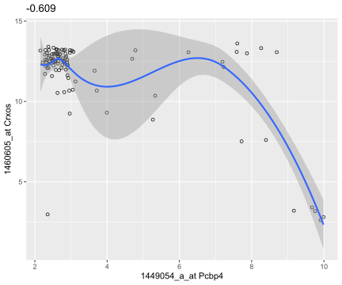
## `geom_smooth()` using formula = 'y ~ x'
## 'select()' returned 1:1 mapping between keys and columns## `geom_smooth()` using formula = 'y ~ x'
## 'select()' returned 1:1 mapping between keys and columns## `geom_smooth()` using formula = 'y ~ x'
## 'select()' returned 1:1 mapping between keys and columns## `geom_smooth()` using formula = 'y ~ x'
## 'select()' returned 1:1 mapping between keys and columns## `geom_smooth()` using formula = 'y ~ x'
## 'select()' returned 1:1 mapping between keys and columns
## `geom_smooth()` using formula = 'y ~ x'
## 'select()' returned 1:1 mapping between keys and columns## `geom_smooth()` using formula = 'y ~ x'
## 'select()' returned 1:1 mapping between keys and columns## `geom_smooth()` using formula = 'y ~ x'
## 'select()' returned 1:many mapping between keys and columns## `geom_smooth()` using formula = 'y ~ x'
## 'select()' returned 1:1 mapping between keys and columns## `geom_smooth()` using formula = 'y ~ x'
## 'select()' returned 1:1 mapping between keys and columns## `geom_smooth()` using formula = 'y ~ x'
## 'select()' returned 1:1 mapping between keys and columns## `geom_smooth()` using formula = 'y ~ x'
## 'select()' returned 1:1 mapping between keys and columns## `geom_smooth()` using formula = 'y ~ x'
## 'select()' returned 1:1 mapping between keys and columns## `geom_smooth()` using formula = 'y ~ x'
## 'select()' returned 1:1 mapping between keys and columns## `geom_smooth()` using formula = 'y ~ x'
## 'select()' returned 1:1 mapping between keys and columns## `geom_smooth()` using formula = 'y ~ x'
## 'select()' returned 1:1 mapping between keys and columns## `geom_smooth()` using formula = 'y ~ x'
## 'select()' returned 1:1 mapping between keys and columns## `geom_smooth()` using formula = 'y ~ x'
## 'select()' returned 1:1 mapping between keys and columns## `geom_smooth()` using formula = 'y ~ x'
## 'select()' returned 1:1 mapping between keys and columns## `geom_smooth()` using formula = 'y ~ x'
## 'select()' returned 1:1 mapping between keys and columns## `geom_smooth()` using formula = 'y ~ x'
## 'select()' returned 1:1 mapping between keys and columns## `geom_smooth()` using formula = 'y ~ x'
## 'select()' returned 1:1 mapping between keys and columns## `geom_smooth()` using formula = 'y ~ x'
## 'select()' returned 1:1 mapping between keys and columns## `geom_smooth()` using formula = 'y ~ x'
## 'select()' returned 1:1 mapping between keys and columns## `geom_smooth()` using formula = 'y ~ x'
## 'select()' returned 1:1 mapping between keys and columns## `geom_smooth()` using formula = 'y ~ x'
## 'select()' returned 1:1 mapping between keys and columns## `geom_smooth()` using formula = 'y ~ x'
## 'select()' returned 1:1 mapping between keys and columns## `geom_smooth()` using formula = 'y ~ x'
## 'select()' returned 1:1 mapping between keys and columns
## `geom_smooth()` using formula = 'y ~ x'
## 'select()' returned 1:1 mapping between keys and columns## `geom_smooth()` using formula = 'y ~ x'
## 'select()' returned 1:1 mapping between keys and columns## `geom_smooth()` using formula = 'y ~ x'
## 'select()' returned 1:1 mapping between keys and columns## `geom_smooth()` using formula = 'y ~ x'
## 'select()' returned 1:1 mapping between keys and columns## `geom_smooth()` using formula = 'y ~ x'
## 'select()' returned 1:1 mapping between keys and columns## `geom_smooth()` using formula = 'y ~ x'
## 'select()' returned 1:1 mapping between keys and columns## `geom_smooth()` using formula = 'y ~ x'
## 'select()' returned 1:1 mapping between keys and columns## `geom_smooth()` using formula = 'y ~ x'
## 'select()' returned 1:many mapping between keys and columns## `geom_smooth()` using formula = 'y ~ x'
## 'select()' returned 1:1 mapping between keys and columns## `geom_smooth()` using formula = 'y ~ x'
## 'select()' returned 1:1 mapping between keys and columns## `geom_smooth()` using formula = 'y ~ x'
## 'select()' returned 1:1 mapping between keys and columns## `geom_smooth()` using formula = 'y ~ x'
## 'select()' returned 1:1 mapping between keys and columns## `geom_smooth()` using formula = 'y ~ x'
## 'select()' returned 1:1 mapping between keys and columns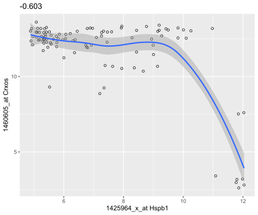
## `geom_smooth()` using formula = 'y ~ x'
## 'select()' returned 1:1 mapping between keys and columns## `geom_smooth()` using formula = 'y ~ x'
## 'select()' returned 1:1 mapping between keys and columns## `geom_smooth()` using formula = 'y ~ x'
## 'select()' returned 1:1 mapping between keys and columns## `geom_smooth()` using formula = 'y ~ x'
## 'select()' returned 1:1 mapping between keys and columns## `geom_smooth()` using formula = 'y ~ x'
## 'select()' returned 1:1 mapping between keys and columns## `geom_smooth()` using formula = 'y ~ x'
## 'select()' returned 1:1 mapping between keys and columns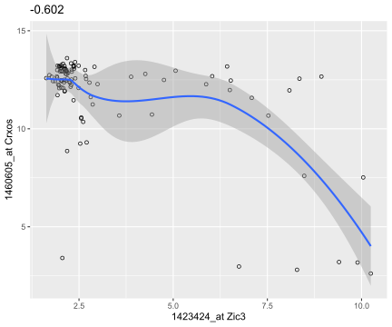
## `geom_smooth()` using formula = 'y ~ x'
## 'select()' returned 1:1 mapping between keys and columns## `geom_smooth()` using formula = 'y ~ x'
## 'select()' returned 1:1 mapping between keys and columns## `geom_smooth()` using formula = 'y ~ x'
## 'select()' returned 1:1 mapping between keys and columns## `geom_smooth()` using formula = 'y ~ x'
## 'select()' returned 1:many mapping between keys and columns## `geom_smooth()` using formula = 'y ~ x'
## 'select()' returned 1:1 mapping between keys and columns## `geom_smooth()` using formula = 'y ~ x'
## 'select()' returned 1:1 mapping between keys and columns## `geom_smooth()` using formula = 'y ~ x'
## 'select()' returned 1:1 mapping between keys and columns## `geom_smooth()` using formula = 'y ~ x'
## 'select()' returned 1:1 mapping between keys and columns## `geom_smooth()` using formula = 'y ~ x'
## 'select()' returned 1:1 mapping between keys and columns## `geom_smooth()` using formula = 'y ~ x'
## 'select()' returned 1:1 mapping between keys and columns## `geom_smooth()` using formula = 'y ~ x'
## 'select()' returned 1:1 mapping between keys and columns## `geom_smooth()` using formula = 'y ~ x'
## 'select()' returned 1:1 mapping between keys and columns## `geom_smooth()` using formula = 'y ~ x'
## 'select()' returned 1:1 mapping between keys and columns
## `geom_smooth()` using formula = 'y ~ x'
## 'select()' returned 1:1 mapping between keys and columns## `geom_smooth()` using formula = 'y ~ x'
## 'select()' returned 1:1 mapping between keys and columns
## `geom_smooth()` using formula = 'y ~ x'
## 'select()' returned 1:1 mapping between keys and columns## `geom_smooth()` using formula = 'y ~ x'
## 'select()' returned 1:1 mapping between keys and columns## `geom_smooth()` using formula = 'y ~ x'
## 'select()' returned 1:1 mapping between keys and columns## `geom_smooth()` using formula = 'y ~ x'
## 'select()' returned 1:1 mapping between keys and columns## `geom_smooth()` using formula = 'y ~ x'
## 'select()' returned 1:1 mapping between keys and columns## `geom_smooth()` using formula = 'y ~ x'
## 'select()' returned 1:1 mapping between keys and columns## `geom_smooth()` using formula = 'y ~ x'
## 'select()' returned 1:1 mapping between keys and columns## `geom_smooth()` using formula = 'y ~ x'
## 'select()' returned 1:1 mapping between keys and columns## `geom_smooth()` using formula = 'y ~ x'
## 'select()' returned 1:1 mapping between keys and columns## `geom_smooth()` using formula = 'y ~ x'
## 'select()' returned 1:1 mapping between keys and columns## `geom_smooth()` using formula = 'y ~ x'
## 'select()' returned 1:1 mapping between keys and columns## `geom_smooth()` using formula = 'y ~ x'
## 'select()' returned 1:1 mapping between keys and columns## `geom_smooth()` using formula = 'y ~ x'
## 'select()' returned 1:many mapping between keys and columns## `geom_smooth()` using formula = 'y ~ x'
## 'select()' returned 1:1 mapping between keys and columns
## `geom_smooth()` using formula = 'y ~ x'
## 'select()' returned 1:1 mapping between keys and columns## `geom_smooth()` using formula = 'y ~ x'
## 'select()' returned 1:1 mapping between keys and columns## `geom_smooth()` using formula = 'y ~ x'
## 'select()' returned 1:1 mapping between keys and columns## `geom_smooth()` using formula = 'y ~ x'
## 'select()' returned 1:1 mapping between keys and columns## `geom_smooth()` using formula = 'y ~ x'
## 'select()' returned 1:1 mapping between keys and columns## `geom_smooth()` using formula = 'y ~ x'
## 'select()' returned 1:1 mapping between keys and columns## `geom_smooth()` using formula = 'y ~ x'
## 'select()' returned 1:many mapping between keys and columns## `geom_smooth()` using formula = 'y ~ x'
## 'select()' returned 1:1 mapping between keys and columns## `geom_smooth()` using formula = 'y ~ x'
## 'select()' returned 1:1 mapping between keys and columns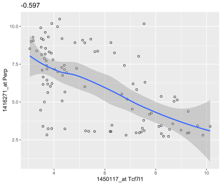
## `geom_smooth()` using formula = 'y ~ x'
## 'select()' returned 1:1 mapping between keys and columns## `geom_smooth()` using formula = 'y ~ x'
## 'select()' returned 1:1 mapping between keys and columns## `geom_smooth()` using formula = 'y ~ x'
## 'select()' returned 1:1 mapping between keys and columns## `geom_smooth()` using formula = 'y ~ x'
## 'select()' returned 1:1 mapping between keys and columns## `geom_smooth()` using formula = 'y ~ x'
## 'select()' returned 1:1 mapping between keys and columns## `geom_smooth()` using formula = 'y ~ x'
## 'select()' returned 1:1 mapping between keys and columns## `geom_smooth()` using formula = 'y ~ x'
## 'select()' returned 1:1 mapping between keys and columns## `geom_smooth()` using formula = 'y ~ x'
## 'select()' returned 1:1 mapping between keys and columns## `geom_smooth()` using formula = 'y ~ x'
## 'select()' returned 1:many mapping between keys and columns## `geom_smooth()` using formula = 'y ~ x'
## 'select()' returned 1:many mapping between keys and columns## `geom_smooth()` using formula = 'y ~ x'
## 'select()' returned 1:1 mapping between keys and columns## `geom_smooth()` using formula = 'y ~ x'
## 'select()' returned 1:1 mapping between keys and columns## `geom_smooth()` using formula = 'y ~ x'
## 'select()' returned 1:1 mapping between keys and columns## `geom_smooth()` using formula = 'y ~ x'
## 'select()' returned 1:1 mapping between keys and columns## `geom_smooth()` using formula = 'y ~ x'
## 'select()' returned 1:1 mapping between keys and columns## `geom_smooth()` using formula = 'y ~ x'
## 'select()' returned 1:1 mapping between keys and columns## `geom_smooth()` using formula = 'y ~ x'
## 'select()' returned 1:1 mapping between keys and columns## `geom_smooth()` using formula = 'y ~ x'
## 'select()' returned 1:1 mapping between keys and columns## `geom_smooth()` using formula = 'y ~ x'
## 'select()' returned 1:1 mapping between keys and columns## `geom_smooth()` using formula = 'y ~ x'
## 'select()' returned 1:1 mapping between keys and columns## `geom_smooth()` using formula = 'y ~ x'
## 'select()' returned 1:1 mapping between keys and columns## `geom_smooth()` using formula = 'y ~ x'
## 'select()' returned 1:1 mapping between keys and columns
## `geom_smooth()` using formula = 'y ~ x'
## 'select()' returned 1:1 mapping between keys and columns## `geom_smooth()` using formula = 'y ~ x'
## 'select()' returned 1:1 mapping between keys and columns## `geom_smooth()` using formula = 'y ~ x'
## 'select()' returned 1:1 mapping between keys and columns## `geom_smooth()` using formula = 'y ~ x'
## 'select()' returned 1:1 mapping between keys and columns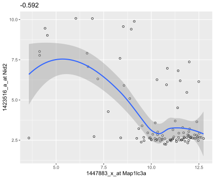
## `geom_smooth()` using formula = 'y ~ x'
## 'select()' returned 1:1 mapping between keys and columns## `geom_smooth()` using formula = 'y ~ x'
## 'select()' returned 1:1 mapping between keys and columns## `geom_smooth()` using formula = 'y ~ x'
## 'select()' returned 1:1 mapping between keys and columns## `geom_smooth()` using formula = 'y ~ x'
## 'select()' returned 1:1 mapping between keys and columns## `geom_smooth()` using formula = 'y ~ x'
## 'select()' returned 1:1 mapping between keys and columns## `geom_smooth()` using formula = 'y ~ x'
## 'select()' returned 1:1 mapping between keys and columns## `geom_smooth()` using formula = 'y ~ x'
## 'select()' returned 1:1 mapping between keys and columns## `geom_smooth()` using formula = 'y ~ x'
## 'select()' returned 1:1 mapping between keys and columns## `geom_smooth()` using formula = 'y ~ x'
## 'select()' returned 1:1 mapping between keys and columns## `geom_smooth()` using formula = 'y ~ x'
## 'select()' returned 1:1 mapping between keys and columns## `geom_smooth()` using formula = 'y ~ x'
## 'select()' returned 1:1 mapping between keys and columns## `geom_smooth()` using formula = 'y ~ x'
## 'select()' returned 1:1 mapping between keys and columns
## `geom_smooth()` using formula = 'y ~ x'
## 'select()' returned 1:1 mapping between keys and columns## `geom_smooth()` using formula = 'y ~ x'
## 'select()' returned 1:1 mapping between keys and columns## `geom_smooth()` using formula = 'y ~ x'
## 'select()' returned 1:1 mapping between keys and columns## `geom_smooth()` using formula = 'y ~ x'
## 'select()' returned 1:1 mapping between keys and columns## `geom_smooth()` using formula = 'y ~ x'
## 'select()' returned 1:1 mapping between keys and columns## `geom_smooth()` using formula = 'y ~ x'
## 'select()' returned 1:1 mapping between keys and columns## `geom_smooth()` using formula = 'y ~ x'
## 'select()' returned 1:1 mapping between keys and columns## `geom_smooth()` using formula = 'y ~ x'
## 'select()' returned 1:1 mapping between keys and columns## `geom_smooth()` using formula = 'y ~ x'
## 'select()' returned 1:1 mapping between keys and columns## `geom_smooth()` using formula = 'y ~ x'
## 'select()' returned 1:1 mapping between keys and columns## `geom_smooth()` using formula = 'y ~ x'
## 'select()' returned 1:many mapping between keys and columns## `geom_smooth()` using formula = 'y ~ x'
## 'select()' returned 1:1 mapping between keys and columns## `geom_smooth()` using formula = 'y ~ x'
## 'select()' returned 1:1 mapping between keys and columns## `geom_smooth()` using formula = 'y ~ x'
## 'select()' returned 1:1 mapping between keys and columns## `geom_smooth()` using formula = 'y ~ x'
## 'select()' returned 1:1 mapping between keys and columns## `geom_smooth()` using formula = 'y ~ x'
## 'select()' returned 1:1 mapping between keys and columns## `geom_smooth()` using formula = 'y ~ x'
## 'select()' returned 1:1 mapping between keys and columns## `geom_smooth()` using formula = 'y ~ x'
## 'select()' returned 1:1 mapping between keys and columns## `geom_smooth()` using formula = 'y ~ x'
## 'select()' returned 1:1 mapping between keys and columns## `geom_smooth()` using formula = 'y ~ x'
## 'select()' returned 1:1 mapping between keys and columns## `geom_smooth()` using formula = 'y ~ x'
## 'select()' returned 1:1 mapping between keys and columns## `geom_smooth()` using formula = 'y ~ x'
## 'select()' returned 1:1 mapping between keys and columns## `geom_smooth()` using formula = 'y ~ x'
## 'select()' returned 1:1 mapping between keys and columns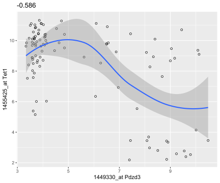
## `geom_smooth()` using formula = 'y ~ x'
## 'select()' returned 1:many mapping between keys and columns
## `geom_smooth()` using formula = 'y ~ x'
## 'select()' returned 1:1 mapping between keys and columns## `geom_smooth()` using formula = 'y ~ x'## -----------------------------------------------------------------------------
dftx = data.frame(t(Biobase::exprs(x)), pData(x))
ggplot( dftx, aes( x = X1426642_at, y = X1418765_at )) +
geom_point( shape = 1 ) +
geom_smooth( method = "loess" )## `geom_smooth()` using formula = 'y ~ x'## -----------------------------------------------------------------------------
stopifnot(is(dftx, "data.frame"))## -----------------------------------------------------------------------------
.one <- AnnotationDbi::select(mouse4302.db,
keys = "1418765_at",
keytype = "PROBEID",
columns = "SYMBOL")$SYMBOL## 'select()' returned 1:1 mapping between keys and columns.two <- AnnotationDbi::select(mouse4302.db,
keys = "1426642_at",
keytype = "PROBEID",
columns = "SYMBOL")$SYMBOL## 'select()' returned 1:1 mapping between keys and columns## -----------------------------------------------------------------------------
ggplot( dftx, aes( x = X1426642_at, y = X1418765_at )) +
geom_point( aes( color = sampleColour), shape = 19 ) +
geom_smooth( method = "loess" ) +
scale_color_discrete( guide = "none" )## `geom_smooth()` using formula = 'y ~ x'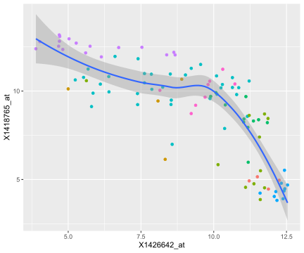
## -----------------------------------------------------------------------------
library("mouse4302.db")
## -----------------------------------------------------------------------------
AnnotationDbi::select(mouse4302.db,
keys = c("1426642_at", "1418765_at"), keytype = "PROBEID",
columns = c("SYMBOL", "GENENAME"))## 'select()' returned 1:1 mapping between keys and columns## PROBEID SYMBOL GENENAME
## 1 1426642_at Fn1 fibronectin 1
## 2 1418765_at Timd2 T cell immunoglobulin and mucin domain containing 2## -----------------------------------------------------------------------------
dfx = as.data.frame(Biobase::exprs(x))
ggplot(dfx, aes(x = `20 E3.25`)) + geom_histogram(binwidth = 0.2)## -----------------------------------------------------------------------------
pb = ggplot(groups, aes(x = sampleGroup, y = n))
## -----------------------------------------------------------------------------
class(pb)## [1] "gg" "ggplot"pb## -----------------------------------------------------------------------------
pb = pb + geom_bar(stat = "identity")
pb = pb + aes(fill = sampleGroup)
pb = pb + theme(axis.text.x = element_text(angle = 90, hjust = 1))
pb = pb + scale_fill_manual(values = groupColor, name = "Groups")
pb## -----------------------------------------------------------------------------
pb.polar = pb + coord_polar() +
theme(axis.text.x = element_text(angle = 0, hjust = 1),
axis.text.y = element_blank(),
axis.ticks = element_blank()) +
xlab("") + ylab("")
pb.polar## -----------------------------------------------------------------------------
selectedProbes = c( Fgf4 = "1420085_at", Gata4 = "1418863_at",
Gata6 = "1425463_at", Sox2 = "1416967_at")
## -----------------------------------------------------------------------------
## # How I found the selectedProbes:
## AnnotationDbi::select(mouse4302.db,
## keys = c("Fgf4", "Sox2", "Gata6", "Gata4"), keytype = "SYMBOL",
## columns = c("PROBEID"))
## -----------------------------------------------------------------------------
selectedProbes2 = AnnotationDbi::select(mouse4302.db,
keys = selectedProbes, keytype = "PROBEID", columns = c("SYMBOL"))## 'select()' returned 1:1 mapping between keys and columnsstopifnot(identical(sort(selectedProbes2$SYMBOL), sort(names(selectedProbes))),
all(selectedProbes[selectedProbes2$SYMBOL] == selectedProbes2$PROBEID))## -----------------------------------------------------------------------------
library("reshape2")
genes = melt(Biobase::exprs(x)[selectedProbes, ],
varnames = c("probe", "sample"))
## -----------------------------------------------------------------------------
genes$gene =
names(selectedProbes)[match(genes$probe, selectedProbes)]
head(genes)## probe sample value gene
## 1 1420085_at 1 E3.25 3.027715 Fgf4
## 2 1418863_at 1 E3.25 4.843137 Gata4
## 3 1425463_at 1 E3.25 5.500618 Gata6
## 4 1416967_at 1 E3.25 1.731217 Sox2
## 5 1420085_at 2 E3.25 9.293016 Fgf4
## 6 1418863_at 2 E3.25 5.530016 Gata4## -----------------------------------------------------------------------------
ggplot(genes, aes(x = gene, y = value)) +
stat_summary(fun = mean, geom = "bar")## -----------------------------------------------------------------------------
library("Hmisc")## Loading required package: survival##
## Attaching package: 'survival'## The following object is masked from 'package:boot':
##
## aml## Loading required package: Formula##
## Attaching package: 'Hmisc'## The following objects are masked from 'package:dplyr':
##
## src, summarize## The following objects are masked from 'package:xtable':
##
## label, label<-## The following object is masked from 'package:AnnotationDbi':
##
## contents## The following object is masked from 'package:Biobase':
##
## contents## The following objects are masked from 'package:Biostrings':
##
## mask, translate## The following objects are masked from 'package:base':
##
## format.pval, unitsggplot(genes, aes( x = gene, y = value, fill = gene)) +
stat_summary(fun = mean, geom = "bar") +
stat_summary(fun.data = mean_cl_normal, geom = "errorbar",
width = 0.25)## -----------------------------------------------------------------------------
p = ggplot(genes, aes( x = gene, y = value, fill = gene))
p + geom_boxplot()## -----------------------------------------------------------------------------
p + geom_dotplot(binaxis = "y", binwidth = 1/6,
stackdir = "center", stackratio = 0.75,
aes(color = gene))library("ggbeeswarm")
p + geom_beeswarm(aes(color = gene))## ------------#-----------------------------------------------------------------
ggplot(genes, aes( x = value, color = gene)) + geom_density()## -----------------------------------------------------------------------------
p + geom_violin()## -----------------------------------------------------------------------------
library("ggridges")
ggplot(genes, aes(x = value, y = gene, fill = gene)) +
geom_density_ridges()## Picking joint bandwidth of 0.729## -----------------------------------------------------------------------------
top42 = order(rowMeans(Biobase::exprs(x)), decreasing = TRUE)[1:42]
g42 = melt(Biobase::exprs(x)[rev(top42), ], varnames = c("probe", "sample"))
ggplot(g42, aes(x = value, y = probe)) ## -----------------------------------------------------------------------------
ggplot(g42, aes(x = value, y = probe)) +
geom_density_ridges() + theme(legend.position = "none",
axis.title.y = element_blank(), axis.text.y = element_blank(),
axis.ticks.y = element_blank()) + xlim(13, 15) ## Picking joint bandwidth of 0.0683## Warning: Removed 35 rows containing non-finite values (`stat_density_ridges()`).## -----------------------------------------------------------------------------
simdata = rnorm(70)
tibble(index = seq(along = simdata),
sx = sort(simdata)) %>%
ggplot(aes(x = sx, y = index)) + geom_step()## -----------------------------------------------------------------------------
ggplot(genes, aes( x = value, color = gene)) + stat_ecdf()## -----------------------------------------------------------------------------
## # I used the functon bimodality_coefficient from the modes package to identify the most
## # bimodal looking array, number 64
## j0 = which.max(vapply(seq_len(ncol(x)), function(j){
## modes :: bimodality_coefficient(Biobase::exprs(x)[, j])
## }, numeric(1)))
## -----------------------------------------------------------------------------
ggplot(dfx, aes(x = `64 E4.5 (EPI)`)) + geom_histogram(bins = 100)ggplot(dfx, aes(x = 2 ^ `64 E4.5 (EPI)`)) +
geom_histogram(binwidth = 20) + xlim(0, 1500)## Warning: Removed 1457 rows containing non-finite values (`stat_bin()`).## Warning: Removed 2 rows containing missing values (`geom_bar()`).## -----------------------------------------------------------------------------
scp = ggplot(dfx, aes(x = `59 E4.5 (PE)` ,
y = `92 E4.5 (FGF4-KO)`))
scp + geom_point()
## -----------------------------------------------------------------------------
scp + geom_point(alpha = 0.1)
## -----------------------------------------------------------------------------
scp + geom_density2d()## -----------------------------------------------------------------------------
scp + geom_density2d(h = 0.5, bins = 60)library("RColorBrewer")
colorscale = scale_fill_gradientn(
colors = rev(brewer.pal(9, "YlGnBu")),
values = c(0, exp(seq(-5, 0, length.out = 100))))
scp + stat_density2d(h = 0.5, bins = 60,
aes( fill = after_stat(level)), geom = "polygon") +
colorscale + coord_fixed()## -----------------------------------------------------------------------------
scp + geom_hex() + coord_fixed()scp + geom_hex(binwidth = c(0.2, 0.2)) + colorscale +
coord_fixed()## -----------------------------------------------------------------------------
library("ggthemes")
sunsp = tibble(year = time(sunspot.year),
number = as.numeric(sunspot.year))
sp = ggplot(sunsp, aes(x = year, y = number)) + geom_line()
sp## Don't know how to automatically pick scale for object of type <ts>. Defaulting
## to continuous.ratio = with(sunsp, bank_slopes(year, number))
sp + coord_fixed(ratio = ratio)## Don't know how to automatically pick scale for object of type <ts>. Defaulting
## to continuous.## -----------------------------------------------------------------------------
library("magrittr")
dftx$lineage %<>% sub("^$", "no", .)
dftx$lineage %<>% factor(levels = c("no", "EPI", "PE", "FGF4-KO"))
ggplot(dftx, aes(x = X1426642_at, y = X1418765_at)) +
geom_point() + facet_grid( . ~ lineage )## -----------------------------------------------------------------------------
ggplot(dftx,
aes(x = X1426642_at, y = X1418765_at)) + geom_point() +
facet_grid( Embryonic.day ~ lineage )## -----------------------------------------------------------------------------
ggplot(mutate(dftx, Tdgf1 = cut(X1450989_at, breaks = 4)),
aes(x = X1426642_at, y = X1418765_at)) + geom_point() +
facet_wrap( ~ Tdgf1, ncol = 2 )## -----------------------------------------------------------------------------
library("plotly")##
## Attaching package: 'plotly'## The following object is masked from 'package:Hmisc':
##
## subplot## The following object is masked from 'package:MASS':
##
## select## The following object is masked from 'package:AnnotationDbi':
##
## select## The following object is masked from 'package:ggplot2':
##
## last_plot## The following object is masked from 'package:igraph':
##
## groups## The following object is masked from 'package:BSgenome':
##
## export## The following object is masked from 'package:rtracklayer':
##
## export## The following object is masked from 'package:XVector':
##
## slice## The following object is masked from 'package:IRanges':
##
## slice## The following object is masked from 'package:S4Vectors':
##
## rename## The following object is masked from 'package:stats':
##
## filter## The following object is masked from 'package:graphics':
##
## layoutplot_ly(economics, x = ~ date, y = ~ unemploy / pop)## No trace type specified:
## Based on info supplied, a 'scatter' trace seems appropriate.
## Read more about this trace type -> https://plotly.com/r/reference/#scatter## No scatter mode specifed:
## Setting the mode to markers
## Read more about this attribute -> https://plotly.com/r/reference/#scatter-mode## -----------------------------------------------------------------------------
data("volcano")
volcanoData = list(
x = 10 * seq_len(nrow(volcano)),
y = 10 * seq_len(ncol(volcano)),
z = volcano,
col = terrain.colors(500)[cut(volcano, breaks = 500)]
)
library("rgl")
with(volcanoData, persp3d(x, y, z, color = col))## -----------------------------------------------------------------------------
.volcanocut = cut(volcano, breaks = 500)
stopifnot(!any(is.na(.volcanocut)), all(as.integer(.volcanocut) %in% 1:500))## -----------------------------------------------------------------------------
par(mai = rep(0, 4)) # A numerical vector of the form c(bottom, left, top, right) which gives the margin size specified in inches.
pie(rep(1, 8), col=1:8)
tibble(u = factor(1:8), v = 1)## # A tibble: 8 × 2
## u v
## <fct> <dbl>
## 1 1 1
## 2 2 1
## 3 3 1
## 4 4 1
## 5 5 1
## 6 6 1
## 7 7 1
## 8 8 1## -----------------------------------------------------------------------------
ggplot(tibble(u = factor(1:8), v = 1),
aes(x = "", y = v, fill = u)) +
geom_bar(stat = "identity", width = 1) +
coord_polar("y", start = 0) + theme_void()## -----------------------------------------------------------------------------
par(mai = c(0, 0.8, 0, 0))
display.brewer.all()## -----------------------------------------------------------------------------
head(brewer.pal.info)## maxcolors category colorblind
## BrBG 11 div TRUE
## PiYG 11 div TRUE
## PRGn 11 div TRUE
## PuOr 11 div TRUE
## RdBu 11 div TRUE
## RdGy 11 div FALSEtable(brewer.pal.info$category)##
## div qual seq
## 9 8 18## -----------------------------------------------------------------------------
brewer.pal(4, "RdYlGn") #Creates nice looking color palettes especially for thematic maps## [1] "#D7191C" "#FDAE61" "#A6D96A" "#1A9641"## -----------------------------------------------------------------------------
par(mai = rep(0.1, 4))
mypalette = colorRampPalette(
c("darkorange3", "white","darkblue")
)(100)
head(mypalette)## [1] "#CD6600" "#CE6905" "#CF6C0A" "#D06F0F" "#D17214" "#D27519"image(matrix(1:100, nrow = 100, ncol = 10), col = mypalette,
xaxt = "n", yaxt = "n", useRaster = TRUE)## -----------------------------------------------------------------------------
library("pheatmap")
topGenes = order(rowVars(Biobase::exprs(x)), decreasing = TRUE)[1:500]
rowCenter = function(x) { x - rowMeans(x) }
pheatmap( rowCenter(Biobase::exprs(x)[ topGenes, ] ),
show_rownames = FALSE, show_colnames = FALSE,
breaks = seq(-5, +5, length = 101),
annotation_col =
pData(x)[, c("sampleGroup", "Embryonic.day", "ScanDate") ],
annotation_colors = list(
sampleGroup = groupColor,
genotype = c(`FGF4-KO` = "chocolate1", `WT` = "azure2"),
Embryonic.day = setNames(brewer.pal(9, "Blues")[c(3, 6, 9)],
c("E3.25", "E3.5", "E4.5")),
ScanDate = setNames(brewer.pal(nlevels(x$ScanDate), "YlGn"),
levels(x$ScanDate))
),
cutree_rows = 4
)
## -----------------------------------------------------------------------------
groupColor[1]## E3.25
## "#CAB2D6"## -----------------------------------------------------------------------------
hexvals = sapply(1:3, function(i) substr(groupColor[1], i*2, i*2+1))
decvals = strtoi(paste0("0x", hexvals))## -----------------------------------------------------------------------------
library("colorspace")##
## Attaching package: 'colorspace'## The following object is masked from 'package:Gviz':
##
## coordslibrary("grid")
plothcl = function(h, c, l, what, x0 = 0.5, y0 = 0.5, default.units = "npc", ...) {
switch(what,
"c" = {
stopifnot(length(l)==1)
n = length(c)
},
"l" = {
stopifnot(length(c)==1)
n = length(l)
},
stop("Sapperlot"))
cr = seq(0.1, 0.5, length = n+1)
dr = 0.05 / n
for (j in seq_len(n)) {
r = c(cr[j]+dr, cr[j+1]-dr)
for(i in 1:(length(h)-1)){
phi = seq(h[i], h[i+1], by=1)/180*pi
px = x0 + c(r[1]*cos(phi), r[2]*rev(cos(phi)))
py = y0 + c(r[1]*sin(phi), r[2]*rev(sin(phi)))
mycol = switch(what,
"c" = hcl(h=mean(h[i+(0:1)]), c=c[j], l=l),
"l" = hcl(h=mean(h[i+(0:1)]), c=c, l=l[j]))
grid::grid.polygon(px, py,
gp=gpar(col=mycol, fill=mycol),
default.units=default.units,...)
}
}
}
## -----------------------------------------------------------------------------
plothcl( h = seq(0, 360, by=3), c = seq(5, 75, by=10), l = 75, what="c")grid.newpage()
plothcl( h = seq(0, 360, by=3), c = 55, l = seq(20, 100, by=10), what="l")## -----------------------------------------------------------------------------
gg = ggplot(tibble(A = Biobase::exprs(x)[, 1], M = rnorm(length(A))),
aes(y = M))
gg + geom_point(aes(x = A), size = 0.2)
gg + geom_point(aes(x = rank(A)), size = 0.2)
## -----------------------------------------------------------------------------
volume = function(rho, nu)
pi^(nu/2) * rho^nu / gamma(nu/2+1)
ggplot(tibble(nu = 1:15,
Omega = volume(1, nu)), aes(x = nu, y = Omega)) +
geom_line() +
xlab(expression(nu)) + ylab(expression(Omega)) +
geom_text(label =
"Omega(rho,nu)==frac(pi^frac(nu,2)~rho^nu, Gamma(frac(nu,2)+1))",
parse = TRUE, x = 6, y = 1.5)## -----------------------------------------------------------------------------
ggplot(genes, aes( x = value, color = gene)) + stat_ecdf() +
theme(text = element_text(family = "serif"))
## -----------------------------------------------------------------------------
ggplot(genes, aes( x = value, color = gene)) + stat_ecdf() + theme(text = element_text(family = "Bauhaus 93"))
## -----------------------------------------------------------------------------
library("ggbio")## Registered S3 method overwritten by 'GGally':
## method from
## +.gg ggplot2## Need specific help about ggbio? try mailing
## the maintainer or visit https://lawremi.github.io/ggbio/##
## Attaching package: 'ggbio'## The following object is masked from 'package:Hmisc':
##
## zoom## The following objects are masked from 'package:ggplot2':
##
## geom_bar, geom_rect, geom_segment, ggsave, stat_bin, stat_identity,
## xlimdata("hg19IdeogramCyto", package = "biovizBase")
plotIdeogram(hg19IdeogramCyto, subchr = "chr1")## -----------------------------------------------------------------------------
library("GenomicRanges")
data("darned_hg19_subset500", package = "biovizBase")
autoplot(darned_hg19_subset500, layout = "karyogram",
aes(color = exReg, fill = exReg))## Warning in getIdeoGR(data): geom(ideogram) need valid seqlengths information for accurate mapping,
## now use reduced information as ideogram...
## Warning in getIdeoGR(data): geom(ideogram) need valid seqlengths information for accurate mapping,
## now use reduced information as ideogram...## Scale for x is already present.
## Adding another scale for x, which will replace the existing scale.
## Scale for x is already present.
## Adding another scale for x, which will replace the existing scale.## -----------------------------------------------------------------------------
data("ideoCyto", package = "biovizBase")
dn = darned_hg19_subset500
seqlengths(dn) = seqlengths(ideoCyto$hg19)[names(seqlengths(dn))]
dn = keepSeqlevels(dn, paste0("chr", c(1:22, "X")))
autoplot(dn, layout = "karyogram", aes(color = exReg, fill = exReg))## Scale for x is already present.
## Adding another scale for x, which will replace the existing scale.
## Scale for x is already present.
## Adding another scale for x, which will replace the existing scale.## -----------------------------------------------------------------------------
darned_hg19_subset500[1:2,]## GRanges object with 2 ranges and 10 metadata columns:
## seqnames ranges strand | inchr inrna snp
## <Rle> <IRanges> <Rle> | <character> <character> <character>
## [1] chr5 86618225 - | A I <NA>
## [2] chr7 99792382 - | A I <NA>
## gene seqReg exReg source ests esta
## <character> <character> <character> <character> <integer> <integer>
## [1] <NA> O <NA> amygdala 0 0
## [2] <NA> O <NA> <NA> 0 0
## author
## <character>
## [1] 15342557
## [2] 15342557
## -------
## seqinfo: 23 sequences from an unspecified genome; no seqlengths## -----------------------------------------------------------------------------
stopifnot(is(darned_hg19_subset500, "GRanges"), identical(start(darned_hg19_subset500),end(darned_hg19_subset500)))
## -----------------------------------------------------------------------------
ggcars = ggplot(mtcars, aes(x = hp, y = mpg)) + geom_point(size = 5, color = 'red')
ggcars
ggcars + theme_bw()ggcars + theme_minimal()4 Mixture Models
## -----------------------------------------------------------------------------
coinflips = (runif(10000) > 0.5)
table(coinflips)## coinflips
## FALSE TRUE
## 4992 5008oneFlip = function(fl, mean1 = 1, mean2 = 3, sd1 = 0.5, sd2 = 0.5) {
if (fl) {
rnorm(1, mean1, sd1)
} else {
rnorm(1, mean2, sd2)
}
}
fairmix = vapply(coinflips, oneFlip, numeric(1))
library("ggplot2")
library("dplyr")
ggplot(tibble(value = fairmix), aes(x = value)) +
geom_histogram(fill = "purple", binwidth = 0.1)## -----------------------------------------------------------------------------
means = c(1, 3)
sds = c(0.5, 0.5)
values = rnorm(length(coinflips),
mean = ifelse(coinflips, means[1], means[2]),
sd = ifelse(coinflips, sds[1], sds[2]))
## -----------------------------------------------------------------------------
fair = tibble(
coinflips = (runif(1e6) > 0.5),
values = rnorm(length(coinflips),
mean = ifelse(coinflips, means[1], means[2]),
sd = ifelse(coinflips, sds[1], sds[2])))
ggplot(fair, aes(x = values)) +
geom_histogram(fill = "purple", bins = 200)## -----------------------------------------------------------------------------
ggplot(dplyr::filter(fair, coinflips), aes(x = values)) +
geom_histogram(aes(y = after_stat(density)), fill = "purple", binwidth = 0.01) +
stat_function(fun = dnorm, color = "red",
args = list(mean = means[1], sd = sds[1]))## -----------------------------------------------------------------------------
fairtheory = tibble(
x = seq(-1, 5, length.out = 1000),
f = 0.5 * dnorm(x, mean = means[1], sd = sds[1]) +
0.5 * dnorm(x, mean = means[2], sd = sds[2]))
ggplot(fairtheory, aes(x = x, y = f)) +
geom_line(color = "red", linewidth = 1.5) + ylab("mixture density")## -----------------------------------------------------------------------------
mystery = tibble(
coinflips = (runif(1e3) > 0.5),
values = rnorm(length(coinflips),
mean = ifelse(coinflips, 1, 2),
sd = ifelse(coinflips, sqrt(.5), sqrt(.5))))
br2 = with(mystery, seq(min(values), max(values), length.out = 30))
ggplot(mystery, aes(x = values)) +
geom_histogram(fill = "purple", breaks = br2)## -----------------------------------------------------------------------------
head(mystery, 3)## # A tibble: 3 × 2
## coinflips values
## <lgl> <dbl>
## 1 FALSE 2.83
## 2 TRUE 1.31
## 3 TRUE 0.404br = with(mystery, seq(min(values), max(values), length.out = 30))
ggplot(mystery, aes(x = values)) +
geom_histogram(data = dplyr::filter(mystery, coinflips),
fill = "red", alpha = 0.2, breaks = br) +
geom_histogram(data = dplyr::filter(mystery, !coinflips),
fill = "darkblue", alpha = 0.2, breaks = br) ## -----------------------------------------------------------------------------
stopifnot(identical(br2, br))
## -----------------------------------------------------------------------------
ggplot(mystery, aes(x = values, fill = coinflips)) +
geom_histogram(data = dplyr::filter(mystery, coinflips),
fill = "red", alpha = 0.2, breaks = br) +
geom_histogram(data = dplyr::filter(mystery, !coinflips),
fill = "darkblue", alpha = 0.2, breaks = br) +
geom_histogram(fill = "purple", breaks = br, alpha = 0.2)## -----------------------------------------------------------------------------
mus = c(-0.5, 1.5)
lambda = 0.5
u = sample(2, size = 100, replace = TRUE, prob = c(lambda, 1-lambda))
x = rnorm(length(u), mean = mus[u])
dux = tibble(u, x)
head(dux)## # A tibble: 6 × 2
## u x
## <int> <dbl>
## 1 2 0.599
## 2 1 -2.98
## 3 2 1.18
## 4 1 -0.825
## 5 2 1.67
## 6 2 2.30## -----------------------------------------------------------------------------
group_by(dux, u) |> summarise(mu = mean(x), sigma = sd(x))## # A tibble: 2 × 3
## u mu sigma
## <int> <dbl> <dbl>
## 1 1 -0.580 0.927
## 2 2 1.47 0.974table(dux$u) / nrow(dux)##
## 1 2
## 0.56 0.44## -----------------------------------------------------------------------------
.o = options(digits = 3)
library("mixtools")## mixtools package, version 2.0.0, Released 2022-12-04
## This package is based upon work supported by the National Science Foundation under Grant No. SES-0518772 and the Chan Zuckerberg Initiative: Essential Open Source Software for Science (Grant No. 2020-255193).##
## Attaching package: 'mixtools'## The following object is masked from 'package:gtools':
##
## ddirichlet## The following object is masked from 'package:grid':
##
## depthy = c(rnorm(100, mean = -0.2, sd = 0.5),
rnorm( 50, mean = 0.5, sd = 1))
gm = normalmixEM(y, k = 2,
lambda = c(0.5, 0.5),
mu = c(-0.01, 0.01),
sigma = c(3, 3))## number of iterations= 296with(gm, c(lambda, mu, sigma, loglik))## [1] 0.776 0.224 -0.185 0.823 0.534 0.989 -164.826options(.o)gm$lambda## [1] 0.775846 0.224154## -----------------------------------------------------------------------------
## PROVENANCE: here's a record of how the data were created
library("mosaics")## Loading required package: Rcpp##
## Attaching package: 'mosaics'## The following object is masked from 'package:plotly':
##
## export## The following object is masked from 'package:BSgenome':
##
## export## The following object is masked from 'package:rtracklayer':
##
## exportlibrary("mosaicsExample")
setwd("D:/books/R/blogdown/hugo")
for(f in c("wgEncodeSydhTfbsGm12878Stat1StdAlnRep1_chr22_sorted.bam",
"wgEncodeSydhTfbsGm12878InputStdAlnRep1_chr22_sorted.bam"))
constructBins(infile = system.file(file.path("extdata", f), package="mosaicsExample"),
fileFormat = "bam", outfileLoc = "../data/",
byChr = FALSE, useChrfile = FALSE, chrfile = NULL, excludeChr = NULL,
PET = FALSE, fragLen = 200, binSize = 200, capping = 0)## ------------------------------------------------------------
## Info: setting summary
## ------------------------------------------------------------
## Name of aligned read file: C:/Users/lidan/R/library/mosaicsExample/extdata/wgEncodeSydhTfbsGm12878Stat1StdAlnRep1_chr22_sorted.bam
## Aligned read file format: BAM
## Directory of processed bin-level files: ../data/
## Construct bin-level files by chromosome? N
## Is file for chromosome info provided? N
## Data type: Single-end tag (SET)
## Average fragment length: 200
## Bin size: 200
## ------------------------------------------------------------## Use the provided BAM index file.## Chromosome information is extracted from the BAM file.## Info: reading the aligned read file and processing it into bin-level files...## Info: done!## ------------------------------------------------------------
## Info: processing summary
## ------------------------------------------------------------
## Directory of processed bin-level files: ../data/
## Processed bin-level file: wgEncodeSydhTfbsGm12878Stat1StdAlnRep1_chr22_sorted.bam_fragL200_bin200.txt
## Sequencing depth: 231822
## ------------------------------------------------------------
## ------------------------------------------------------------
## Info: setting summary
## ------------------------------------------------------------
## Name of aligned read file: C:/Users/lidan/R/library/mosaicsExample/extdata/wgEncodeSydhTfbsGm12878InputStdAlnRep1_chr22_sorted.bam
## Aligned read file format: BAM
## Directory of processed bin-level files: ../data/
## Construct bin-level files by chromosome? N
## Is file for chromosome info provided? N
## Data type: Single-end tag (SET)
## Average fragment length: 200
## Bin size: 200
## ------------------------------------------------------------## Use the provided BAM index file.## Chromosome information is extracted from the BAM file.## Info: reading the aligned read file and processing it into bin-level files...## Info: done!## ------------------------------------------------------------
## Info: processing summary
## ------------------------------------------------------------
## Directory of processed bin-level files: ../data/
## Processed bin-level file: wgEncodeSydhTfbsGm12878InputStdAlnRep1_chr22_sorted.bam_fragL200_bin200.txt
## Sequencing depth: 182605
## ------------------------------------------------------------datafiles = c("../data/wgEncodeSydhTfbsGm12878Stat1StdAlnRep1_chr22_sorted.bam_fragL200_bin200.txt",
"../data/wgEncodeSydhTfbsGm12878InputStdAlnRep1_chr22_sorted.bam_fragL200_bin200.txt")
binTFBS = readBins(type = c("chip", "input"), fileName = datafiles)## Info: reading and preprocessing bin-level data...## Info: data contains only one chromosome.## Info: done!## -----------------------------------------------------------------------------
binTFBS## Summary: bin-level data (class: BinData)
## ----------------------------------------
## - # of chromosomes in the data: 1
## - total effective tag counts: 462479
## (sum of ChIP tag counts of all bins)
## - control sample is incorporated
## - mappability score is NOT incorporated
## - GC content score is NOT incorporated
## - uni-reads are assumed
## ----------------------------------------## -----------------------------------------------------------------------------
bincts = print(binTFBS)
ggplot(bincts, aes(x = tagCount)) +
geom_histogram(binwidth = 1, fill = "forestgreen")## -----------------------------------------------------------------------------
ggplot(bincts, aes(x = tagCount)) + scale_y_log10() +
geom_histogram(binwidth = 1, fill = "forestgreen")## Warning: Transformation introduced infinite values in continuous y-axis## Warning: Removed 17 rows containing missing values (`geom_bar()`).## -----------------------------------------------------------------------------
masses = c(A = 331, C = 307, G = 347, T = 322)
probs = c(A = 0.12, C = 0.38, G = 0.36, T = 0.14)
N = 7000
sd = 3
nuclt = sample(length(probs), N, replace = TRUE, prob = probs)
quadwts = rnorm(length(nuclt),
mean = masses[nuclt],
sd = sd)
ggplot(tibble(quadwts = quadwts), aes(x = quadwts)) +
geom_histogram(bins = 100, fill = "purple")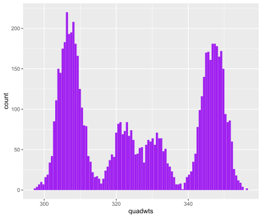
## -----------------------------------------------------------------------------
library("HistData")
ZeaMays$diff## [1] 6.125 -8.375 1.000 2.000 0.750 2.875 3.500 5.125 1.750 3.625
## [11] 7.000 3.000 9.375 7.500 -6.000ggplot(ZeaMays, aes(x = diff, ymax = 1/15, ymin = 0)) +
geom_linerange(linewidth = 1, col = "forestgreen") + ylim(0, 0.1)## -----------------------------------------------------------------------------
stopifnot(nrow(ZeaMays) == 15)## -----------------------------------------------------------------------------
B = 1000
meds = replicate(B, {
i = sample(15, 15, replace = TRUE)
median(ZeaMays$diff[i])
})
ggplot(tibble(medians = meds), aes(x = medians)) +
geom_histogram(bins = 30, fill = "purple")## -----------------------------------------------------------------------------
library("bootstrap")
bootstrap(ZeaMays$diff, B, mean)## $thetastar
## [1] 1.25833333 1.20833333 4.65000000 3.54166667 4.99166667 4.42500000
## [7] 2.72500000 3.58333333 1.50833333 2.76666667 3.03333333 1.26666667
## [13] 2.40833333 3.20000000 1.21666667 3.87500000 3.76666667 2.67500000
## [19] 2.43333333 2.00833333 1.95000000 3.16666667 2.55833333 1.97500000
## [25] 1.45000000 1.21666667 2.21666667 2.68333333 -0.70833333 2.12500000
## [31] 2.87500000 4.55833333 5.39166667 3.76666667 1.94166667 2.76666667
## [37] 1.30833333 1.85000000 2.95000000 2.76666667 4.50833333 1.97500000
## [43] 2.50000000 3.17500000 3.01666667 -0.57500000 4.51666667 2.35000000
## [49] 3.77500000 3.44166667 2.87500000 3.52500000 2.64166667 2.34166667
## [55] 2.08333333 3.15833333 3.07500000 3.54166667 1.67500000 1.67500000
## [61] 2.93333333 4.44166667 3.05000000 1.33333333 2.06666667 3.25833333
## [67] 1.75833333 3.84166667 3.29166667 6.08333333 1.18333333 3.01666667
## [73] 2.39166667 3.65833333 2.55833333 0.34166667 0.64166667 4.47500000
## [79] 0.85833333 4.06666667 2.87500000 1.67500000 1.94166667 2.33333333
## [85] 3.87500000 5.15833333 2.90000000 2.34166667 3.15000000 1.29166667
## [91] 1.75833333 1.79166667 3.77500000 1.62500000 2.16666667 1.76666667
## [97] 0.77500000 2.54166667 2.65833333 4.29166667 2.05000000 1.73333333
## [103] 1.64166667 3.80000000 3.78333333 0.85833333 2.92500000 2.65000000
## [109] 2.13333333 2.56666667 3.02500000 2.16666667 2.41666667 0.22500000
## [115] 2.88333333 2.32500000 0.61666667 1.54166667 2.59166667 0.24166667
## [121] 2.10833333 1.12500000 3.28333333 3.15833333 1.90000000 3.86666667
## [127] 1.96666667 2.14166667 2.96666667 2.04166667 1.71666667 2.45000000
## [133] 2.24166667 2.82500000 2.12500000 3.18333333 4.08333333 1.69166667
## [139] 2.71666667 1.55000000 3.91666667 3.22500000 1.89166667 3.10000000
## [145] 2.30833333 2.67500000 2.20000000 2.03333333 2.93333333 3.00000000
## [151] 2.59166667 2.94166667 1.03333333 0.91666667 2.57500000 2.75833333
## [157] 0.93333333 4.00000000 1.35833333 2.20833333 0.07500000 2.84166667
## [163] 4.78333333 1.48333333 3.65833333 2.98333333 1.95833333 2.38333333
## [169] 2.31666667 3.17500000 1.23333333 3.90833333 4.21666667 2.07500000
## [175] 4.10833333 2.65833333 3.67500000 2.50000000 2.26666667 2.63333333
## [181] 2.43333333 2.65000000 2.60833333 3.56666667 3.54166667 0.36666667
## [187] 4.27500000 3.91666667 2.19166667 1.62500000 2.97500000 1.30833333
## [193] 3.41666667 2.04166667 2.03333333 3.84166667 4.16666667 2.23333333
## [199] 2.40833333 4.95000000 3.50833333 4.05000000 4.12500000 2.76666667
## [205] 3.64166667 3.40833333 1.25833333 2.15000000 1.38333333 5.69166667
## [211] 1.63333333 3.37500000 0.01666667 2.44166667 3.20833333 1.19166667
## [217] 3.54166667 4.90000000 1.45000000 3.55000000 3.58333333 0.61666667
## [223] 1.50833333 3.80833333 4.55833333 3.56666667 1.41666667 0.20833333
## [229] 2.47500000 3.00000000 -0.12500000 4.04166667 2.21666667 2.25000000
## [235] 3.34166667 3.28333333 3.26666667 4.86666667 2.81666667 4.79166667
## [241] 3.07500000 3.37500000 2.05833333 0.69166667 4.61666667 2.49166667
## [247] 2.99166667 2.61666667 2.50833333 1.86666667 3.28333333 2.70833333
## [253] 3.65833333 3.15000000 2.63333333 3.43333333 1.77500000 3.93333333
## [259] 1.95833333 4.55000000 3.34166667 3.55000000 3.25000000 2.84166667
## [265] 2.92500000 1.67500000 2.74166667 4.34166667 4.18333333 4.20833333
## [271] 3.30833333 3.80833333 5.23333333 0.60833333 3.82500000 0.86666667
## [277] 2.66666667 5.10000000 4.15833333 1.69166667 1.37500000 3.85000000
## [283] 4.29166667 3.48333333 -0.65000000 0.22500000 4.25833333 2.15000000
## [289] 3.50000000 2.70833333 0.27500000 0.61666667 2.40000000 1.64166667
## [295] 1.21666667 4.58333333 3.03333333 3.62500000 1.61666667 3.00833333
## [301] 4.40833333 3.41666667 2.27500000 1.97500000 2.71666667 1.70833333
## [307] 1.96666667 3.05000000 -0.25000000 2.65833333 3.31666667 4.12500000
## [313] 3.30000000 3.90833333 1.51666667 2.40000000 1.22500000 2.85000000
## [319] 3.38333333 3.10000000 2.65833333 2.63333333 1.52500000 3.36666667
## [325] 2.53333333 1.84166667 3.12500000 0.67500000 -0.90833333 1.40833333
## [331] 3.35000000 5.58333333 3.05000000 2.00833333 0.97500000 1.49166667
## [337] -0.47500000 2.35000000 3.89166667 3.69166667 3.20833333 3.85000000
## [343] 5.30000000 2.30833333 5.37500000 4.30000000 0.57500000 1.67500000
## [349] 2.25833333 5.06666667 3.30000000 -0.85000000 2.00833333 4.43333333
## [355] 2.55833333 3.45833333 4.34166667 2.35833333 2.60833333 1.59166667
## [361] 2.55000000 0.44166667 4.05000000 1.53333333 2.53333333 2.90833333
## [367] 0.12500000 2.46666667 2.52500000 3.09166667 1.35833333 2.09166667
## [373] 1.68333333 3.40000000 3.79166667 3.95833333 2.60000000 2.70000000
## [379] 4.67500000 2.94166667 3.00833333 1.39166667 2.32500000 0.94166667
## [385] 2.29166667 0.52500000 2.99166667 1.29166667 2.10000000 2.66666667
## [391] 2.75000000 1.93333333 4.59166667 3.38333333 4.09166667 3.37500000
## [397] 1.99166667 3.46666667 3.50833333 5.14166667 3.26666667 2.88333333
## [403] 0.76666667 2.50000000 3.63333333 2.95000000 2.48333333 3.17500000
## [409] 1.51666667 3.01666667 1.26666667 2.46666667 3.22500000 1.15000000
## [415] 2.65000000 3.34166667 1.51666667 2.41666667 4.85833333 2.99166667
## [421] 3.53333333 1.25833333 -0.84166667 3.47500000 4.37500000 1.99166667
## [427] 4.25000000 2.19166667 3.95833333 4.28333333 3.90000000 2.68333333
## [433] 2.45833333 3.42500000 3.22500000 3.25833333 3.91666667 0.41666667
## [439] 2.90833333 2.69166667 2.92500000 3.27500000 2.25833333 1.00833333
## [445] 3.00000000 1.80833333 2.10000000 3.69166667 2.36666667 2.11666667
## [451] 2.56666667 3.63333333 2.21666667 2.70833333 2.60833333 4.25833333
## [457] 3.55000000 1.90833333 -0.55000000 2.74166667 2.22500000 1.67500000
## [463] 1.05000000 0.69166667 1.97500000 2.94166667 5.25833333 1.12500000
## [469] 1.63333333 1.97500000 3.52500000 2.49166667 4.01666667 1.41666667
## [475] 3.60000000 3.68333333 3.75833333 2.92500000 1.51666667 2.88333333
## [481] 3.10833333 2.66666667 3.35000000 2.38333333 3.57500000 3.01666667
## [487] 2.81666667 4.58333333 2.35833333 2.56666667 4.08333333 1.29166667
## [493] 2.09166667 0.50000000 1.56666667 2.15000000 3.26666667 0.96666667
## [499] 2.02500000 4.88333333 3.94166667 2.92500000 2.94166667 3.00833333
## [505] 0.85833333 2.54166667 2.10833333 2.85833333 0.70833333 3.40833333
## [511] 1.87500000 2.15000000 1.10000000 3.08333333 1.20000000 3.17500000
## [517] 2.18333333 3.40000000 4.69166667 3.90833333 1.42500000 3.49166667
## [523] 4.09166667 2.79166667 2.11666667 3.32500000 4.50000000 2.66666667
## [529] 3.25000000 4.15000000 3.33333333 0.89166667 2.32500000 1.79166667
## [535] 3.26666667 1.16666667 1.86666667 1.00000000 4.55000000 3.02500000
## [541] 2.62500000 2.48333333 3.44166667 3.55833333 0.91666667 3.63333333
## [547] 2.55833333 1.10833333 1.34166667 1.82500000 2.45000000 2.98333333
## [553] 1.35000000 4.59166667 1.90833333 3.72500000 3.65833333 1.50000000
## [559] 2.19166667 2.70000000 3.58333333 3.17500000 1.55833333 0.54166667
## [565] 3.08333333 2.03333333 0.88333333 2.52500000 2.19166667 3.15000000
## [571] 3.20833333 2.84166667 3.15833333 3.59166667 1.25833333 4.67500000
## [577] 2.14166667 3.56666667 0.00000000 1.89166667 3.52500000 2.68333333
## [583] 2.38333333 3.22500000 2.37500000 1.44166667 2.20833333 4.70833333
## [589] 2.70833333 4.06666667 4.26666667 3.65833333 1.03333333 2.77500000
## [595] 4.81666667 2.10833333 0.52500000 3.55833333 1.12500000 1.20000000
## [601] 3.45833333 4.20833333 4.34166667 2.04166667 -1.26666667 2.60000000
## [607] 2.59166667 2.42500000 0.75000000 4.22500000 4.20000000 4.00000000
## [613] 4.33333333 2.53333333 3.58333333 3.93333333 3.60000000 3.17500000
## [619] 4.30000000 4.45000000 2.95833333 3.42500000 4.23333333 3.53333333
## [625] 1.77500000 1.10833333 4.49166667 2.44166667 0.25833333 3.30000000
## [631] 1.74166667 2.03333333 1.49166667 2.36666667 3.25000000 1.79166667
## [637] 0.10000000 4.47500000 3.29166667 3.50000000 2.07500000 0.61666667
## [643] 3.77500000 5.78333333 3.40833333 1.35000000 3.32500000 3.08333333
## [649] 2.10000000 2.27500000 0.65833333 2.29166667 1.84166667 2.51666667
## [655] 4.40833333 3.86666667 3.22500000 0.32500000 2.17500000 4.22500000
## [661] 2.74166667 2.69166667 0.13333333 0.12500000 3.56666667 1.45000000
## [667] 2.26666667 2.93333333 0.90000000 2.33333333 4.63333333 2.66666667
## [673] 4.13333333 3.27500000 2.57500000 3.19166667 2.96666667 4.02500000
## [679] 1.94166667 2.60000000 0.63333333 2.00833333 3.68333333 2.49166667
## [685] 3.82500000 0.88333333 1.97500000 2.42500000 0.47500000 0.53333333
## [691] -0.08333333 0.13333333 4.39166667 2.42500000 -1.14166667 1.49166667
## [697] 3.35000000 1.89166667 3.59166667 -0.43333333 3.47500000 3.80000000
## [703] 0.99166667 -0.22500000 2.13333333 2.25000000 1.20833333 3.01666667
## [709] 3.32500000 2.74166667 3.06666667 2.40000000 2.31666667 4.16666667
## [715] 2.68333333 1.60000000 2.82500000 1.97500000 3.42500000 3.00000000
## [721] 1.23333333 2.12500000 1.20000000 2.21666667 3.90000000 1.87500000
## [727] 0.67500000 1.81666667 3.66666667 0.95833333 4.50000000 3.23333333
## [733] 3.20000000 1.30833333 4.86666667 -0.34166667 4.55833333 1.78333333
## [739] 1.77500000 1.38333333 3.90833333 2.20833333 3.71666667 3.01666667
## [745] 3.02500000 1.40000000 3.41666667 2.14166667 4.77500000 2.48333333
## [751] 4.45000000 0.80833333 1.97500000 3.12500000 3.25000000 4.17500000
## [757] 3.14166667 1.31666667 2.00833333 1.92500000 3.19166667 0.35833333
## [763] 3.58333333 3.41666667 2.93333333 2.79166667 1.18333333 3.39166667
## [769] 0.55000000 2.75833333 0.52500000 1.05000000 2.94166667 2.45000000
## [775] 1.75833333 3.30000000 2.44166667 3.08333333 1.19166667 2.81666667
## [781] 3.93333333 3.05833333 3.60833333 4.02500000 1.44166667 3.24166667
## [787] 1.30000000 2.85000000 3.67500000 2.78333333 2.43333333 4.15833333
## [793] 4.05000000 2.50000000 1.61666667 3.33333333 2.10000000 3.09166667
## [799] 2.08333333 3.43333333 3.90833333 1.08333333 3.13333333 2.65000000
## [805] 2.01666667 1.95000000 2.37500000 2.84166667 4.04166667 1.87500000
## [811] 1.34166667 2.30833333 3.70833333 3.65000000 0.40833333 2.77500000
## [817] 2.46666667 4.18333333 4.23333333 2.10833333 2.36666667 2.50000000
## [823] 4.20000000 4.35833333 2.56666667 1.65000000 5.14166667 1.50833333
## [829] 3.07500000 1.78333333 3.35833333 3.90000000 3.32500000 4.84166667
## [835] 1.13333333 4.21666667 2.15833333 0.88333333 4.14166667 1.30000000
## [841] 4.26666667 1.45000000 2.85833333 4.74166667 2.32500000 2.17500000
## [847] 0.96666667 2.26666667 0.82500000 3.65833333 2.43333333 3.16666667
## [853] 3.42500000 0.75000000 1.23333333 3.84166667 2.15833333 3.18333333
## [859] 2.95833333 4.20833333 3.40000000 1.93333333 3.42500000 2.59166667
## [865] 1.72500000 2.55833333 4.05000000 1.30833333 3.15000000 0.90000000
## [871] 3.23333333 2.85000000 2.37500000 2.65000000 3.27500000 0.26666667
## [877] 1.58333333 2.70833333 4.80833333 0.43333333 2.82500000 2.31666667
## [883] 3.00000000 2.45833333 1.27500000 3.09166667 2.14166667 1.66666667
## [889] 0.90000000 3.46666667 3.25833333 3.70000000 1.13333333 5.33333333
## [895] 3.02500000 2.50833333 2.34166667 0.80833333 1.72500000 3.57500000
## [901] 3.54166667 3.84166667 2.02500000 -0.55000000 2.35000000 0.91666667
## [907] 3.20000000 3.25000000 3.24166667 4.74166667 3.18333333 2.32500000
## [913] 2.25000000 3.21666667 2.45833333 3.54166667 2.74166667 3.07500000
## [919] 1.81666667 1.03333333 3.21666667 -0.52500000 1.75833333 1.61666667
## [925] 2.15833333 5.04166667 2.04166667 2.92500000 2.85000000 3.14166667
## [931] 3.21666667 2.18333333 2.37500000 2.94166667 3.62500000 5.34166667
## [937] 3.23333333 3.82500000 2.50833333 5.04166667 1.78333333 -0.11666667
## [943] 3.26666667 3.46666667 2.75000000 2.83333333 2.39166667 1.66666667
## [949] 3.23333333 3.32500000 1.54166667 0.64166667 1.30833333 1.50000000
## [955] 0.83333333 4.55000000 1.75833333 2.72500000 3.76666667 2.64166667
## [961] 1.17500000 3.07500000 1.50833333 3.30000000 0.59166667 2.29166667
## [967] 2.55000000 4.30833333 3.80000000 3.93333333 2.84166667 1.87500000
## [973] 3.39166667 3.21666667 4.09166667 3.98333333 0.53333333 3.15833333
## [979] 3.41666667 4.19166667 2.39166667 1.50833333 2.68333333 1.90000000
## [985] 1.15000000 3.95833333 0.71666667 1.94166667 2.49166667 1.59166667
## [991] 4.83333333 3.15000000 2.30833333 2.49166667 4.42500000 2.40000000
## [997] 2.55000000 4.45000000 2.66666667 0.92500000
##
## $func.thetastar
## NULL
##
## $jack.boot.val
## NULL
##
## $jack.boot.se
## NULL
##
## $call
## bootstrap(x = ZeaMays$diff, nboot = B, theta = mean)bootstrap(ZeaMays$diff, B, median)## $thetastar
## [1] 2.875 2.875 3.000 5.125 3.000 3.500 3.500 2.875 3.500 2.875 2.000 2.000
## [13] 3.000 3.000 3.500 2.000 2.875 3.000 1.000 3.500 3.000 3.000 3.000 2.875
## [25] 2.000 3.625 3.000 2.875 1.750 5.125 3.500 5.125 3.625 2.875 3.625 3.625
## [37] 2.875 2.000 3.500 6.125 3.500 3.000 3.000 3.625 3.625 2.875 3.500 2.000
## [49] 3.000 1.750 2.875 3.625 6.125 2.875 3.500 1.000 5.125 2.000 1.750 5.125
## [61] 3.000 2.875 2.875 3.000 5.125 2.000 3.625 3.000 3.500 3.000 3.000 3.000
## [73] 3.000 3.000 2.875 2.875 3.000 2.875 2.875 2.875 3.625 3.500 3.000 2.000
## [85] 2.875 3.500 2.875 3.000 1.750 2.875 3.500 2.000 3.000 2.000 1.000 2.875
## [97] 6.125 6.125 2.875 1.750 6.125 3.500 2.875 3.000 2.875 6.125 3.625 2.875
## [109] 2.000 3.000 3.500 2.875 2.000 2.875 2.875 3.625 1.000 2.875 3.625 2.875
## [121] 1.750 2.000 3.500 3.500 1.750 3.625 7.000 3.500 3.000 2.875 2.000 2.875
## [133] 2.000 2.875 2.875 3.000 2.000 1.750 2.000 1.750 2.000 1.750 3.500 3.625
## [145] 2.875 1.750 2.875 3.500 3.000 3.625 3.500 3.500 1.750 5.125 2.875 2.875
## [157] 3.500 1.750 3.000 2.000 2.000 2.875 3.500 3.000 3.500 3.625 3.000 2.875
## [169] 5.125 1.750 2.000 3.000 3.000 3.500 3.000 5.125 6.125 3.000 3.625 2.875
## [181] 2.875 3.000 2.875 3.500 3.500 3.000 3.500 2.875 1.750 5.125 3.500 2.000
## [193] 2.000 3.000 3.625 2.875 2.875 3.000 3.000 3.000 3.625 2.875 2.000 3.500
## [205] 2.000 3.000 3.500 2.000 6.125 2.875 2.875 3.625 3.000 2.875 3.000 2.000
## [217] 3.500 3.625 2.000 3.625 3.625 3.000 3.500 3.500 0.750 3.000 5.125 5.125
## [229] 3.000 3.625 2.000 1.750 6.125 3.500 2.875 3.000 1.750 3.625 2.875 2.875
## [241] 2.000 3.500 3.000 2.875 1.000 2.875 3.625 2.000 2.875 3.000 2.875 3.500
## [253] 2.875 3.500 3.000 1.750 5.125 3.625 2.000 3.500 2.875 3.000 2.875 3.000
## [265] 5.125 2.875 1.000 5.125 3.000 3.000 2.875 3.000 3.000 2.875 3.500 2.875
## [277] 3.500 3.500 3.000 1.000 2.875 2.000 3.500 1.750 5.125 3.500 2.875 3.625
## [289] 0.750 1.750 6.125 3.000 3.000 3.625 2.875 3.000 2.000 3.000 3.000 3.000
## [301] 2.875 3.000 3.625 3.500 2.000 2.000 3.000 1.750 2.000 3.000 3.500 3.500
## [313] 3.625 3.500 6.125 3.000 5.125 5.125 3.500 2.875 3.500 3.625 2.875 3.000
## [325] 2.000 7.000 2.875 3.000 2.000 3.625 3.625 2.000 2.000 3.500 2.875 2.000
## [337] 2.875 2.000 2.875 3.000 2.000 3.000 3.000 2.875 3.500 2.875 3.000 2.875
## [349] 2.000 5.125 3.625 1.750 3.000 1.000 2.875 1.000 2.000 3.500 3.500 3.000
## [361] 1.000 3.500 2.000 2.875 3.625 1.750 3.625 2.875 3.000 3.500 3.500 3.500
## [373] 3.500 3.000 3.000 2.000 3.500 3.000 6.125 5.125 2.875 3.000 3.625 3.625
## [385] 3.500 3.000 1.750 3.000 3.625 3.000 2.000 3.000 2.875 5.125 1.750 2.875
## [397] 3.500 3.500 3.000 2.000 3.000 2.000 2.875 2.875 3.500 2.000 2.875 2.875
## [409] 3.000 3.500 2.875 2.000 3.000 3.500 3.000 3.500 2.875 5.125 2.875 2.875
## [421] 5.125 3.625 3.500 1.000 5.125 3.625 3.000 1.750 2.000 3.625 2.000 2.000
## [433] 3.625 2.875 3.000 3.000 3.000 3.625 1.750 3.000 3.625 3.000 2.875 3.500
## [445] 3.625 5.125 3.000 1.000 2.875 3.625 3.000 5.125 1.000 6.125 3.000 3.500
## [457] 1.750 3.500 1.000 1.750 1.000 6.125 3.500 2.875 5.125 6.125 2.000 3.500
## [469] 5.125 2.000 3.500 3.625 2.875 5.125 2.875 1.750 2.875 2.875 3.625 2.000
## [481] 3.500 1.000 3.000 1.000 1.750 6.125 3.500 3.625 3.500 2.875 3.500 2.000
## [493] 2.000 2.875 2.000 2.875 1.750 2.875 3.625 3.500 3.000 3.000 5.125 3.625
## [505] 3.625 3.000 3.625 1.750 2.000 3.000 3.500 2.000 3.000 2.875 2.875 2.000
## [517] 3.000 3.625 2.000 3.500 2.000 2.000 3.500 2.875 2.000 3.625 3.625 5.125
## [529] 3.000 6.125 2.875 3.625 3.000 2.000 5.125 3.500 3.000 3.000 2.875 1.000
## [541] 3.625 3.500 3.500 3.500 2.875 2.875 3.000 3.500 3.500 3.500 5.125 2.000
## [553] 3.625 2.875 3.500 3.500 3.500 3.500 3.000 2.000 2.000 1.000 3.500 3.625
## [565] 2.875 2.875 5.125 5.125 3.000 1.000 3.000 1.000 3.000 2.875 2.875 2.875
## [577] 6.125 3.500 3.500 3.000 3.500 3.000 3.500 1.750 3.625 2.000 2.000 3.000
## [589] 3.625 2.000 2.875 3.500 3.500 3.625 3.625 3.500 2.875 3.000 3.000 6.125
## [601] 3.000 2.875 1.750 5.125 2.875 3.625 3.625 3.000 1.000 3.500 3.000 3.500
## [613] 2.875 3.625 3.500 2.000 2.875 1.750 5.125 3.625 6.125 3.000 1.750 2.875
## [625] 3.500 1.750 3.500 3.500 3.000 3.500 3.625 3.500 3.000 3.500 2.875 1.750
## [637] 1.000 2.875 1.000 3.625 5.125 5.125 2.000 3.500 3.625 1.750 2.000 3.500
## [649] 3.500 2.000 2.875 2.875 2.875 2.875 3.500 3.500 3.000 2.875 2.875 3.500
## [661] 1.750 2.875 5.125 3.625 6.125 2.875 3.500 2.875 3.000 2.875 2.875 3.625
## [673] 3.000 5.125 3.500 5.125 2.000 2.875 3.000 2.000 2.000 3.000 1.750 2.875
## [685] 3.000 3.625 3.625 3.000 3.500 3.500 2.875 3.000 1.750 3.000 3.625 2.875
## [697] 2.875 2.875 3.000 3.000 3.000 3.625 3.000 5.125 2.875 3.500 2.875 6.125
## [709] 1.750 2.000 2.875 5.125 3.500 2.000 2.875 3.000 5.125 3.000 2.875 3.500
## [721] 3.625 3.500 3.500 2.000 2.875 3.000 3.000 3.625 2.875 5.125 3.000 3.625
## [733] 2.000 2.875 7.000 3.625 2.000 2.000 2.875 3.000 3.625 2.000 2.000 6.125
## [745] 2.000 1.750 2.875 3.500 2.000 6.125 2.000 3.000 2.875 5.125 2.000 2.000
## [757] 3.000 1.750 3.500 2.000 3.000 1.750 2.000 5.125 3.000 1.750 5.125 3.500
## [769] 3.000 5.125 3.625 5.125 2.875 2.875 0.750 2.000 3.000 3.625 2.000 2.875
## [781] 3.000 3.500 2.000 3.625 1.750 3.625 3.000 6.125 3.000 3.500 3.000 1.750
## [793] 5.125 2.875 3.500 3.500 2.875 3.500 1.750 2.000 3.625 3.000 3.000 3.625
## [805] 2.875 2.000 3.000 6.125 2.875 3.000 3.625 2.875 1.750 2.000 2.875 3.625
## [817] 3.625 3.500 3.500 1.000 2.875 2.875 3.000 3.000 1.750 2.875 3.000 2.000
## [829] 3.500 3.625 5.125 1.750 3.500 2.875 3.625 1.000 3.000 1.750 2.875 3.625
## [841] 2.875 2.875 3.500 5.125 5.125 3.000 2.875 2.875 3.500 2.000 2.000 3.625
## [853] 2.875 2.000 2.000 3.000 3.000 3.500 3.625 2.000 3.000 2.000 3.000 2.875
## [865] 1.000 5.125 2.875 2.000 3.000 3.500 3.000 2.875 3.000 5.125 3.500 1.000
## [877] 3.500 1.750 3.000 2.875 5.125 3.625 2.875 3.500 3.000 5.125 3.500 2.875
## [889] 2.000 3.625 2.875 3.500 3.500 2.875 3.000 3.000 2.000 3.500 2.875 3.000
## [901] 3.000 3.000 2.875 2.875 2.875 3.625 3.000 1.000 3.000 2.875 2.875 3.625
## [913] 1.750 3.625 2.875 2.875 1.750 3.500 3.000 3.000 2.000 3.000 3.000 3.000
## [925] 3.000 6.125 3.000 2.000 3.500 3.000 2.000 5.125 6.125 3.000 6.125 3.000
## [937] 3.500 3.625 3.500 3.625 3.625 3.500 3.625 1.750 2.000 3.000 2.875 5.125
## [949] 2.000 2.875 2.000 3.500 2.000 3.500 1.750 2.000 3.500 3.000 3.000 2.000
## [961] 2.000 3.000 1.000 3.000 3.500 2.875 1.750 2.875 2.875 1.000 2.875 3.625
## [973] 3.500 3.000 5.125 5.125 3.625 2.875 2.875 2.000 3.500 2.875 3.500 2.875
## [985] 3.500 3.625 3.000 5.125 3.500 5.125 2.000 3.000 3.500 3.500 2.875 3.000
## [997] 2.000 2.875 2.000 2.875
##
## $func.thetastar
## NULL
##
## $jack.boot.val
## NULL
##
## $jack.boot.se
## NULL
##
## $call
## bootstrap(x = ZeaMays$diff, nboot = B, theta = median)Laplace distribution
Probability density function :
\[f(x\mid \mu ,b)={\frac {1}{2b}}\exp \left(-{\frac {|x-\mu |}{b}}\right)\,\!\]
Laplace is a function of normal and exponential random variables:
\[X=\sqrt{W}\cdot Z, \quad W\sim Exp(1), \quad Z\sim N(0,1)\] The Laplace distribution with mean \(\mu \in \mathbb{R}\) and scale \(b > 0\) has the probability density function \[f_X(x)=\frac{1}{2b}\exp\left(-\frac{\left|x\right|}{b}\right)\] Note that if we can show that the Laplace distribution with mean \(0\) is a mixture of normals, then by shifting all these normals by \(\mu\), it follows that the Laplace distribution with mean \(\mu\) is also a mixture of normals.
Fix \(b > 0\). Let \(W \sim \text{Exp}(\frac{1}{2b^2})\), i.e. \[f_W(w) = \dfrac{1}{2b^2} \exp \left(-\dfrac{x}{2b^2} \right)\] for \(w \geq 0\), and let \(X \mid W = w \sim \mathcal{N}(0, w)\). We claim that \(X\) has the Laplace distribution with mean \(0\) and scale \(b\). This is equivalent to showing that for any \(x\), \[\begin{align} f_X(x)=\frac{1}{2b}\exp\left(-\frac{\left|x\right|}{b}\right) \iff \int_{0}^{\infty} f_{X\mid W=w}(x)f_{W}(w)dw = \frac{1}{2b}\exp\left(-\frac{\left|x\right|}{b}\right) \end{align}\] \[\begin{align} \int_{0}^{\infty} f_{X\mid W=w}(x)f_{W}(w)dw &= \int_{0}^{\infty} \frac{1}{\sqrt{2\pi w}}\exp\left(-\frac{x^2}{2w}\right)\frac{1}{2b^2}\exp\left(-\frac{w}{2b^2}\right)dw\\ &= \frac{1}{2b^2}\int_{0}^{\infty}\frac{1}{\sqrt{2\pi w}}\exp\left(-\frac{w^2+x^2b^2}{2b^2w}\right)dw\\ &= \frac{1}{2b^2}\int_{0}^{\infty}\frac{1}{\sqrt{2\pi w}}\exp\left(-\frac{(w-|x|b)^2}{2b^2w}-\frac{2w|x|b}{2b^2w}\right)dw\\ &= \frac{1}{2b^2}e^{-|x|/b}\int_{0}^{\infty}\frac{b}{\sqrt{2\pi b^2 w}}\exp\left(-\frac{(w-|x|b)^2}{2b^2w}\right)dw\\ &=\frac{1}{2b}\exp\left(-\frac{\left|x\right|}{b}\right) \end{align}\]
The Mean of \[\frac{1}{2b}\exp\left(-\frac{\left|x-\mu\right|}{b}\right)\] is \(\mu\) and Variance is \(2b^2\).
The Laplace distribution is an example of where the consideration of the generative process indicates how the variance and mean are linked. The expectation value and variance of an asymmetric Laplace distribution \(AL(\theta, \mu, \sigma)\) are \[\mathbb E(X)=\theta+ \mu\] and \[\text{var} (X)=\mu^2 +\sigma^2\] Note the variance is dependent on the mean, unless (the case of the symmetric Laplace Distribution). This is the feature of the distribution that makes it useful. Having a mean-variance dependence is very common for physical measurements, be they microarray fluorescence intensities, peak heights from a mass spectrometer, or reads counts from high-throughput sequencing, as we’ll see in the next section.
## -----------------------------------------------------------------------------
c(N3 = choose(5, 3), N15 = choose(29, 15))## N3 N15
## 10 77558760## -----------------------------------------------------------------------------
w = rexp(10000, rate = 1)
## -----------------------------------------------------------------------------
mu = 0.3
lps = rnorm(length(w), mean = mu, sd = sqrt(w))
ggplot(data.frame(lps), aes(x = lps)) +
geom_histogram(fill = "purple", binwidth = 0.1)## -----------------------------------------------------------------------------
mu = 0.3; sigma = 0.4; theta = -1
w = rexp(10000, 1)
alps = rnorm(length(w), theta + mu * w, sigma * sqrt(w))
ggplot(tibble(alps), aes(x = alps)) +
geom_histogram(fill = "purple", binwidth = 0.1)## -----------------------------------------------------------------------------
ggplot(tibble(x = rgamma(10000, shape = 2, rate = 1/3)),
aes(x = x)) + geom_histogram(bins = 100, fill= "purple")ggplot(tibble(x = rgamma(10000, shape = 10, rate = 3/2)),
aes(x = x)) + geom_histogram(bins = 100, fill= "purple")## -----------------------------------------------------------------------------
lambda = rgamma(10000, shape = 10, rate = 3/2)
gp = rpois(length(lambda), lambda = lambda)
ggplot(tibble(x = gp), aes(x = x)) +
geom_histogram(bins = 100, fill= "purple")## -----------------------------------------------------------------------------
library("vcd")
ofit = goodfit(gp, "nbinomial")
plot(ofit, xlab = "")ofit$par## $size
## [1] 10.23463
##
## $prob
## [1] 0.6037692## -----------------------------------------------------------------------------
x = 0:95
mu = 50
vtot = 80
v1 = vtot - mu
scale = v1/mu # 0.6
shape = mu^2/v1 # 83.3
p1 = dgamma(x = x, scale = 0.6, shape = 80)
p2 = dpois(x = x, lambda = mu*1.2)
p3 = dnbinom(x = x, mu = mu, size = mu^2/vtot)## -----------------------------------------------------------------------------
library("RColorBrewer")
cols = brewer.pal(8, "Paired")
par(mfrow=c(3,1), mai=c(0.5, 0.5, 0.01, 0.01))
xlim = x[c(1, length(x))]
plot(NA, NA, xlim=xlim, ylim=c(0,0.07), type="n", ylab="", xlab="")
polygon(x, p1, col=cols[1])
abline(v=mu, col="black", lwd=3)
abline(v=mu*1.2, col=cols[2], lty=2, lwd=3)
plot(x, p2, col=cols[3], xlim=xlim, ylab="", xlab="", type="h", lwd=2)
abline(v=mu*1.2, col=cols[2], lwd=2)
abline(v=mu*1.1, col=cols[4], lty=2, lwd=3)
plot(x, p3, col=cols[4], xlim=xlim, type="h", lwd=2, ylab="", xlab="")## -----------------------------------------------------------------------------
lambdas = seq(100, 900, by = 100)
simdat = lapply(lambdas, function(l)
tibble(y = rpois(n = 40, lambda=l), lambda = l)
) %>% bind_rows
simdat## # A tibble: 360 × 2
## y lambda
## <int> <dbl>
## 1 105 100
## 2 102 100
## 3 97 100
## 4 94 100
## 5 100 100
## 6 100 100
## 7 102 100
## 8 97 100
## 9 90 100
## 10 107 100
## # ℹ 350 more rowslibrary("ggbeeswarm")
ggplot(simdat, aes(x = lambda, y = y)) +
geom_beeswarm(alpha = 0.6, color = "purple")ggplot(simdat, aes(x = lambda, y = sqrt(y))) +
geom_beeswarm(alpha = 0.6, color = "purple")Expected Value of Square Root of Poisson Random Variable
In general, for smooth \(g(X)\) you can do a Taylor expansion around the mean \(\mu=E(X)\) :
\[g(X)=g(\mu)+g′(\mu)(X−\mu)+\frac{g′′(\mu)}{2!}(X−\mu)^2+\frac{g′′′(\mu)}{3!}(X−\mu)^3+⋯\] So
\[E[g(X)]=g(\mu)+\frac{g′′(\mu)}{2!}m_2+\frac{g′′′(\mu)}{3!}m_3+⋯\] where \(m_i\) is the \(i^{th}\) centered moment. In our case \(m_2=m_3=\lambda\), so:
\[E[g(X)]=\sqrt{\lambda}−\frac{\lambda^{−1/2}}{8}+\frac{\lambda^{−3/2}}{16}+⋯\] This approximation is useful only if \(\lambda \gg 1\)
The mean and variance of any Poisson process is given as
\[E[P(\lambda_i)] = Var[P(\lambda_i)] = \lambda_i\]
Square root transformation of Poisson process
\[\operatorname{var}(\sqrt{P(\lambda)})=E[P(\lambda)]-E[\sqrt{P(\lambda)}]^2=\lambda-E[\sqrt{P(\lambda)}]^2\]
The second term can be approximated better as follows:
\[E[\sqrt{P(\lambda)}]\approx \sqrt{\lambda}-\frac{\lambda^{-1/2}}{8}+\frac{\lambda^{-3/2}}{16}+...\]
Which is why the expected value is also approximated by \(\sqrt \lambda\). Square of it will be \[E[\sqrt{P(\lambda)}]^2\approx \lambda -\frac{1}{4}+\frac{9}{64\lambda}+...\]
So, the variance will be approximately \[\operatorname{var}(\sqrt{P(\lambda)})\approx \frac{1}{4}-\frac{9}{64\lambda}+...\]
which is approximately \(1/4\) for large \(\lambda\), and the standard deviation is approximately \(1/2\).
## -----------------------------------------------------------------------------
.o = options(digits = 3)
summarise(group_by(simdat, lambda), sd(y), sd(2*sqrt(y)))## # A tibble: 9 × 3
## lambda `sd(y)` `sd(2 * sqrt(y))`
## <dbl> <dbl> <dbl>
## 1 100 10.3 1.03
## 2 200 14.7 1.05
## 3 300 17.9 1.04
## 4 400 19.2 0.959
## 5 500 23.1 1.03
## 6 600 25.5 1.05
## 7 700 26.8 1.02
## 8 800 26.7 0.945
## 9 900 37.0 1.24options(.o)## -----------------------------------------------------------------------------
muvalues = 2^seq(0, 10, by = 1)
simgp = lapply(muvalues, function(mu) {
u = rnbinom(n = 1e4, mu = mu, size = 4) # size: target for number of successful trials, or dispersion parameter (the shape parameter of the gamma mixing distribution). Must be strictly positive, need not be integer.
tibble(mean = mean(u), sd = sd(u),
lower = quantile(u, 0.025),
upper = quantile(u, 0.975),
mu = mu)
} ) %>% bind_rows
simgp## # A tibble: 11 × 5
## mean sd lower upper mu
## <dbl> <dbl> <dbl> <dbl> <dbl>
## 1 1.00 1.11 0 4 1
## 2 1.98 1.72 0 6 2
## 3 4.03 2.86 0 11 4
## 4 8.03 4.93 1 20 8
## 5 16.1 8.96 3 38 16
## 6 32.0 16.7 8 71 32
## 7 64.1 33.2 16 143 64
## 8 127. 64.9 32 282 128
## 9 257. 129. 69 556 256
## 10 507. 252. 133 1094. 512
## 11 1020. 508. 272 2239. 1024head(as.data.frame(simgp), 2)## mean sd lower upper mu
## 1 1.0019 1.110234 0 4 1
## 2 1.9824 1.723133 0 6 2ggplot(simgp, aes(x = mu, y = mean, ymin = lower, ymax = upper)) +
geom_point() + geom_errorbar()## -----------------------------------------------------------------------------
simgp = mutate(simgp,
slopes = 1 / sd,
trsf = cumsum(slopes * mean))
ggplot(simgp, aes(x = mean, y = trsf)) +
geom_point() + geom_line() + xlab("")Call our transformation function \(g\), and assume it’s differentiable. Also call our random variables \(X_i\) , with means \(\mu_i\) and variances \(v_i\) , and we assume that \(\mu_i\) and \(v_i\) are related by a functional relationship \(v_i = \nu(\mu_i)\) . Then, for values of \(X_i\) in the neighborhood of its mean \(\mu_i\), \[g(X_i)=g(\mu_i)+g'(\mu_i)(X_i-\mu_i)+\cdots\]
where the dots stand for higher order terms that we can neglect. The variances of the transformed values are then \[\text{Var }(g(X_i))\simeq g'(\mu_i)^2\] \[\text{Var }(X_i)\simeq g'(\mu_i)^2\nu(\mu_i)\]
where we have used the rules \(\text{Var}(X-c)=\text{Var}(X)\) and \(\text{Var}(cX)=c^2\text{Var}(X)\) that hold whenever \(c\) is a constant number. Requiring that this be constant leads to the differential equation \[g'(x)=\frac{1}{\sqrt{\nu(x)}}\] For a given mean-variance relationship \(\nu(\mu)\), we can solve this for the function \(g\) . Let’s check this for some simple cases:
- if \(\nu(\mu)=\mu\)(Poisson), we recover \(g(x)=\sqrt{x}\), the square root transformation.
- If \(\nu(\mu)=\alpha \mu^2\), solving the differential equation \[g'(x)=\frac{1}{\sqrt{\nu(x)}}\] gives \(g(x)=\log(x)\). This explains why the logarithm transformation is so popular in many data analysis applications: it acts as a variance stabilizing transformation whenever the data have a constant coefficient of variation, that is, when the standard deviation is proportional to the mean.
## -----------------------------------------------------------------------------
f = function(x, a)
ifelse (a==0,
sqrt(x),
log(2*sqrt(a) * sqrt(x*(a*x+1)) + 2*a*x+1) / (2*sqrt(a)))
x = seq(0, 24, by = 0.1)
df = lapply(c(0, 0.05*2^(0:5)), function(a)
tibble(x = x, a = a, y = f(x, a))) %>% bind_rows()
ggplot(df, aes(x = x, y = y, col = factor(a))) +
geom_line() + labs(col = expression(alpha))## -----------------------------------------------------------------------------
f2 = function(x, a) ifelse (a==0, sqrt(x), acosh(2*a*x + 1) / (2*sqrt(a)))
with(df, max(abs(f2(x,a) - y)))## [1] 8.881784e-16stopifnot(with(df, max(abs(f2(x,a) - y))) < 1e-10)## -----------------------------------------------------------------------------
a = c(0.2, 0.5, 1)
f(1e6, a) ## [1] 15.196731 10.259171 7.6009031/(2*sqrt(a)) * (log(1e6) + log(4*a))## [1] 15.196728 10.259170 7.600902## -----------------------------------------------------------------------------
setwd("D:/books/R/blogdown/hugo")
mx = readRDS("../data/Myst.rds")$yvar
str(mx)## num [1:1800] 0.3038 0.0596 -0.0204 0.1849 0.2842 ...ggplot(tibble(mx), aes(x = mx)) + geom_histogram(binwidth = 0.025)## -----------------------------------------------------------------------------
wA = runif(length(mx))
wB = 1 - wA
## -----------------------------------------------------------------------------
iter = 0
loglik = -Inf
delta = +Inf
tolerance = 1e-3
miniter = 50
maxiter = 1000## -----------------------------------------------------------------------------
while((delta > tolerance) && (iter <= maxiter) || (iter < miniter)) {
lambda = mean(wA)
muA = weighted.mean(mx, wA)
muB = weighted.mean(mx, wB)
sdA = sqrt(weighted.mean((mx - muA)^2, wA))
sdB = sqrt(weighted.mean((mx - muB)^2, wB))
pA = lambda * dnorm(mx, mean = muA, sd = sdA)
pB = (1 - lambda) * dnorm(mx, mean = muB, sd = sdB)
ptot = pA + pB
wA = pA / ptot
wB = pB / ptot
loglikOld = loglik
loglik = sum(log(pA)) + sum(log(pB))
delta = abs(loglikOld - loglik)
iter = iter + 1
}
iter## [1] 315## -----------------------------------------------------------------------------
.o = options(digits = 3)
c(lambda, muA, muB, sdA, sdB)## [1] 0.5244 0.1473 -0.1694 0.1498 0.0983options(.o)
## -----------------------------------------------------------------------------
.o = options(digits = 3)
gm = mixtools::normalmixEM(mx, k = 2)## number of iterations= 276with(gm, c(lambda[1], mu, sigma))## [1] 0.4756 -0.1694 0.1473 0.0983 0.1498options(.o)## -----------------------------------------------------------------------------
library("flexmix")##
## Attaching package: 'flexmix'## The following object is masked from 'package:boot':
##
## boot## The following object is masked from 'package:Gviz':
##
## groupdata("NPreg")
NPreg## x yn yp yb class id1 id2
## 1 4.17663259 22.3803787 4 0 1 1 1
## 2 1.20163055 5.1115746 3 0 1 1 1
## 3 2.29500635 13.2510576 9 0 1 2 1
## 4 5.96586786 30.2852404 3 1 1 2 1
## 5 2.35808338 14.7645078 4 0 1 3 2
## 6 7.63706104 42.8337601 1 1 1 3 2
## 7 6.45246460 34.2667327 2 1 1 4 2
## 8 9.40163061 42.8138796 2 1 1 4 2
## 9 8.29927115 49.0659954 2 1 1 5 3
## 10 4.33053110 19.3005980 4 0 1 5 3
## 11 4.61978652 29.8703835 2 0 1 6 3
## 12 9.71513912 46.4716001 0 1 1 6 3
## 13 2.27872578 4.6923751 9 1 1 7 4
## 14 6.92897805 34.3449694 0 1 1 7 4
## 15 7.25327696 32.9045352 0 1 1 8 4
## 16 0.40434891 1.2872814 6 1 1 8 4
## 17 9.36491266 49.8382514 2 1 1 9 5
## 18 2.57714695 11.8085276 4 0 1 9 5
## 19 7.74066373 33.0757635 1 1 1 10 5
## 20 9.89474383 51.6069735 4 1 1 10 5
## 21 0.55744518 4.6421303 10 0 1 11 6
## 22 1.54234713 7.9628999 10 0 1 11 6
## 23 8.09633770 45.4036015 2 1 1 12 6
## 24 1.08087069 4.1806895 7 0 1 12 6
## 25 3.13088989 10.1874921 2 0 1 13 7
## 26 7.36439054 37.6754354 2 1 1 13 7
## 27 8.85874283 45.7929465 2 1 1 14 7
## 28 5.66849986 33.4717028 2 1 1 14 7
## 29 6.50576695 32.7460204 1 1 1 15 8
## 30 1.53762205 4.8097527 6 0 1 15 8
## 31 6.73142951 34.4618322 1 1 1 16 8
## 32 0.54238057 6.7040248 8 0 1 16 8
## 33 0.34155727 1.5408095 6 0 1 17 9
## 34 4.75640223 22.0913005 5 0 1 17 9
## 35 8.73919645 42.1726314 0 1 1 18 9
## 36 2.70205396 10.7961692 4 0 1 18 9
## 37 8.30704714 40.8369753 0 1 1 19 10
## 38 3.74932799 13.5857934 6 0 1 19 10
## 39 4.28106160 17.0062023 5 0 1 20 10
## 40 0.44036390 4.8016176 4 0 1 20 10
## 41 7.20383449 35.2574679 1 1 1 21 11
## 42 0.82404352 3.6779612 7 0 1 21 11
## 43 4.42757293 21.4447769 3 1 1 22 11
## 44 0.33236471 3.9858411 4 0 1 22 11
## 45 8.98413221 41.3208325 1 1 1 23 12
## 46 4.09455624 22.0601242 2 0 1 23 12
## 47 1.95838182 7.5923929 4 0 1 24 12
## 48 9.15891990 41.5530343 0 1 1 24 12
## 49 8.89296908 45.8451285 1 0 1 25 13
## 50 2.45296791 7.2185934 5 0 1 25 13
## 51 0.06295317 -0.7382478 4 0 1 26 13
## 52 2.85040085 11.5908587 3 0 1 26 13
## 53 7.96088626 36.2613458 3 1 1 27 14
## 54 5.77690206 28.5847337 3 1 1 27 14
## 55 4.13608936 25.3425513 3 0 1 28 14
## 56 0.42128309 -1.4128968 7 0 1 28 14
## 57 9.84276558 51.1781358 1 1 1 29 15
## 58 0.20367758 3.0164145 8 0 1 29 15
## 59 1.22520362 10.0824988 3 0 1 30 15
## 60 7.71576158 40.6650416 2 1 1 30 15
## 61 5.68957164 33.5874400 1 1 1 31 16
## 62 1.64931152 7.6441527 8 1 1 31 16
## 63 6.21120097 31.0314027 2 0 1 32 16
## 64 1.26452997 -1.4815158 5 0 1 32 16
## 65 6.92773212 30.1226659 2 0 1 33 17
## 66 5.03979465 24.0594062 0 1 1 33 17
## 67 7.31309950 44.6842204 0 1 1 34 17
## 68 4.63261999 27.0774981 4 0 1 34 17
## 69 0.51121986 5.3782324 4 0 1 35 18
## 70 1.07330848 5.5521353 4 0 1 35 18
## 71 7.96409829 34.2089461 2 1 1 36 18
## 72 1.99945993 5.6326370 3 0 1 36 18
## 73 1.87378620 6.1134515 7 0 1 37 19
## 74 4.74580563 19.8444540 2 0 1 37 19
## 75 5.76907872 26.7631365 3 1 1 38 19
## 76 0.52463379 4.3079712 2 0 1 38 19
## 77 3.46584146 14.5557600 6 0 1 39 20
## 78 7.29252838 39.4454486 1 1 1 39 20
## 79 5.40030459 26.7301592 3 0 1 40 20
## 80 2.79238097 14.0218112 8 0 1 40 20
## 81 3.90283673 15.9778277 2 0 1 41 21
## 82 5.04182776 26.2447923 2 0 1 41 21
## 83 6.42973634 30.8354474 1 1 1 42 21
## 84 7.48850271 35.4915284 5 1 1 42 21
## 85 8.63020112 48.2392871 2 1 1 43 22
## 86 7.15776147 39.7617173 3 1 1 43 22
## 87 8.97324030 43.3963793 0 1 1 44 22
## 88 2.60951572 13.8106373 3 0 1 44 22
## 89 2.96134369 12.6836033 5 1 1 45 23
## 90 8.83580907 46.3313585 1 1 1 45 23
## 91 6.14941012 23.8764264 4 1 1 46 23
## 92 1.95363952 10.5716207 4 0 1 46 23
## 93 4.39655041 18.5927401 3 0 1 47 24
## 94 3.13603434 15.2807182 4 0 1 47 24
## 95 5.99525632 29.7251730 1 1 1 48 24
## 96 8.79126861 53.4866896 2 1 1 48 24
## 97 9.68095973 49.4019432 2 1 1 49 25
## 98 7.40750214 37.4921016 2 1 1 49 25
## 99 4.11756789 26.1089606 2 1 1 50 25
## 100 8.77639766 43.8204884 0 1 1 50 25
## 101 8.39039786 30.0024180 9 0 2 51 26
## 102 2.11470492 30.7784942 3 1 2 51 26
## 103 9.04111851 25.4453871 4 0 2 52 26
## 104 3.39129320 37.8679635 2 1 2 52 26
## 105 9.04211228 26.6354192 6 0 2 53 27
## 106 3.99784800 43.6441463 5 1 2 53 27
## 107 6.35936341 40.1565408 6 0 2 54 27
## 108 7.99747483 26.8208712 7 0 2 54 27
## 109 4.40447242 47.2149865 6 0 2 55 28
## 110 8.03273979 28.4504319 6 0 2 55 28
## 111 9.03479311 30.4918954 5 0 2 56 28
## 112 3.21633814 34.7144548 4 1 2 56 28
## 113 1.16274254 18.5742013 2 1 2 57 29
## 114 3.38076958 37.0781720 2 1 2 57 29
## 115 1.25251094 22.5944761 3 1 2 58 29
## 116 5.87154603 38.5059444 4 0 2 58 29
## 117 1.77085263 32.5862954 3 0 2 59 30
## 118 3.43636802 36.4778478 4 1 2 59 30
## 119 7.16614059 29.6802797 3 0 2 60 30
## 120 3.76918128 40.6183397 5 1 2 60 30
## 121 1.52081588 29.7501823 1 1 2 61 31
## 122 5.37764869 40.1085457 7 0 2 61 31
## 123 0.68309405 26.2862360 2 1 2 62 31
## 124 5.80866236 38.1224013 6 0 2 62 31
## 125 5.32623267 34.4266149 4 1 2 63 32
## 126 1.55523806 28.9870979 4 1 2 63 32
## 127 1.77223938 31.0807937 3 1 2 64 32
## 128 9.47912345 25.0666566 7 0 2 64 32
## 129 7.34257603 34.7295232 3 0 2 65 33
## 130 7.56841214 30.5249015 12 0 2 65 33
## 131 6.38570772 38.8844988 4 0 2 66 33
## 132 3.23916002 40.8915645 6 1 2 66 33
## 133 1.55249906 27.9477605 3 1 2 67 34
## 134 0.44023583 17.5178401 3 1 2 67 34
## 135 5.10267347 38.4661073 4 1 2 68 34
## 136 6.25680008 35.7063530 5 1 2 68 34
## 137 3.03429356 35.4377378 7 1 2 69 35
## 138 5.58708904 34.4944798 8 0 2 69 35
## 139 6.21969731 34.1132328 3 0 2 70 35
## 140 9.35484102 23.6351578 4 0 2 70 35
## 141 9.51248483 18.8757761 8 0 2 71 36
## 142 6.13313907 38.2737395 8 0 2 71 36
## 143 9.33058083 20.5529819 9 0 2 72 36
## 144 0.99726202 26.3021062 4 1 2 72 36
## 145 5.05373145 36.3972843 3 0 2 73 37
## 146 3.98479898 40.5567099 4 0 2 73 37
## 147 1.77266492 27.3847921 3 1 2 74 37
## 148 2.24338040 28.1594832 2 1 2 74 37
## 149 3.46701554 39.0302418 6 1 2 75 38
## 150 4.06068979 34.0714501 4 1 2 75 38
## 151 5.82560360 38.2653651 4 1 2 76 38
## 152 8.81287538 22.8008357 6 0 2 76 38
## 153 4.57472311 36.2760541 4 1 2 77 39
## 154 8.24189374 29.1903484 3 0 2 77 39
## 155 4.76454221 44.6066641 5 1 2 78 39
## 156 7.98348782 27.5794882 2 0 2 78 39
## 157 5.24510010 41.9042338 2 0 2 79 40
## 158 6.69475207 39.1258420 4 0 2 79 40
## 159 2.70818324 38.7040567 9 1 2 80 40
## 160 7.52318812 35.7197554 5 0 2 80 40
## 161 3.69377164 43.4333492 6 1 2 81 41
## 162 4.69006520 39.3015355 0 1 2 81 41
## 163 0.60398059 20.6504112 3 1 2 82 41
## 164 0.43911146 11.3941301 3 1 2 82 41
## 165 5.81689226 34.8166924 5 1 2 83 42
## 166 6.09789830 37.6550523 7 0 2 83 42
## 167 9.81102144 24.9727956 11 0 2 84 42
## 168 3.13948817 40.4528939 2 1 2 84 42
## 169 9.74593014 20.2982802 4 0 2 85 43
## 170 6.17080719 38.8148035 7 0 2 85 43
## 171 8.92470426 18.9851511 10 0 2 86 43
## 172 6.44711653 33.5411911 6 0 2 86 43
## 173 3.63741036 34.8878700 2 1 2 87 44
## 174 7.36664722 30.5144068 5 0 2 87 44
## 175 6.63565478 35.2423764 8 0 2 88 44
## 176 5.79653555 41.0503333 1 0 2 88 44
## 177 3.20066856 33.9889591 7 1 2 89 45
## 178 8.30276330 32.0745613 4 0 2 89 45
## 179 2.59769300 33.9575573 2 1 2 90 45
## 180 7.17121302 35.3457404 3 0 2 90 45
## 181 3.66614757 34.6844817 3 1 2 91 46
## 182 2.94551030 36.8147255 3 1 2 91 46
## 183 7.63484824 31.7443404 5 0 2 92 46
## 184 8.38360701 26.6002184 6 0 2 92 46
## 185 7.95656429 36.3470091 3 0 2 93 47
## 186 7.21477790 39.0676688 4 0 2 93 47
## 187 1.03266907 22.7904631 3 1 2 94 47
## 188 6.26142937 39.1718546 9 0 2 94 47
## 189 3.75780662 36.3338405 5 1 2 95 48
## 190 5.93019124 41.2870574 9 0 2 95 48
## 191 1.27990952 19.2903026 3 1 2 96 48
## 192 8.97071640 25.0368343 5 0 2 96 48
## 193 1.64046864 25.3235371 2 0 2 97 49
## 194 5.27091961 39.5271491 8 1 2 97 49
## 195 3.24612225 36.6728042 4 0 2 98 49
## 196 3.67903721 47.7854039 4 0 2 98 49
## 197 0.73162182 22.7780922 2 1 2 99 50
## 198 6.69055712 37.5966075 4 0 2 99 50
## 199 4.08498638 44.6838712 1 0 2 100 50
## 200 9.18692898 22.4081259 7 0 2 100 50## -----------------------------------------------------------------------------
m1 = flexmix(yn ~ x + I(x^2), data = NPreg, k = 2)
## -----------------------------------------------------------------------------
ggplot(NPreg, aes(x = x, y = yn)) + geom_point()## -----------------------------------------------------------------------------
modeltools::parameters(m1, component = 1)## Comp.1
## coef.(Intercept) -0.20801986
## coef.x 4.81563289
## coef.I(x^2) 0.03636977
## sigma 3.47480999modeltools::parameters(m1, component = 2)## Comp.2
## coef.(Intercept) 14.7181608
## coef.x 9.8452394
## coef.I(x^2) -0.9682084
## sigma 3.4808821modeltools::clusters(m1)## [1] 1 1 1 1 1 1 1 1 1 1 1 1 1 1 2 1 1 1 2 1 1 1 1 1 1 1 1 1 1 1 1 1 1 1 1 1 1
## [38] 1 1 1 2 1 1 1 1 1 1 1 1 1 1 1 1 1 1 1 1 1 1 1 1 1 1 1 1 1 1 1 1 1 2 1 1 1
## [75] 1 1 1 1 1 1 1 1 1 2 1 1 1 1 1 1 1 1 1 1 1 1 1 1 1 1 2 2 2 2 2 2 2 2 2 2 2
## [112] 2 2 2 2 2 2 2 2 2 2 2 2 2 2 2 2 2 2 2 2 2 2 2 2 2 2 2 1 2 2 2 2 2 2 2 2 2
## [149] 2 2 2 2 2 2 2 2 2 2 2 2 2 2 2 2 2 2 2 2 2 2 2 1 2 2 1 2 2 2 2 2 2 2 2 2 1
## [186] 1 2 2 2 2 2 2 2 2 2 2 2 2 2 2## -----------------------------------------------------------------------------
table(NPreg$class, modeltools::clusters(m1))##
## 1 2
## 1 95 5
## 2 5 95## -----------------------------------------------------------------------------
summary(m1)##
## Call:
## flexmix(formula = yn ~ x + I(x^2), data = NPreg, k = 2)
##
## prior size post>0 ratio
## Comp.1 0.494 100 145 0.690
## Comp.2 0.506 100 141 0.709
##
## 'log Lik.' -642.5451 (df=9)
## AIC: 1303.09 BIC: 1332.775## -----------------------------------------------------------------------------
NPreg = mutate(NPreg, gr = factor(class))
ggplot(NPreg, aes(x = x, y = yn, group = gr)) +
geom_point(aes(colour = gr, shape = gr)) +
scale_colour_hue(l = 40, c = 180)